A2 · GPT-6 Astra · attempt MMuABbc
Batch tb7 · job tb7_A_EXP22004263_21_Mar_2023_gpt-6-astra · trial A_EXP22004263_21_Mar_2023__MMuABbc. Long tool outputs are cut at 6,000 characters.
0.61
33.5
$21.81
177
165
task prompt (instruction.md)
<environment_context> <cwd>/task</cwd> <shell>bash</shell> <current_date>2026-11-05</current_date> <timezone>Etc/UTC</timezone> <filesystem><workspace_roots><root>/task</root></workspace_roots><permission_profile type="disabled"><file_system type="unrestricted" /></permission_profile></filesystem> </environment_context>
user message
# Gate a CellEvent caspase-3/7 + Zombie NIR plate (mouse primary neurons) **Goal:** in Cytoflow, gate all 30 wells of one Attune NxT plate as Cells → Single_Cells → Live → Caspase_pos, export per-well counts, and flag every well whose data should not be used. ## Experiment - Assay: CellEvent Caspase-3/7 Green flow assay with Zombie NIR viability dye. Acquired 20-Mar-2023 on an Attune NxT, unfixed. - Cells: WT and PGRN-KO mouse primary neurons (DIV8). - Treatment: camptothecin 1, 5, 10 or 20 µM (two wells each), DMSO vehicle, or no treatment (NT), for 5 h. - Staining after treatment: Zombie NIR (1:500, 10 min), trypsin harvest, CellEvent Caspase-3/7 (1:1000, 30 min, 37 °C). - Per-well genotype, treatment and stain: `/task/inputs/plate_layout.csv`. - Wells with `treatment = unrecorded` have no entry in the notebook plate map. Gate and report them like every other well. - `replicate = 0` means the replicate number is not recorded. ## Inputs | Path | Content | |---|---| | `/task/inputs/raw/` | 30 FCS files, one per well (`Caspase_primaryneurons_caspase_Group_<well>.fcs`) | | `/task/inputs/plate_layout.csv` | `file, well, genotype, treatment, stain, replicate, is_control, control_type` | | `/task/inputs/gating_strategy.md` | Written gating strategy: populations, channels, gate shapes | | `/task/inputs/start.flow` | Cytoflow workflow with the Import step preconfigured (one tube per file, conditions from the layout) | ## Channels Cytoflow shows the labels stored in the FCS files, not the detector IDs. | Detector | Name shown in Cytoflow | Real dye | Marks | |---|---|---|---| | FSC-A / FSC-H | `FSC-A` / `FSC-H` | scatter | size | | SSC-A / SSC-H | `SSC-A` / `SSC-H` | scatter | granularity; singlet discrimination | | BL1-A | `AAV-GFP-Caspase-A` | CellEvent Caspase-3/7 Green | caspase-3/7-active cells | | RL3-A | `LiveDead-Zombie NIR-A` | Zombie NIR | dead cells (bright); live = Zombie-negative | | Time | `Time` | n/a | acquisition time | The `AAV-GFP` part of the BL1-A label is stale: there is no AAV or GFP in this experiment. BL1-A carries CellEvent caspase only. ## Populations to report (exact names, in this order) | # | Population | Parent | Channels | Definition | |---|---|---|---|---| | 1 | `Cells` | `all_events` | FSC-A, SSC-A | intact cells, debris excluded | | 2 | `Single_Cells` | `Cells` | SSC-A, SSC-H | singlets | | 3 | `Live` | `Single_Cells` | RL3-A (+ SSC-A) | Zombie NIR-negative | | 4 | `Caspase_pos` | `Live` | BL1-A (+ SSC-A) | CellEvent caspase-3/7-positive | Use these exact strings as the Cytoflow gate names and in `counts.csv`. ## Controls (from the notebook plate map) | Wells (WT / PGRN-KO) | Control | Use | |---|---|---| | A1 / C1 | NT, no stain | autofluorescence baseline for BL1-A and RL3-A | | A2 / C2 | NT, Zombie NIR only | caspase-negative reference with viability dye present | | A3 / C3 | NT, CellEvent caspase only | Zombie-negative reference with caspase dye present | | A5 / C5 | DMSO vehicle, both dyes | vehicle control | | A7 / C7 | NT, both dyes | untreated control | ## Procedure and tool rules - Do all gating on screen in Cytoflow. The terminal has no flow-cytometry libraries and must not be used to read FCS event data. - Start: File → Open `/task/inputs/start.flow`, then answer **Yes** to run it. - Workflow rules: - Leave Import subsampling unset (full data). - Add no bleedthrough, autofluorescence or FlowClean operation before the gates. - Use one gate per population, applied to all wells. - Counts: for example, use a Channel Statistic (count) grouped by `well` on each gated subset, export the table to CSV, and tabulate it in the terminal. - Save the workflow from Cytoflow (File → Save) as `/task/outputs/workflow.flow`. Do not edit this file outside Cytoflow. ## Deliverables (all in `/task/outputs/`) | File | Content | |---|---| | `workflow.flow` | Saved Cytoflow workflow containing the four gates | | `counts.csv` | Columns `file, well, population, count, parent_population, pct_of_parent` | | `flags.csv` | Columns `file, well, usable, reason_category, evidence` | | `notes.md` | At most one page with headings `## Gates`, `## Quality control`, `## Deviations from the strategy`, in that order | **`counts.csv` rules** - One row per file × population: 30 × 4 = 120 rows. - `count`: integer events in the population. - `parent_population`: `all_events` for `Cells`; otherwise the parent from the population table. - `pct_of_parent`: count / parent count × 100, as a 0–100 float. **`flags.csv` rules** - One row per file (30 rows). - `usable`: `yes` or `no`. - `reason_category`: one of `ok`, `clog_or_interrupted_flow`, `ran_dry`, `too_few_events`, `saturation`, `bad_control`, `mislabeled_or_unexpected`, `other`. - `usable = yes` requires `ok`. - `usable = no` requires a category other than `ok`. - Flag any well whose data should not be used. - `evidence` on every `usable = no` row: - must give well-specific numbers, time-resolved where relevant (e.g. event counts, event-rate behaviour over Time, % events at scale maximum); - must include `confidence=high`, `confidence=medium` or `confidence=low`. **`notes.md` rules** - `## Gates`: how and why each gate was placed, including which control wells set each fluorescence boundary. - `## Quality control`: how wells were judged. - `## Deviations from the strategy`: every departure from `gating_strategy.md`, or "none". ## Time budget 2 hours. --- ## How you operate this computer You work from a **terminal** (bash, working directory `/task`). The analysis program, **Cytoflow 1.3.2**, is already running on a virtual screen (1440×900). You see and control that screen with the `cu` command: | Command | What it does | |---|---| | `cu screenshot /tmp/screen.png` | Save a screenshot. Then **open/view the image file** to see the screen. | | `cu click X Y` · `cu click X Y right` · `cu click X Y double` | Mouse click at pixel X,Y | | `cu drag X1 Y1 X2 Y2` · `cu move X Y` · `cu scroll X Y down 3` | Drag, move, scroll | | `cu type "text"` · `cu paste "text"` · `cu key ctrl+s` | Keyboard (use `cu paste` for file paths) | Take a fresh screenshot after actions to check what happened. - **Cytoflow.** If a "Welcome to Cytoflow!" dialog is showing, close it. In file dialogs, paste the full path (e.g. `/task/inputs/start.flow`) into the *File name* box. - **Gating must be done in Cytoflow on screen.** Do not install or use flow-cytometry libraries (flowkit, flowio, fcsparser, FlowCytometryTools, the cytoflow Python API, etc.) to gate or count events. Python (numpy, pandas, matplotlib, openpyxl) is available for working with exported tables and writing reports. - **Inputs** are in `/task/inputs/` (read-only). **Write every deliverable to `/task/outputs/`.** Only that folder is collected for grading. - **Limits.** There is no limit on the number of actions; the only limit is the time budget above. Save `workflow.flow` and your output files early and often.
const r = await tools.exec_command({cmd:"pwd && rg --files /task -g 'AGENTS.md' -g '*.md' -g '*.csv' -g '*.flow' && cat /task/inputs/gating_strategy.md && cat /task/inputs/plate_layout.csv","max_output_tokens":6000});text(r.output);
text(await tools.exec_command({cmd:"cu screenshot /tmp/screen.png","max_output_tokens":1000})); const i=await tools.view_image({path:"/tmp/screen.png"});image(i.image_url);
text(await tools.clock__curr_time({}));
Script completed Wall time 0.1 seconds Output:
/task /task/inputs/gating_strategy.md /task/inputs/start.flow /task/inputs/plate_layout.csv # Gating strategy: CellEvent caspase-3/7 + Zombie NIR, mouse primary neurons Use a single gate set and apply it unchanged to all 30 wells. Gate on uncompensated channels; apply no bleedthrough correction. ## Sequence | # | Population | Parent | Plot (x vs y) | Original gate shape | Cytoflow implementation | |---|---|---|---|---|---| | 1 | `Cells` | all events | FSC-A vs SSC-A | ellipse around the main cell cloud, excluding low-FSC debris | Polygon approximating the ellipse | | 2 | `Single_Cells` | `Cells` | SSC-H vs SSC-A | 4-vertex polygon along the singlet diagonal | Polygon | | 3 | `Live` | `Single_Cells` | RL3-A (`LiveDead-Zombie NIR-A`) vs SSC-A | rectangle around the Zombie NIR-negative events | Range 2D on RL3-A × SSC-A; a 1-D Range on RL3-A is also acceptable | | 4 | `Caspase_pos` | `Live` | BL1-A (`AAV-GFP-Caspase-A`) vs SSC-A | rectangle around the CellEvent-bright events | Range 2D on BL1-A × SSC-A; a 1-D Range or Threshold on BL1-A is also acceptable | ## Placing the fluorescence boundaries - These are guidance, not a record of how the original cut-offs were chosen. - `Live` (RL3-A): - Use the no-stain wells (A1, C1) and the caspase-only wells (A3, C3) to see where Zombie NIR-negative events lie. - Use treated wells to confirm that a separate Zombie-bright population falls outside the gate. - `Caspase_pos` (BL1-A): - Use the no-stain wells (A1, C1) and the Zombie-only wells (A2, C2) to see where caspase-negative events end. - Place the lower boundary above that population. - SSC-A limits on the rectangles should keep the gated cells and exclude events at the scatter extremes. Record your reasoning in `notes.md`. file,well,genotype,treatment,stain,replicate,is_control,control_type Caspase_primaryneurons_caspase_Group_A1.fcs,A1,WT,NT,unstained,1,yes,unstained Caspase_primaryneurons_caspase_Group_A2.fcs,A2,WT,NT,zombie_nir_only,1,yes,single_stain_zombie_nir Caspase_primaryneurons_caspase_Group_A3.fcs,A3,WT,NT,caspase_only,1,yes,single_stain_caspase Caspase_primaryneurons_caspase_Group_A5.fcs,A5,WT,DMSO,caspase_and_zombie_nir,1,yes,vehicle Caspase_primaryneurons_caspase_Group_A7.fcs,A7,WT,NT,caspase_and_zombie_nir,1,yes,untreated Caspase_primaryneurons_caspase_Group_A8.fcs,A8,WT,camptothecin_1uM,caspase_and_zombie_nir,1,no,none Caspase_primaryneurons_caspase_Group_A9.fcs,A9,WT,camptothecin_1uM,caspase_and_zombie_nir,2,no,none Caspase_primaryneurons_caspase_Group_A10.fcs,A10,WT,camptothecin_5uM,caspase_and_zombie_nir,1,no,none Caspase_primaryneurons_caspase_Group_A11.fcs,A11,WT,camptothecin_5uM,caspase_and_zombie_nir,2,no,none Caspase_primaryneurons_caspase_Group_B1.fcs,B1,WT,camptothecin_10uM,caspase_and_zombie_nir,1,no,none Caspase_primaryneurons_caspase_Group_B2.fcs,B2,WT,camptothecin_10uM,caspase_and_zombie_nir,2,no,none Caspase_primaryneurons_caspase_Group_B3.fcs,B3,WT,camptothecin_20uM,caspase_and_zombie_nir,1,no,none Caspase_primaryneurons_caspase_Group_B4.fcs,B4,WT,camptothecin_20uM,caspase_and_zombie_nir,2,no,none Caspase_primaryneurons_caspase_Group_B5.fcs,B5,WT,unrecorded,unrecorded,0,no,none Caspase_primaryneurons_caspase_Group_B6.fcs,B6,WT,unrecorded,unrecorded,0,no,none Caspase_primaryneurons_caspase_Group_C1.fcs,C1,PGRN_KO,NT,unstained,1,yes,unstained Caspase_primaryneurons_caspase_Group_C2.fcs,C2,PGRN_KO,NT,zombie_nir_only,1,yes,single_stain_zombie_nir Caspase_primaryneurons_caspase_Group_C3.fcs,C3,PGRN_KO,NT,caspase_only,1,yes,single_stain_caspase Caspase_primaryneurons_caspase_Group_C5.fcs,C5,PGRN_KO,DMSO,caspase_and_zombie_nir,1,yes,vehicle Caspase_primaryneurons_caspase_Group_C7.fcs,C7,PGRN_KO,NT,caspase_and_zombie_nir,1,yes,untreated Caspase_primaryneurons_caspase_Group_C8.fcs,C8,PGRN_KO,camptothecin_1uM,caspase_and_zombie_nir,1,no,none Caspase_primaryneurons_caspase_Group_C9.fcs,C9,PGRN_KO,camptothecin_1uM,caspase_and_zombie_nir,2,no,none Caspase_primaryneurons_caspase_Group_C10.fcs,C10,PGRN_KO,camptothecin_5uM,caspase_and_zombie_nir,1,no,none Caspase_primaryneurons_caspase_Group_C11.fcs,C11,PGRN_KO,camptothecin_5uM,caspase_and_zombie_nir,2,no,none Caspase_primaryneurons_caspase_Group_D1.fcs,D1,PGRN_KO,camptothecin_10uM,caspase_and_zombie_nir,1,no,none Caspase_primaryneurons_caspase_Group_D2.fcs,D2,PGRN_KO,camptothecin_10uM,caspase_and_zombie_nir,2,no,none Caspase_primaryneurons_caspase_Group_D3.fcs,D3,PGRN_KO,camptothecin_20uM,caspase_and_zombie_nir,1,no,none Caspase_primaryneurons_caspase_Group_D4.fcs,D4,PGRN_KO,camptothecin_20uM,caspase_and_zombie_nir,2,no,none Caspase_primaryneurons_caspase_Group_D5.fcs,D5,PGRN_KO,unrecorded,unrecorded,0,no,none Caspase_primaryneurons_caspase_Group_D6.fcs,D6,PGRN_KO,unrecorded,unrecorded,0,no,none
{"chunk_id":"13f72f","wall_time_seconds":0.00000385,"exit_code":0,"original_token_count":4,"output":"/tmp/screen.png\n"}
{"current_time":"2026-11-05 08:15:50 UTC"}text(await tools.exec_command({cmd:"mkdir -p /task/outputs\ncu click 919 491\ncu click 93 67\ncu paste /task/inputs/start.flow\ncu key enter\ncu screenshot /tmp/screen.png","max_output_tokens":1000}));image((await tools.view_image({path:"/tmp/screen.png"})).image_url);
Script completed Wall time 1.6 seconds Output:
{"chunk_id":"42ad0e","wall_time_seconds":1.440575908,"exit_code":0,"original_token_count":28,"output":"(symbol) No such key name 'enter'. Ignoring it.\n(symbol) No such key name 'enter'. Ignoring it.\n/tmp/screen.png\n"}
text(await tools.exec_command({cmd:"cu click 1319 746\ncu screenshot /tmp/screen.png","max_output_tokens":1000}));image((await tools.view_image({path:"/tmp/screen.png"})).image_url);
Script completed Wall time 0.2 seconds Output:
{"chunk_id":"6abf60","wall_time_seconds":0.00054986,"exit_code":0,"original_token_count":4,"output":"/tmp/screen.png\n"}
text(await tools.exec_command({cmd:"cu key Return\nsleep 1\ncu screenshot /tmp/screen.png","max_output_tokens":1000}));image((await tools.view_image({path:"/tmp/screen.png"})).image_url);
Script completed Wall time 1.1 seconds Output:
{"chunk_id":"d66594","wall_time_seconds":0.907653068,"exit_code":0,"original_token_count":4,"output":"/tmp/screen.png\n"}
text(await tools.exec_command({cmd:"cu click 750 449\nsleep 8\ncu screenshot /tmp/screen.png","max_output_tokens":1000}));image((await tools.view_image({path:"/tmp/screen.png"})).image_url);
Script completed Wall time 8.2 seconds Output:
{"chunk_id":"3e16af","wall_time_seconds":7.995309929,"exit_code":0,"original_token_count":4,"output":"/tmp/screen.png\n"}
text(await tools.exec_command({cmd:"cu click 227 179\nsleep 3\ncu screenshot /tmp/screen.png","max_output_tokens":1000}));image((await tools.view_image({path:"/tmp/screen.png"})).image_url);
Script completed Wall time 3.2 seconds Output:
{"chunk_id":"7ee0e0","wall_time_seconds":2.995148964,"exit_code":0,"original_token_count":4,"output":"/tmp/screen.png\n"}
text(await tools.exec_command({cmd:"cu click 21 29\ncu screenshot /tmp/screen.png","max_output_tokens":1000}));image((await tools.view_image({path:"/tmp/screen.png"})).image_url);
Script completed Wall time 0.2 seconds Output:
{"chunk_id":"10c754","wall_time_seconds":0.00000418,"exit_code":0,"original_token_count":4,"output":"/tmp/screen.png\n"}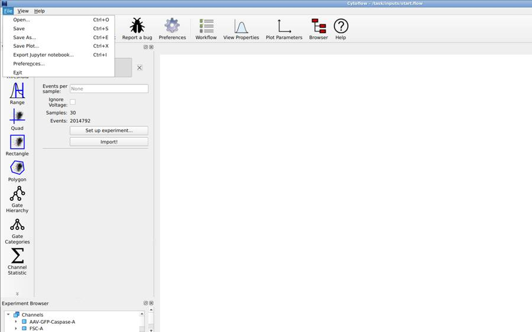
text(await tools.exec_command({cmd:"cu click 77 103\nsleep 0.5\ncu key ctrl+a\ncu paste /task/outputs/workflow.flow\ncu key Return\nsleep 1\ncu click 44 455\ncu screenshot /tmp/screen.png","max_output_tokens":1000}));image((await tools.view_image({path:"/tmp/screen.png"})).image_url);
Script completed Wall time 3.1 seconds Output:
{"chunk_id":"27bb9c","wall_time_seconds":2.970500455,"exit_code":0,"original_token_count":4,"output":"/tmp/screen.png\n"}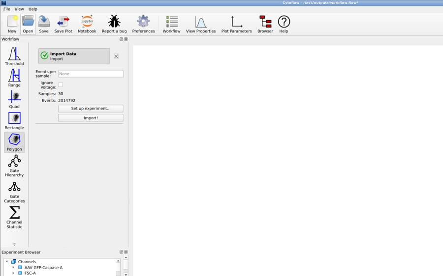
text(await tools.exec_command({cmd:"sleep 1\ncu screenshot /tmp/screen.png","max_output_tokens":1000}));image((await tools.view_image({path:"/tmp/screen.png"})).image_url);
Script completed Wall time 1.1 seconds Output:
{"chunk_id":"cd2e54","wall_time_seconds":0.890116865,"exit_code":0,"original_token_count":4,"output":"/tmp/screen.png\n"}
text(await tools.exec_command({cmd:"cu click 270 324\ncu type Cells\ncu click 284 354\ncu screenshot /tmp/screen.png","max_output_tokens":1000}));image((await tools.view_image({path:"/tmp/screen.png"})).image_url);
Script completed Wall time 0.4 seconds Output:
{"chunk_id":"5be897","wall_time_seconds":0.226700234,"exit_code":0,"original_token_count":4,"output":"/tmp/screen.png\n"}
text(await tools.exec_command({cmd:"cu click 222 379\ncu click 281 384\ncu screenshot /tmp/screen.png","max_output_tokens":1000}));image((await tools.view_image({path:"/tmp/screen.png"})).image_url);
Script completed Wall time 0.3 seconds Output:
{"chunk_id":"f1b822","wall_time_seconds":0.097456065,"exit_code":0,"original_token_count":4,"output":"/tmp/screen.png\n"}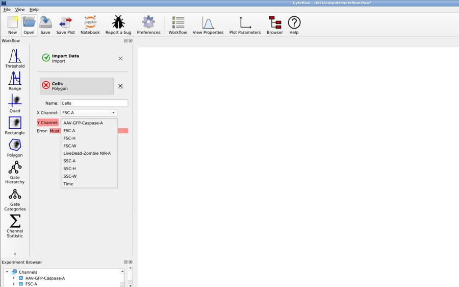
text(await tools.exec_command({cmd:"cu click 220 504\ncu click 654 74\nsleep 3\ncu screenshot /tmp/screen.png","max_output_tokens":1000}));image((await tools.view_image({path:"/tmp/screen.png"})).image_url);
Script completed Wall time 3.3 seconds Output:
{"chunk_id":"ec00fa","wall_time_seconds":3.142564697,"exit_code":0,"original_token_count":4,"output":"/tmp/screen.png\n"}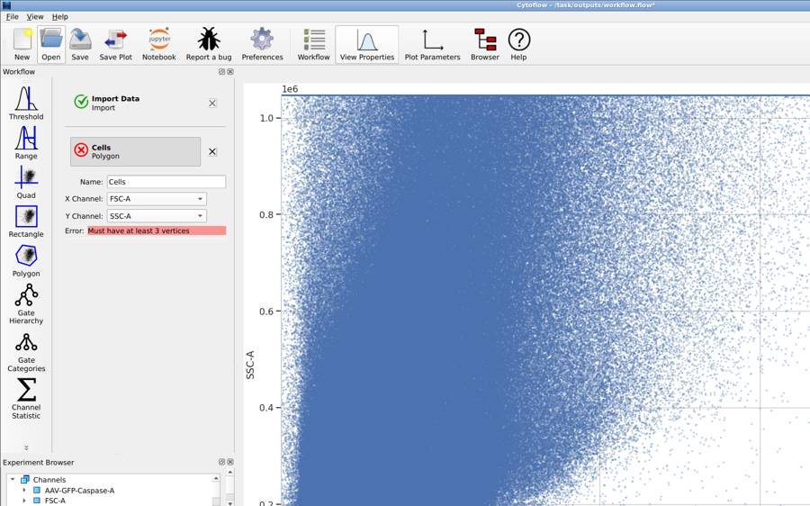
text(await tools.exec_command({cmd:"cu click 654 74\ncu screenshot /tmp/screen.png","max_output_tokens":1000}));image((await tools.view_image({path:"/tmp/screen.png"})).image_url);
Script completed Wall time 0.2 seconds Output:
{"chunk_id":"e21030","wall_time_seconds":0.031116204,"exit_code":0,"original_token_count":4,"output":"/tmp/screen.png\n"}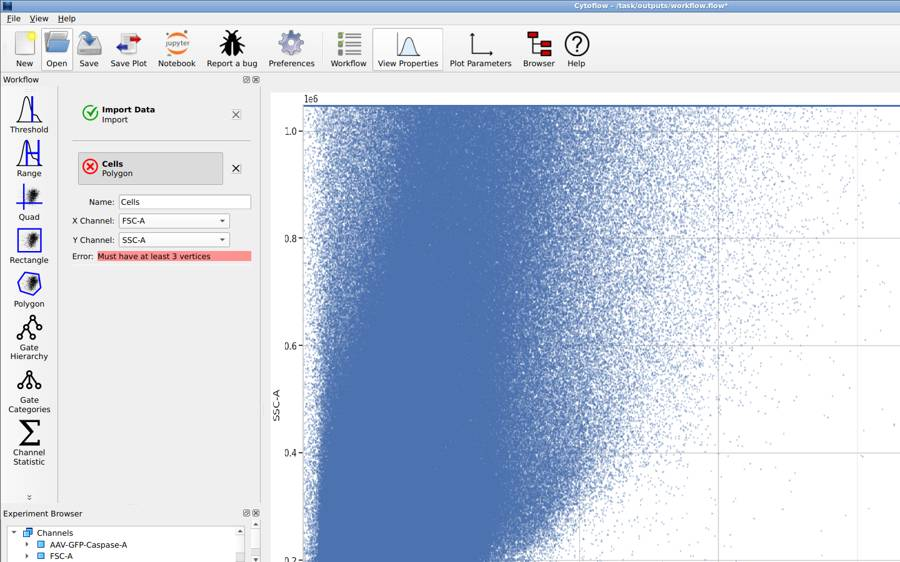
text(await tools.exec_command({cmd:"which wmctrl\nwmctrl -lG\ncu key alt+F8\ncu move 1425 875\ncu key Return\ncu screenshot /tmp/screen.png","max_output_tokens":1500}));image((await tools.view_image({path:"/tmp/screen.png"})).image_url);
Script completed Wall time 0.2 seconds Output:
{"chunk_id":"c2622c","wall_time_seconds":0.00000432,"exit_code":0,"original_token_count":16,"output":"/bin/bash: line 2: wmctrl: command not found\n/tmp/screen.png\n"}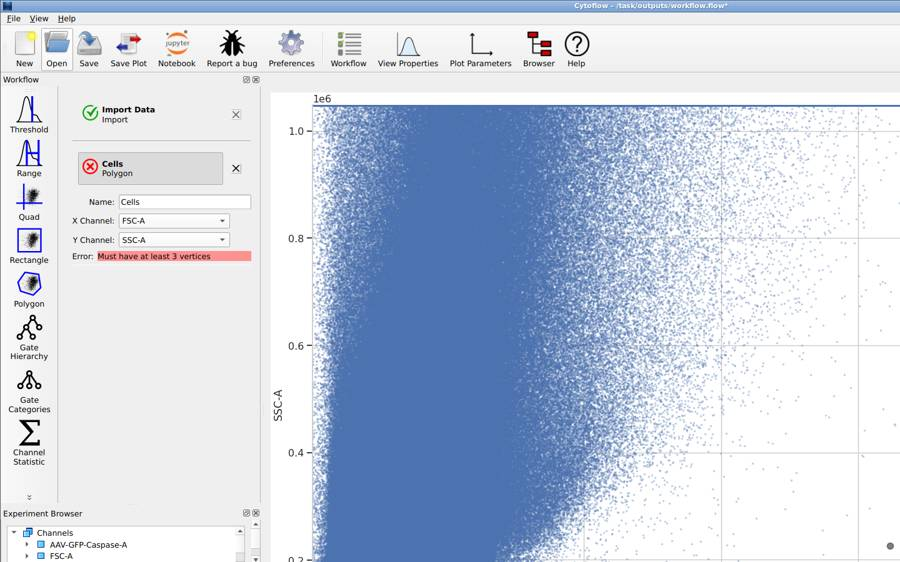
text(await tools.exec_command({cmd:"which xdotool\nxdotool getactivewindow getwindowgeometry\ncu key alt+F10\ncu screenshot /tmp/screen.png","max_output_tokens":1500}));image((await tools.view_image({path:"/tmp/screen.png"})).image_url);
Script completed Wall time 0.1 seconds Output:
{"chunk_id":"d04216","wall_time_seconds":0.00000408,"exit_code":0,"original_token_count":25,"output":"/usr/bin/xdotool\nWindow 14680070\n Position: 2,40 (screen: 0)\n Geometry: 2082x1171\n/tmp/screen.png\n"}text(await tools.exec_command({cmd:"xdotool getactivewindow windowsize 1436 856\nsleep 2\ncu screenshot /tmp/screen.png","max_output_tokens":1000}));image((await tools.view_image({path:"/tmp/screen.png"})).image_url);
Script completed Wall time 2.1 seconds Output:
{"chunk_id":"24bb1d","wall_time_seconds":1.907532837,"exit_code":0,"original_token_count":4,"output":"/tmp/screen.png\n"}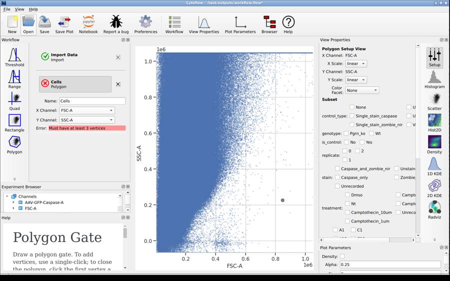
text(await tools.exec_command({cmd:"cu click 1161 204\ncu screenshot /tmp/screen.png","max_output_tokens":1000}));image((await tools.view_image({path:"/tmp/screen.png"})).image_url);
Script completed Wall time 0.2 seconds Output:
{"chunk_id":"a8ecc9","wall_time_seconds":0.008968167,"exit_code":0,"original_token_count":4,"output":"/tmp/screen.png\n"}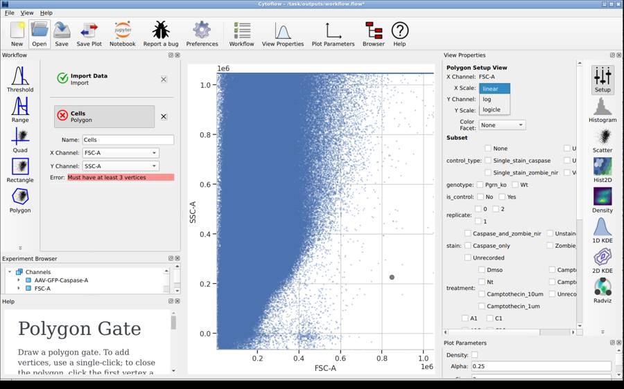
text(await tools.exec_command({cmd:"cu click 1136 254\ncu click 1157 256\ncu screenshot /tmp/screen.png","max_output_tokens":1000}));image((await tools.view_image({path:"/tmp/screen.png"})).image_url);
Script completed Wall time 0.3 seconds Output:
{"chunk_id":"88ef01","wall_time_seconds":0.115148358,"exit_code":0,"original_token_count":4,"output":"/tmp/screen.png\n"}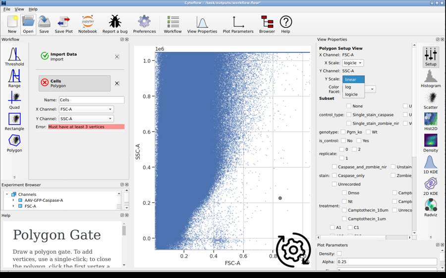
text(await tools.exec_command({cmd:"cu click 1138 304\ncu click 1094 820\nsleep 4\ncu screenshot /tmp/screen.png","max_output_tokens":1000}));image((await tools.view_image({path:"/tmp/screen.png"})).image_url);
Script completed Wall time 4.3 seconds Output:
{"chunk_id":"e6bb4a","wall_time_seconds":4.121360729,"exit_code":0,"original_token_count":4,"output":"/tmp/screen.png\n"}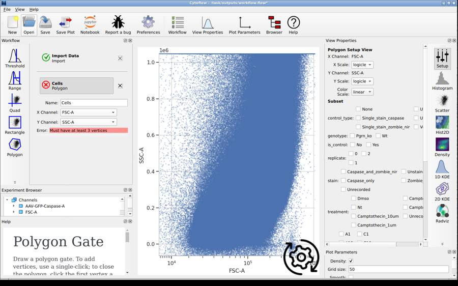
text(await tools.exec_command({cmd:"sleep 6\ncu screenshot /tmp/screen.png","max_output_tokens":1000}));image((await tools.view_image({path:"/tmp/screen.png"})).image_url);
Script completed Wall time 6.1 seconds Output:
{"chunk_id":"889709","wall_time_seconds":5.898503047,"exit_code":0,"original_token_count":4,"output":"/tmp/screen.png\n"}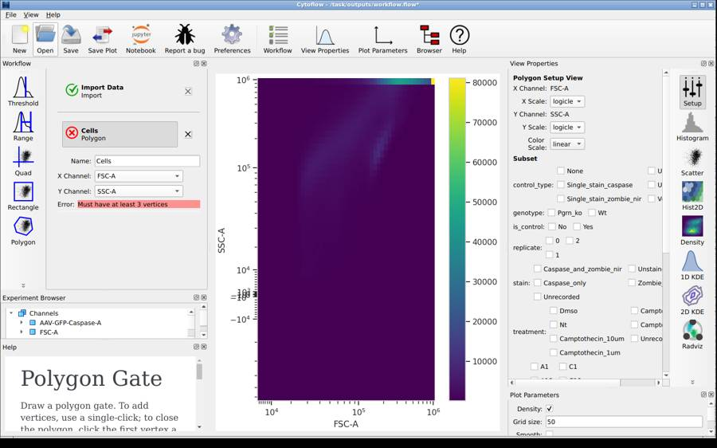
text(await tools.exec_command({cmd:"cu click 1161 288\ncu screenshot /tmp/screen.png","max_output_tokens":1000}));image((await tools.view_image({path:"/tmp/screen.png"})).image_url);
Script completed Wall time 0.2 seconds Output:
{"chunk_id":"2ac650","wall_time_seconds":0.002016712,"exit_code":0,"original_token_count":4,"output":"/tmp/screen.png\n"}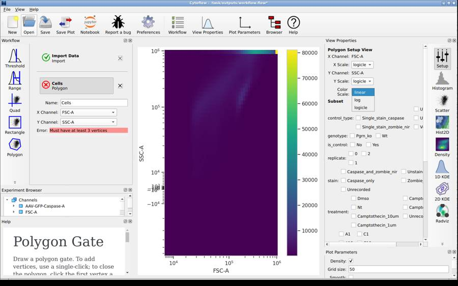
text(await tools.exec_command({cmd:"cu click 1125 314\ncu scroll 1231 686 down 5\nsleep 3\ncu screenshot /tmp/screen.png","max_output_tokens":1000}));image((await tools.view_image({path:"/tmp/screen.png"})).image_url);
Script completed Wall time 3.7 seconds Output:
{"chunk_id":"8af591","wall_time_seconds":3.509719059,"exit_code":0,"original_token_count":4,"output":"/tmp/screen.png\n"}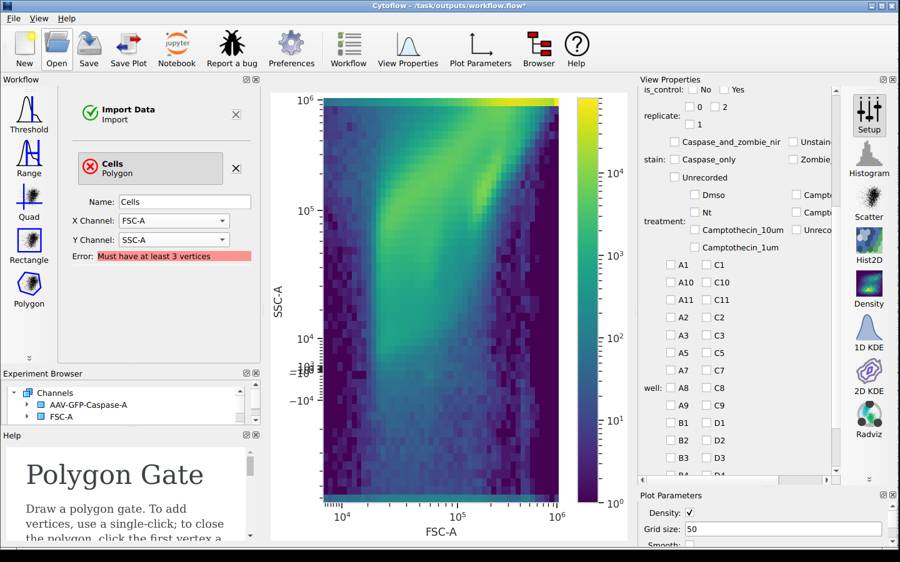
text(await tools.exec_command({cmd:"cu click 1073 592\nsleep 3\ncu screenshot /tmp/screen.png","max_output_tokens":1000}));image((await tools.view_image({path:"/tmp/screen.png"})).image_url);
Script completed Wall time 3.2 seconds Output:
{"chunk_id":"ec1389","wall_time_seconds":3.002657,"exit_code":0,"original_token_count":4,"output":"/tmp/screen.png\n"}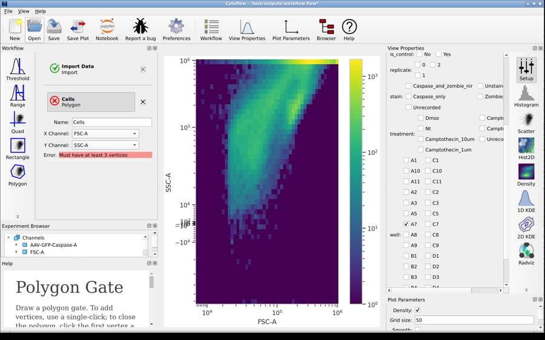
text(await tools.exec_command({cmd:"cu click 623 410\ncu click 640 310\ncu click 693 224\ncu click 769 171\ncu click 841 171\ncu click 862 211\ncu click 816 320\ncu click 760 430\ncu click 690 470\ncu click 648 465\ncu click 623 410\nsleep 3\ncu key ctrl+s\ncu screenshot /tmp/screen.png","max_output_tokens":1000}));image((await tools.view_image({path:"/tmp/screen.png"})).image_url);
Script completed Wall time 4.3 seconds Output:
{"chunk_id":"18b4f5","wall_time_seconds":4.083244821,"exit_code":0,"original_token_count":4,"output":"/tmp/screen.png\n"}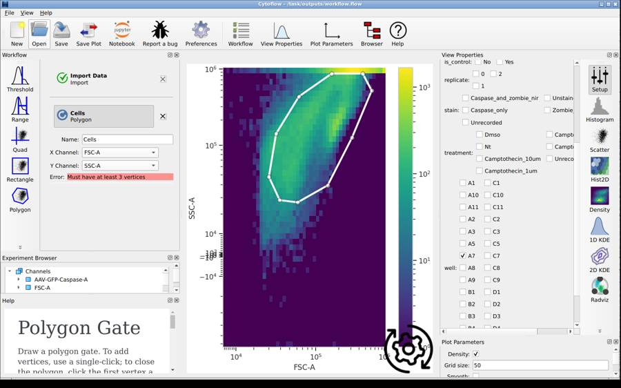
text(await tools.exec_command({cmd:"sleep 3\ncu click 45 454\nsleep 1\ncu screenshot /tmp/screen.png","max_output_tokens":1000}));image((await tools.view_image({path:"/tmp/screen.png"})).image_url);
Script completed Wall time 4.2 seconds Output:
{"chunk_id":"91ad0f","wall_time_seconds":4.00423566,"exit_code":0,"original_token_count":4,"output":"/tmp/screen.png\n"}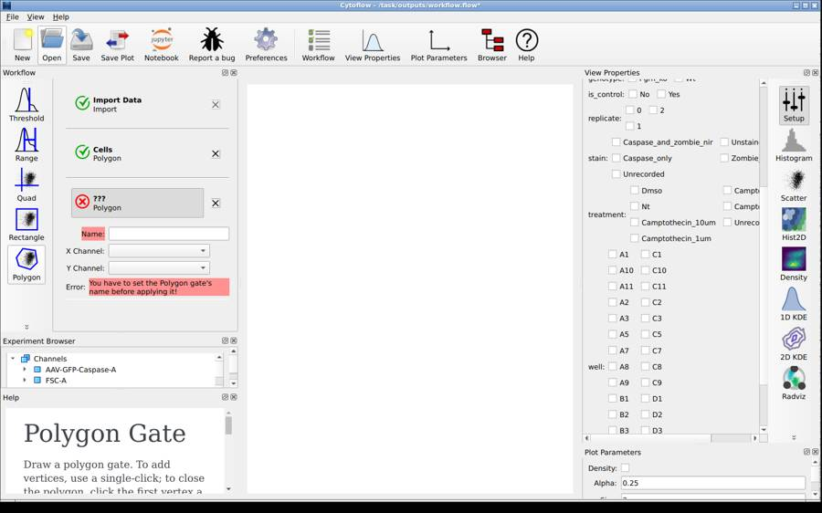
text(await tools.exec_command({cmd:"cu click 276 410\ncu type Single_Cells\ncu click 282 440\ncu screenshot /tmp/screen.png","max_output_tokens":1000}));image((await tools.view_image({path:"/tmp/screen.png"})).image_url);
Script completed Wall time 0.6 seconds Output:
{"chunk_id":"e5a3fc","wall_time_seconds":0.411355186,"exit_code":0,"original_token_count":4,"output":"/tmp/screen.png\n"}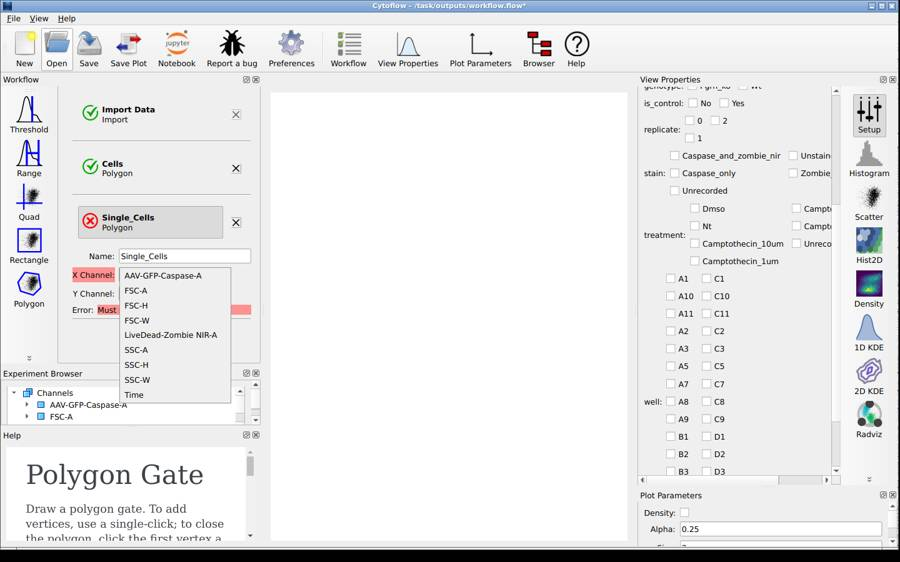
text(await tools.exec_command({cmd:"cu click 216 584\ncu click 283 470\ncu screenshot /tmp/screen.png","max_output_tokens":1000}));image((await tools.view_image({path:"/tmp/screen.png"})).image_url);
Script completed Wall time 0.3 seconds Output:
{"chunk_id":"8b2117","wall_time_seconds":0.107390363,"exit_code":0,"original_token_count":4,"output":"/tmp/screen.png\n"}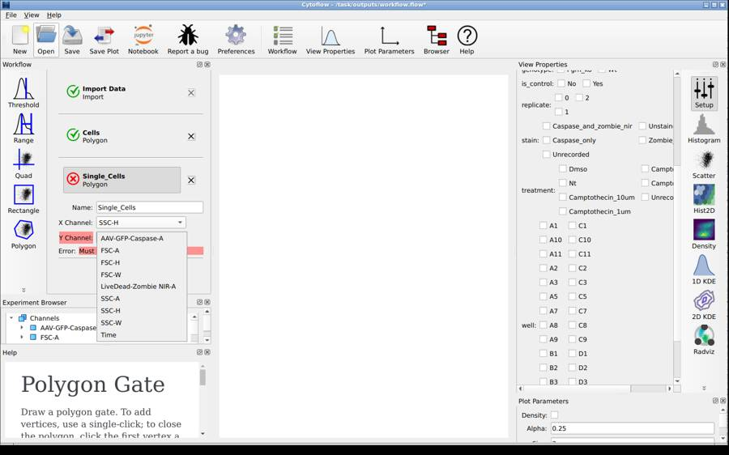
text(await tools.exec_command({cmd:"cu click 217 590\ncu scroll 1248 305 up 16\nsleep 3\ncu screenshot /tmp/screen.png","max_output_tokens":1000}));image((await tools.view_image({path:"/tmp/screen.png"})).image_url);
Script completed Wall time 4.8 seconds Output:
{"chunk_id":"62ebe9","wall_time_seconds":4.617515721,"exit_code":0,"original_token_count":4,"output":"/tmp/screen.png\n"}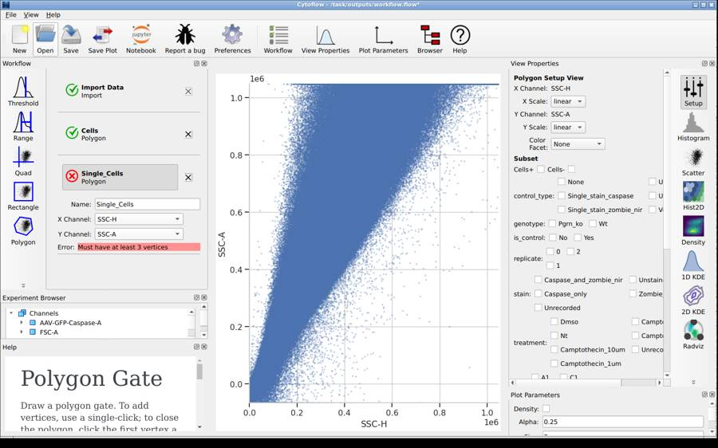
text(await tools.exec_command({cmd:"cu click 1084 339\ncu click 1094 820\nsleep 4\ncu screenshot /tmp/screen.png","max_output_tokens":1000}));image((await tools.view_image({path:"/tmp/screen.png"})).image_url);
Script completed Wall time 4.3 seconds Output:
{"chunk_id":"491585","wall_time_seconds":4.110464632,"exit_code":0,"original_token_count":4,"output":"/tmp/screen.png\n"}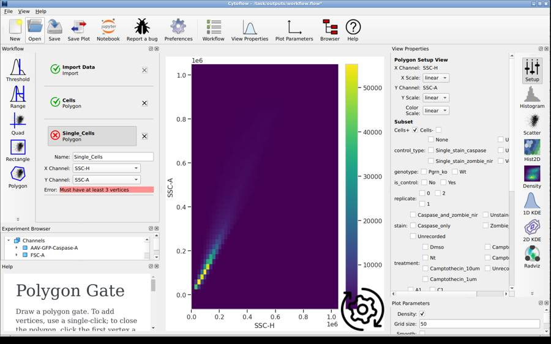
text(await tools.exec_command({cmd:"cu click 1159 289\ncu key Down\ncu key Return\nsleep 3\ncu screenshot /tmp/screen.png","max_output_tokens":1000}));image((await tools.view_image({path:"/tmp/screen.png"})).image_url);
Script completed Wall time 3.2 seconds Output:
{"chunk_id":"5129d4","wall_time_seconds":3.034615414,"exit_code":0,"original_token_count":4,"output":"/tmp/screen.png\n"}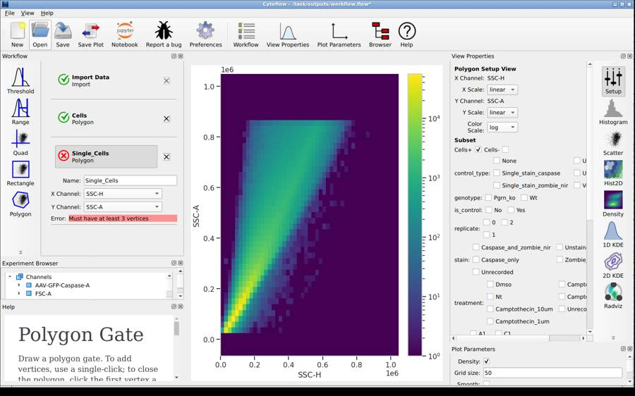
text(await tools.exec_command({cmd:"cu click 504 763\ncu click 506 737\ncu click 642 266\ncu click 769 266\ncu click 504 763\nsleep 3\ncu key ctrl+s\ncu click 46 245\nsleep 1\ncu screenshot /tmp/screen.png","max_output_tokens":1000}));image((await tools.view_image({path:"/tmp/screen.png"})).image_url);
Script completed Wall time 4.7 seconds Output:
{"chunk_id":"312936","wall_time_seconds":4.554131512,"exit_code":0,"original_token_count":4,"output":"/tmp/screen.png\n"}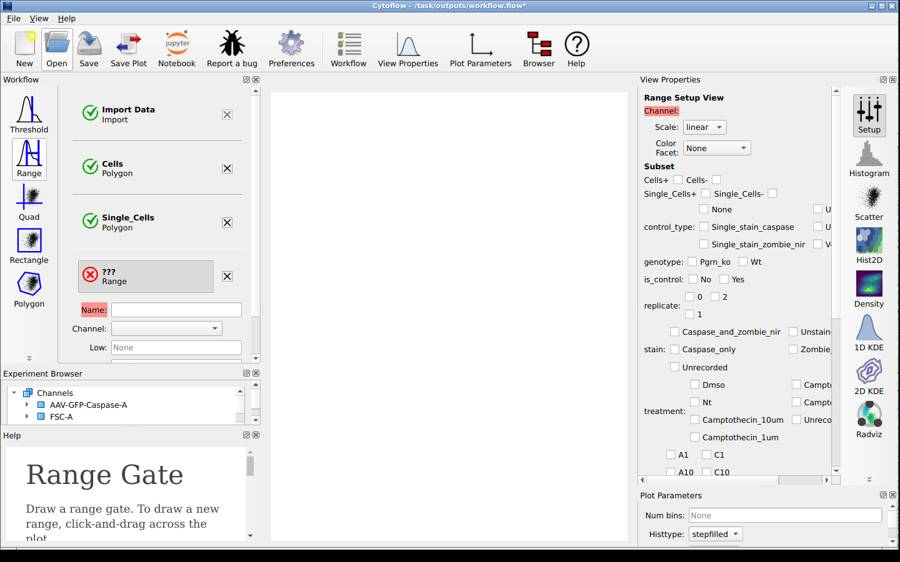
text(await tools.exec_command({cmd:"cu click 263 496\ncu type Live\ncu click 292 526\ncu screenshot /tmp/screen.png","max_output_tokens":1000}));image((await tools.view_image({path:"/tmp/screen.png"})).image_url);
Script completed Wall time 0.4 seconds Output:
{"chunk_id":"7c30e8","wall_time_seconds":0.212371063,"exit_code":0,"original_token_count":4,"output":"/tmp/screen.png\n"}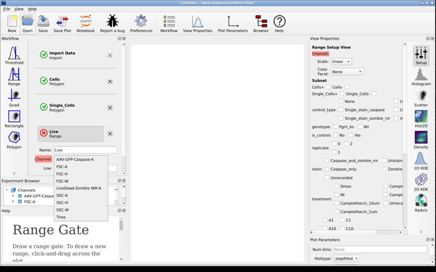
text(await tools.exec_command({cmd:"cu click 279 621\ncu click 1084 287\ncu click 1129 309\ncu click 1148 203\ncu key End\ncu key Return\ncu click 1186 237\ncu screenshot /tmp/screen.png","max_output_tokens":1000}));image((await tools.view_image({path:"/tmp/screen.png"})).image_url);
Script completed Wall time 0.6 seconds Output:
{"chunk_id":"f50e20","wall_time_seconds":0.45632232,"exit_code":0,"original_token_count":4,"output":"/tmp/screen.png\n"}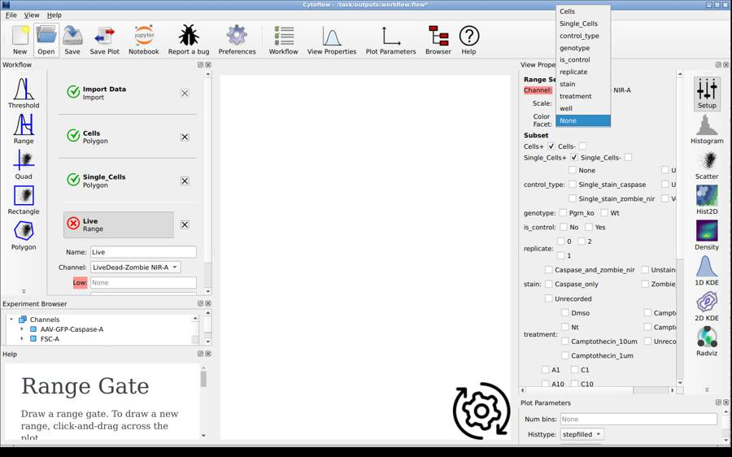
text(await tools.exec_command({cmd:"cu click 1117 213\ncu click 1079 559\ncu click 1268 530\nsleep 4\ncu screenshot /tmp/screen.png","max_output_tokens":1000}));image((await tools.view_image({path:"/tmp/screen.png"})).image_url);
Script completed Wall time 4.4 seconds Output:
{"chunk_id":"d32507","wall_time_seconds":4.213189011,"exit_code":0,"original_token_count":4,"output":"/tmp/screen.png\n"}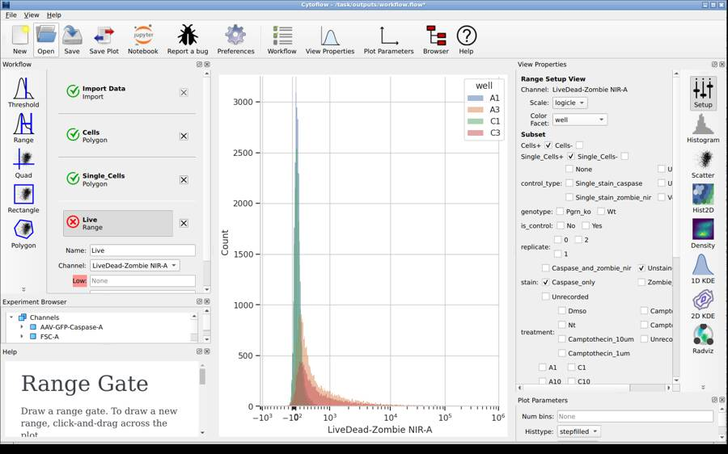
text(await tools.exec_command({cmd:"cu screenshot /task/outputs/live_negative_controls.png\ncu click 1079 559\ncu click 1268 531\ncu click 1079 531\ncu click 1190 237\ncu screenshot /tmp/screen.png","max_output_tokens":1000}));image((await tools.view_image({path:"/tmp/screen.png"})).image_url);
Script completed Wall time 0.5 seconds Output:
{"chunk_id":"035e1a","wall_time_seconds":0.36529725,"exit_code":0,"original_token_count":15,"output":"/task/outputs/live_negative_controls.png\n/tmp/screen.png\n"}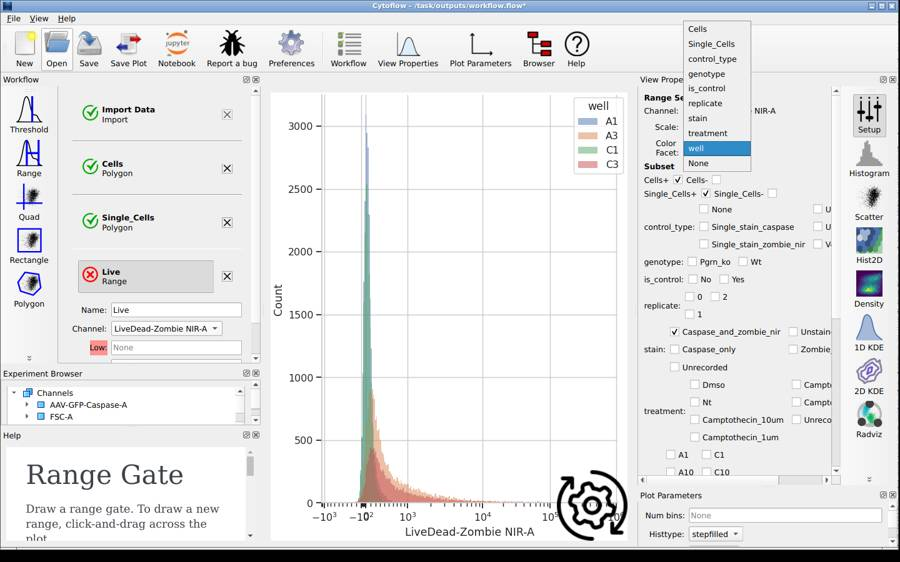
text(await tools.exec_command({cmd:"cu click 1134 214\nsleep 3\ncu screenshot /tmp/screen.png","max_output_tokens":1000}));image((await tools.view_image({path:"/tmp/screen.png"})).image_url);
Script completed Wall time 3.2 seconds Output:
{"chunk_id":"c30796","wall_time_seconds":3.005485822,"exit_code":0,"original_token_count":4,"output":"/tmp/screen.png\n"}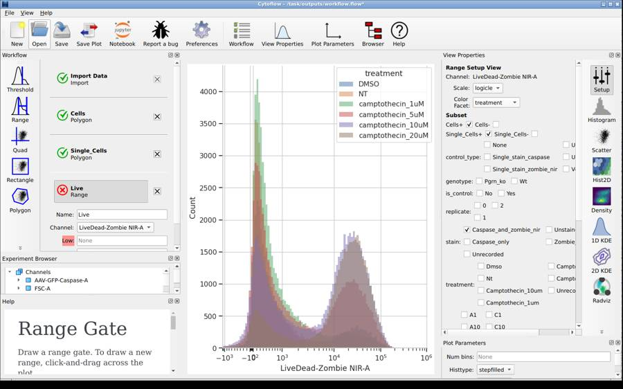
text(await tools.exec_command({cmd:"cu click 262 556\ncu key ctrl+a\ncu type -1048576\ncu key Tab\ncu scroll 330 513 down 4\ncu screenshot /tmp/screen.png","max_output_tokens":1000}));image((await tools.view_image({path:"/tmp/screen.png"})).image_url);
Script completed Wall time 0.8 seconds Output:
{"chunk_id":"83a150","wall_time_seconds":0.659774927,"exit_code":0,"original_token_count":4,"output":"/tmp/screen.png\n"}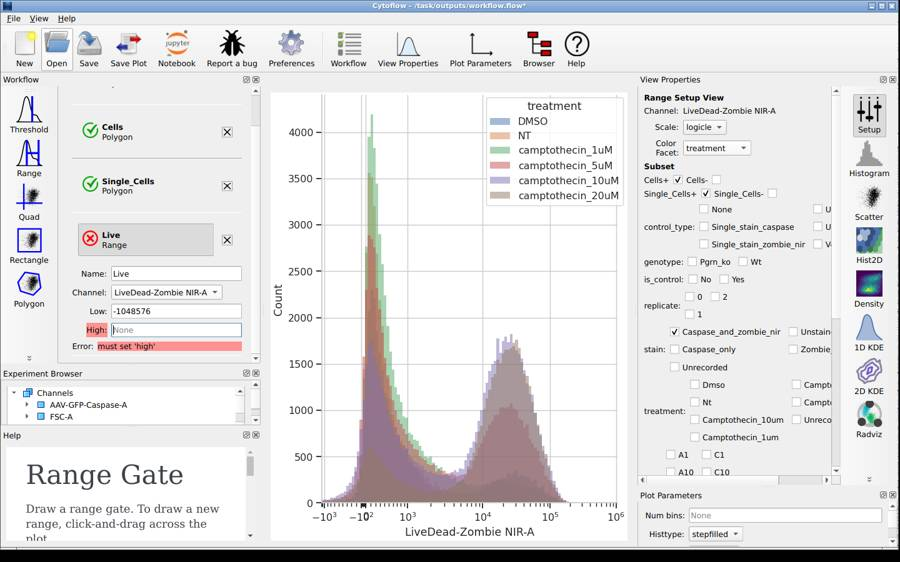
text(await tools.exec_command({cmd:"cu type 5000\ncu key Tab\nsleep 3\ncu key ctrl+s\ncu screenshot /task/outputs/live_boundary.png\ncu click 45 175\nsleep 1\ncu screenshot /tmp/screen.png","max_output_tokens":1000}));image((await tools.view_image({path:"/tmp/screen.png"})).image_url);
Script completed Wall time 4.4 seconds Output:
{"chunk_id":"4761b5","wall_time_seconds":4.196767648,"exit_code":0,"original_token_count":12,"output":"/task/outputs/live_boundary.png\n/tmp/screen.png\n"}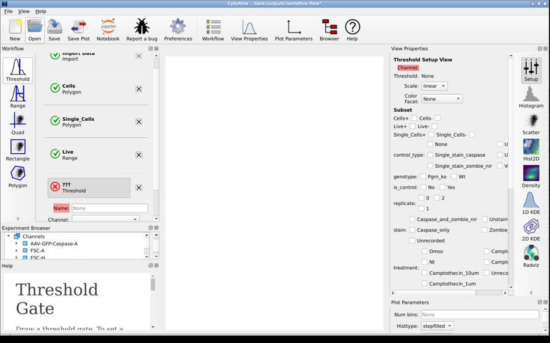
text(await tools.exec_command({cmd:"cu click 286 545\ncu key ctrl+a\ncu type Caspase_pos\ncu click 292 575\ncu key Home\ncu key Return\ncu scroll 345 493 down 4\ncu click 1084 309\ncu click 1080 331\ncu click 1129 353\ncu click 1160 226\ncu key End\ncu key Return\ncu click 1268 575\ncu click 1268 603\ncu click 1197 259\ncu screenshot /tmp/screen.png","max_output_tokens":1000}));image((await tools.view_image({path:"/tmp/screen.png"})).image_url);
Script completed Wall time 1.8 seconds Output:
{"chunk_id":"d5e8c9","wall_time_seconds":1.614581542,"exit_code":0,"original_token_count":4,"output":"/tmp/screen.png\n"}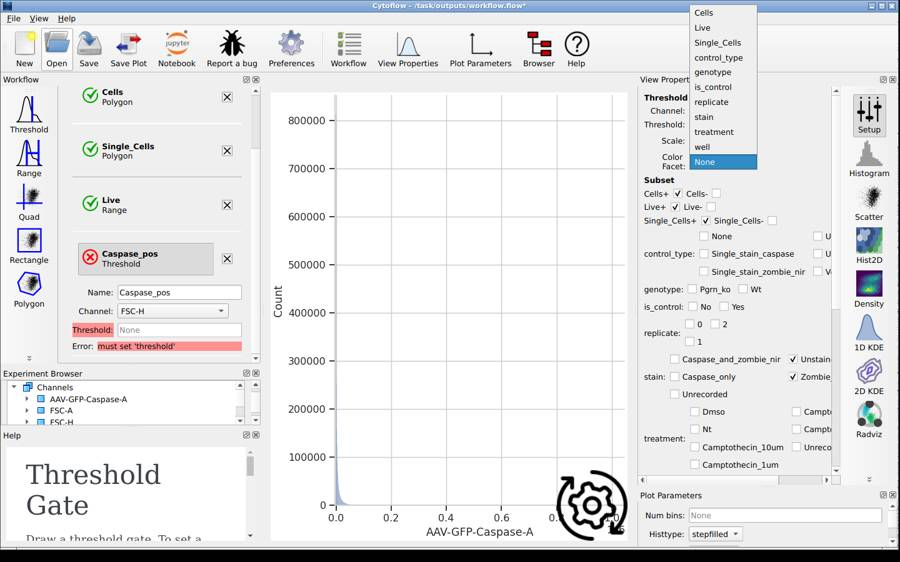
text(await tools.exec_command({cmd:"cu click 1126 236\ncu click 352 498\ncu screenshot /tmp/screen.png","max_output_tokens":1000}));image((await tools.view_image({path:"/tmp/screen.png"})).image_url);
Script completed Wall time 0.3 seconds Output:
{"chunk_id":"4a6e29","wall_time_seconds":0.106028102,"exit_code":0,"original_token_count":4,"output":"/tmp/screen.png\n"}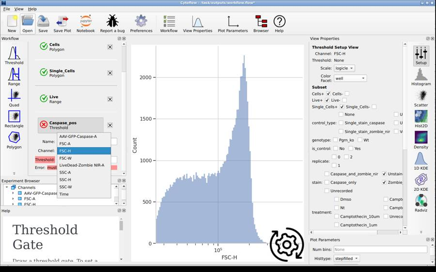
text(await tools.exec_command({cmd:"cu click 280 451\nsleep 3\ncu screenshot /tmp/screen.png","max_output_tokens":1000}));image((await tools.view_image({path:"/tmp/screen.png"})).image_url);
Script completed Wall time 3.2 seconds Output:
{"chunk_id":"dd929b","wall_time_seconds":3.005509792,"exit_code":0,"original_token_count":4,"output":"/tmp/screen.png\n"}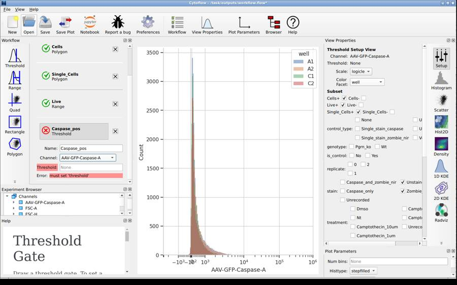
text(await tools.exec_command({cmd:"cu screenshot /task/outputs/caspase_negative_controls.png\ncu click 1269 575\ncu click 1269 603\ncu click 1079 575\ncu click 1201 260\ncu screenshot /tmp/screen.png","max_output_tokens":1000}));image((await tools.view_image({path:"/tmp/screen.png"})).image_url);
Script completed Wall time 0.5 seconds Output:
{"chunk_id":"a655c5","wall_time_seconds":0.365993311,"exit_code":0,"original_token_count":15,"output":"/task/outputs/caspase_negative_controls.png\n/tmp/screen.png\n"}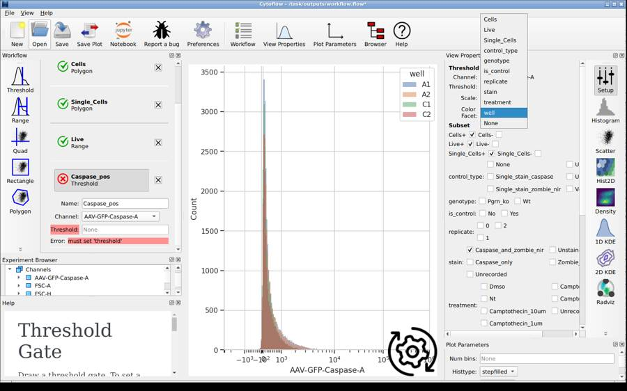
text(await tools.exec_command({cmd:"cu click 1143 234\nsleep 3\ncu screenshot /tmp/screen.png","max_output_tokens":1000}));image((await tools.view_image({path:"/tmp/screen.png"})).image_url);
Script completed Wall time 3.2 seconds Output:
{"chunk_id":"0359a0","wall_time_seconds":3.006322602,"exit_code":0,"original_token_count":4,"output":"/tmp/screen.png\n"}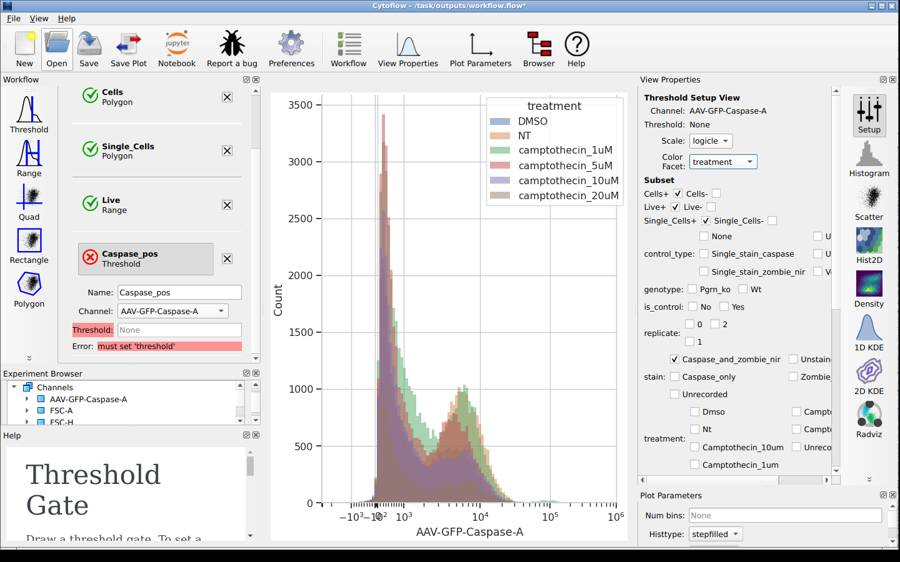
text(await tools.exec_command({cmd:"cu click 276 528\ncu type 3000\ncu key Tab\nsleep 3\ncu key ctrl+s\ncu screenshot /task/outputs/caspase_boundary.png\ncu scroll 45 513 down 5\ncu screenshot /tmp/screen.png","max_output_tokens":1000}));image((await tools.view_image({path:"/tmp/screen.png"})).image_url);
Script completed Wall time 3.9 seconds Output:
{"chunk_id":"33f256","wall_time_seconds":3.7019552879999997,"exit_code":0,"original_token_count":13,"output":"/task/outputs/caspase_boundary.png\n/tmp/screen.png\n"}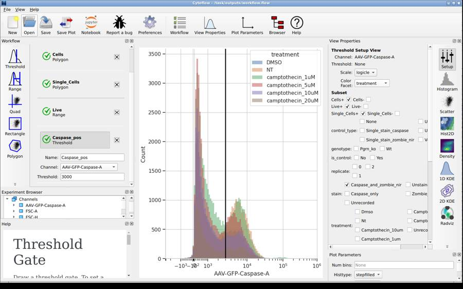
text(await tools.exec_command({cmd:"cu click 47 574\ncu click 47 574\ncu screenshot /tmp/screen.png","max_output_tokens":1000}));image((await tools.view_image({path:"/tmp/screen.png"})).image_url);
Script completed Wall time 0.3 seconds Output:
{"chunk_id":"3741d9","wall_time_seconds":0.108411453,"exit_code":0,"original_token_count":4,"output":"/tmp/screen.png\n"}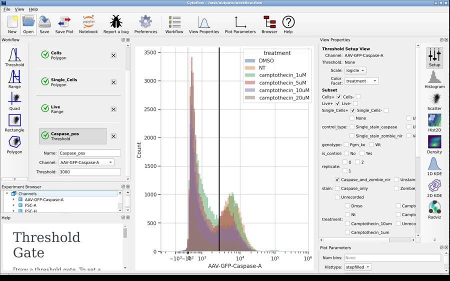
text(await tools.exec_command({cmd:"cu click 409 696\ncu click 409 598\ncu screenshot /tmp/screen.png","max_output_tokens":1000}));image((await tools.view_image({path:"/tmp/screen.png"})).image_url);
Script completed Wall time 0.3 seconds Output:
{"chunk_id":"e741c7","wall_time_seconds":0.108613144,"exit_code":0,"original_token_count":4,"output":"/tmp/screen.png\n"}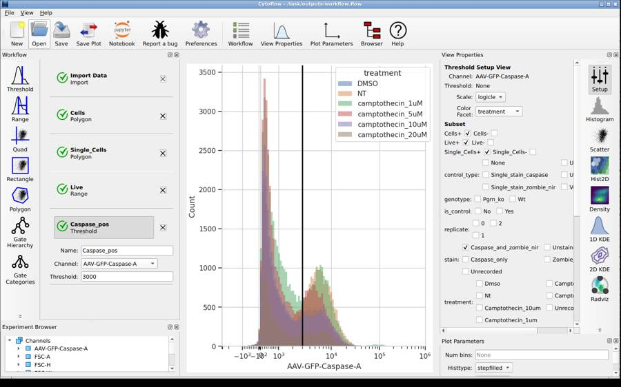
text(await tools.exec_command({cmd:"cu click 409 760\ncu screenshot /tmp/screen.png","max_output_tokens":1000}));image((await tools.view_image({path:"/tmp/screen.png"})).image_url);
Script completed Wall time 0.2 seconds Output:
{"chunk_id":"9869dc","wall_time_seconds":0.003150173,"exit_code":0,"original_token_count":4,"output":"/tmp/screen.png\n"}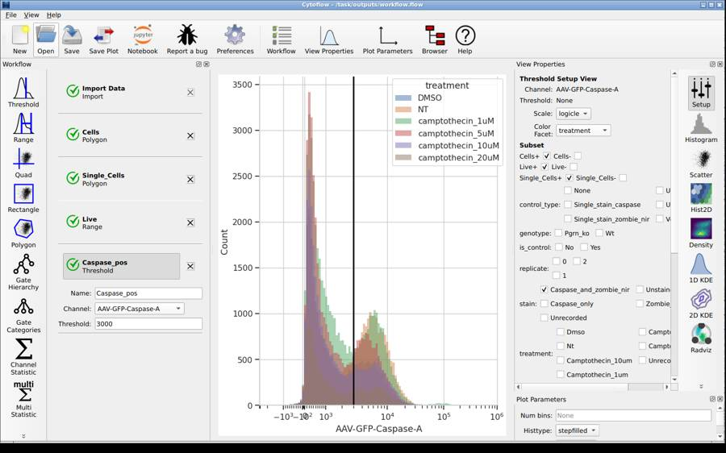
text(await tools.exec_command({cmd:"cu click 47 694\nsleep 1\ncu screenshot /tmp/screen.png","max_output_tokens":1000}));image((await tools.view_image({path:"/tmp/screen.png"})).image_url);
Script completed Wall time 1.2 seconds Output:
{"chunk_id":"084d05","wall_time_seconds":1.003658861,"exit_code":0,"original_token_count":4,"output":"/tmp/screen.png\n"}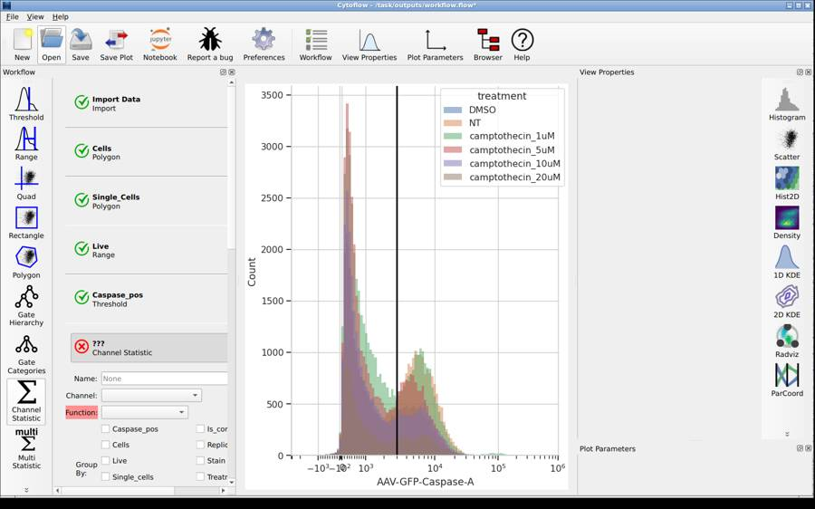
text(await tools.exec_command({cmd:"cu click 278 669\ncu key ctrl+a\ncu type N_all\ncu click 343 699\ncu screenshot /tmp/screen.png","max_output_tokens":1000}));image((await tools.view_image({path:"/tmp/screen.png"})).image_url);
Script completed Wall time 0.4 seconds Output:
{"chunk_id":"dab458","wall_time_seconds":0.261154551,"exit_code":0,"original_token_count":4,"output":"/tmp/screen.png\n"}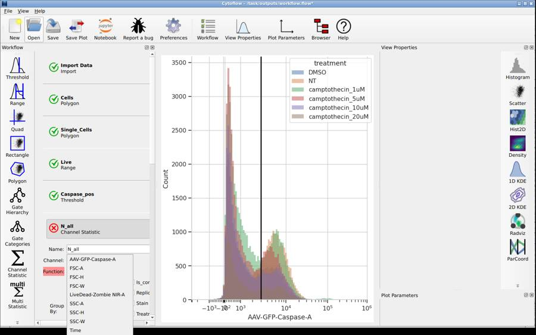
text(await tools.exec_command({cmd:"cu click 204 887\ncu click 319 728\ncu screenshot /tmp/screen.png","max_output_tokens":1000}));image((await tools.view_image({path:"/tmp/screen.png"})).image_url);
Script completed Wall time 0.3 seconds Output:
{"chunk_id":"ad53bc","wall_time_seconds":0.10455425,"exit_code":0,"original_token_count":4,"output":"/tmp/screen.png\n"}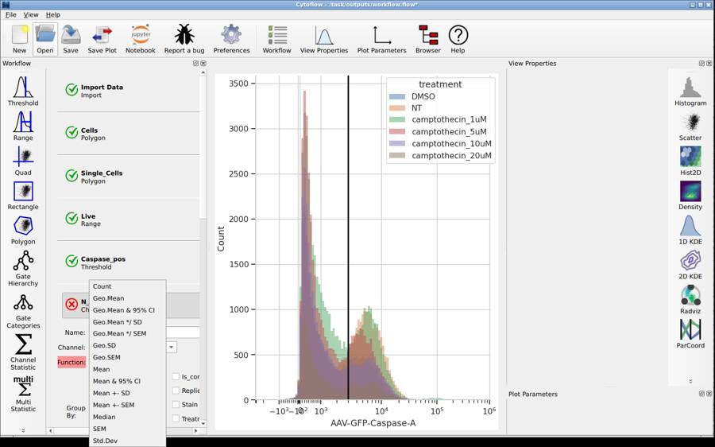
text(await tools.exec_command({cmd:"cu click 208 575\ncu scroll 320 793 down 6\ncu screenshot /tmp/screen.png","max_output_tokens":1000}));image((await tools.view_image({path:"/tmp/screen.png"})).image_url);
Script completed Wall time 0.8 seconds Output:
{"chunk_id":"b2b94a","wall_time_seconds":0.605523396,"exit_code":0,"original_token_count":4,"output":"/tmp/screen.png\n"}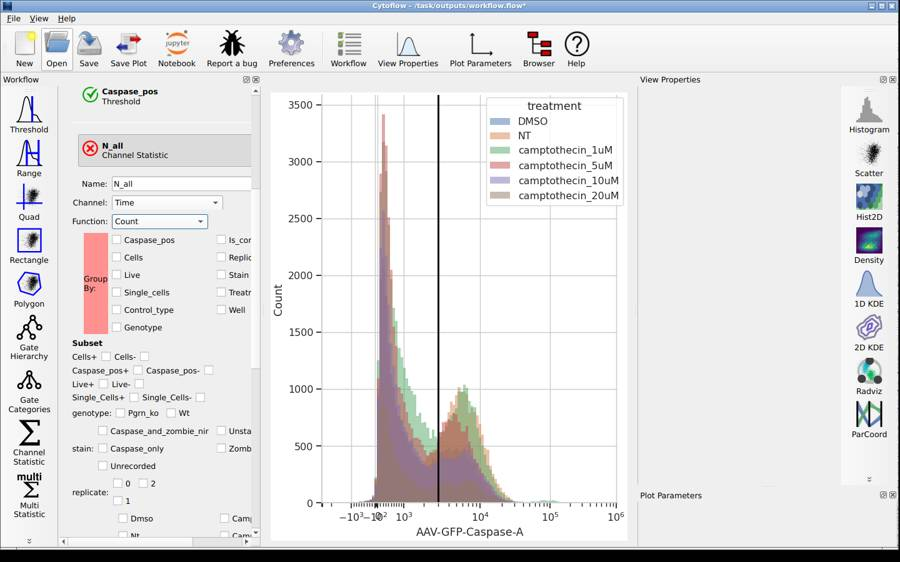
text(await tools.exec_command({cmd:"cu click 354 494\nsleep 3\ncu screenshot /tmp/screen.png","max_output_tokens":1000}));image((await tools.view_image({path:"/tmp/screen.png"})).image_url);
Script completed Wall time 3.2 seconds Output:
{"chunk_id":"1cf810","wall_time_seconds":3.002820199,"exit_code":0,"original_token_count":4,"output":"/tmp/screen.png\n"}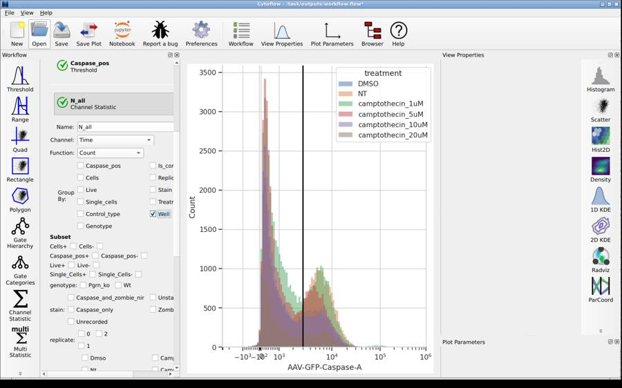
text(await tools.exec_command({cmd:"cu move 1391 766\nsleep 2\ncu screenshot /tmp/screen.png","max_output_tokens":1000}));image((await tools.view_image({path:"/tmp/screen.png"})).image_url);
Script completed Wall time 2.1 seconds Output:
{"chunk_id":"8d4d59","wall_time_seconds":1.899456901,"exit_code":0,"original_token_count":4,"output":"/tmp/screen.png\n"}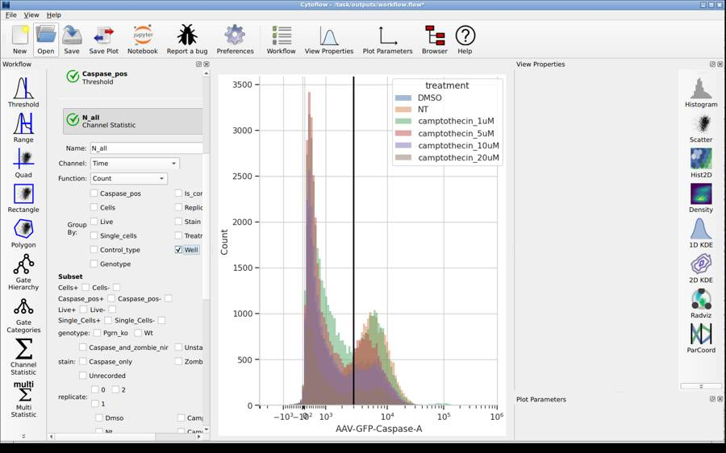
text(await tools.exec_command({cmd:"cu --help","max_output_tokens":2000}));
Script completed
Wall time 0.0 seconds
Output:
{"chunk_id":"07bb20","wall_time_seconds":0.00000401,"exit_code":1,"original_token_count":116,"output":"# Computer-use helper: the agent's only way to act on the screen.\n# cu screenshot [path] -> PNG of the screen (default /tmp/screen.png); prints path\n# cu click X Y [left|right|double]\n# cu move X Y | cu drag X1 Y1 X2 Y2 | cu scroll X Y up|down [N]\n# cu type \"text\" (keystrokes) | cu paste \"text\" (clipboard) | cu key KEYS (e.g. ctrl+s, Return)\n# cu cursor -> current mouse position\nexport DISPLAY=${DISPLAY:-:1}\ncmd=$1; shift\n"}text(await tools.exec_command({cmd:"cu click 1390 767\nsleep 1\ncu screenshot /tmp/screen.png","max_output_tokens":1000}));image((await tools.view_image({path:"/tmp/screen.png"})).image_url);
Script completed Wall time 1.2 seconds Output:
{"chunk_id":"31c87c","wall_time_seconds":1.005106593,"exit_code":0,"original_token_count":4,"output":"/tmp/screen.png\n"}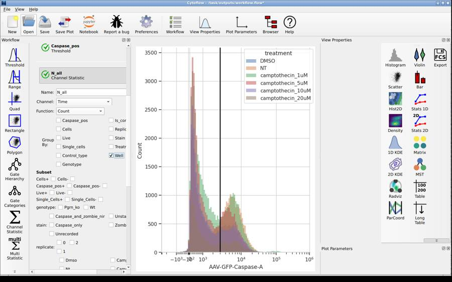
text(await tools.exec_command({cmd:"cu click 1338 595\nsleep 1\ncu screenshot /tmp/screen.png","max_output_tokens":1000}));image((await tools.view_image({path:"/tmp/screen.png"})).image_url);
Script completed Wall time 1.2 seconds Output:
{"chunk_id":"0e3b12","wall_time_seconds":1.002226571,"exit_code":0,"original_token_count":4,"output":"/tmp/screen.png\n"}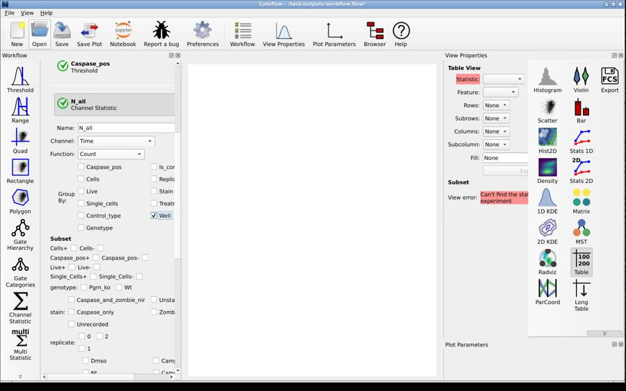
text(await tools.exec_command({cmd:"cu click 1195 182\ncu screenshot /tmp/screen.png","max_output_tokens":1000}));image((await tools.view_image({path:"/tmp/screen.png"})).image_url);
Script completed Wall time 0.2 seconds Output:
{"chunk_id":"d75521","wall_time_seconds":0.00000486,"exit_code":0,"original_token_count":4,"output":"/tmp/screen.png\n"}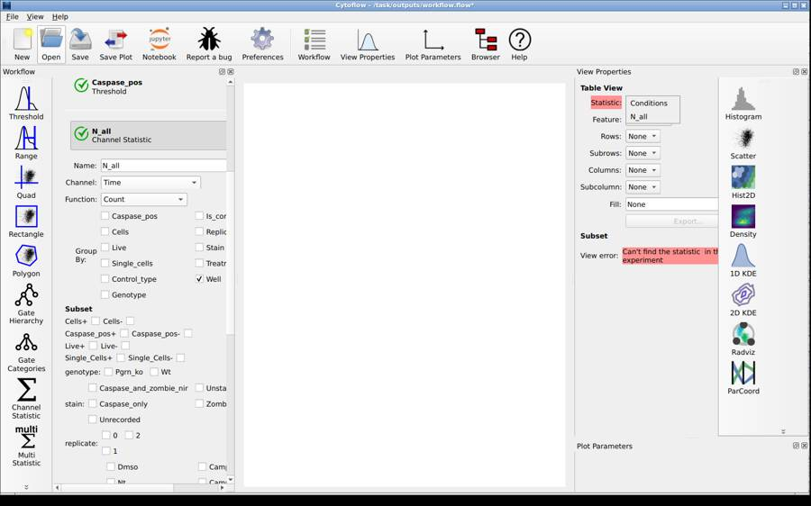
text(await tools.exec_command({cmd:"cu click 1136 208\ncu click 1180 211\ncu screenshot /tmp/screen.png","max_output_tokens":1000}));image((await tools.view_image({path:"/tmp/screen.png"})).image_url);
Script completed Wall time 0.3 seconds Output:
{"chunk_id":"5985fc","wall_time_seconds":0.105479462,"exit_code":0,"original_token_count":4,"output":"/tmp/screen.png\n"}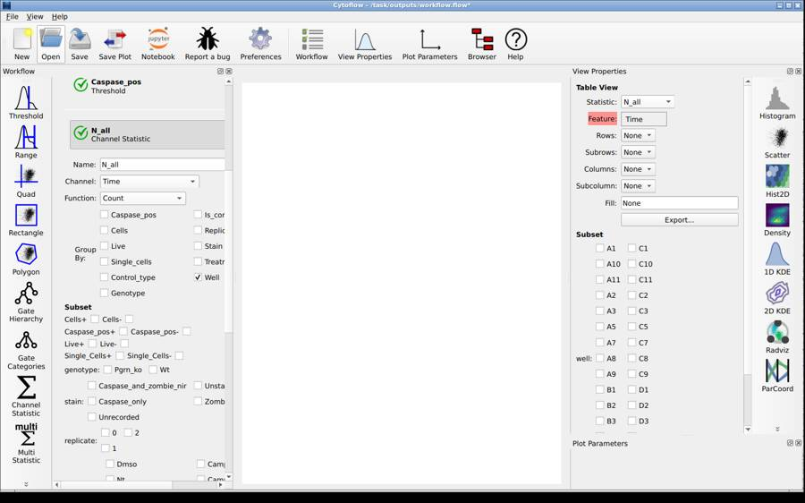
text(await tools.exec_command({cmd:"cu click 1134 213\ncu click 1162 242\ncu screenshot /tmp/screen.png","max_output_tokens":1000}));image((await tools.view_image({path:"/tmp/screen.png"})).image_url);
Script completed Wall time 0.3 seconds Output:
{"chunk_id":"fa20c4","wall_time_seconds":0.106668912,"exit_code":0,"original_token_count":4,"output":"/tmp/screen.png\n"}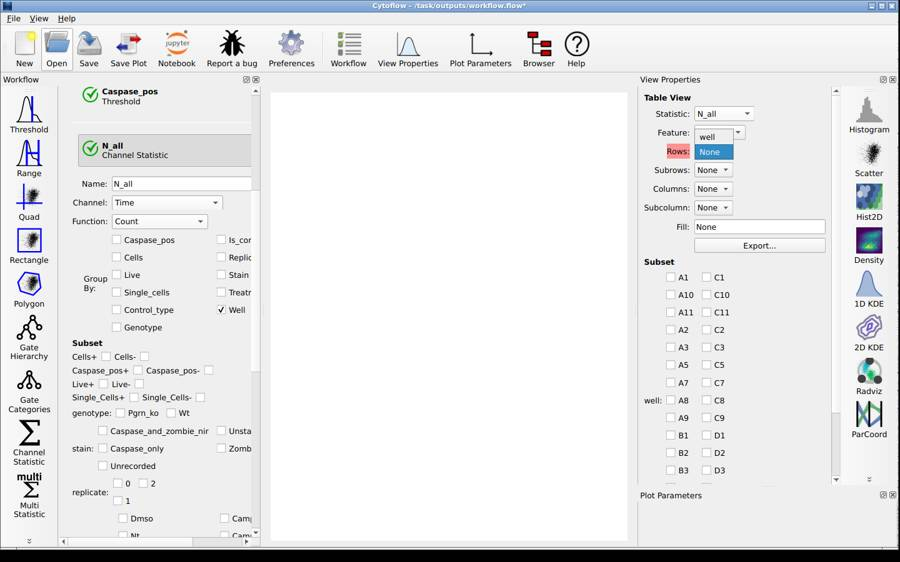
text(await tools.exec_command({cmd:"cu click 1134 218\nsleep 2\ncu click 1203 392\nsleep 1\ncu screenshot /tmp/screen.png","max_output_tokens":1000}));image((await tools.view_image({path:"/tmp/screen.png"})).image_url);
Script completed Wall time 3.3 seconds Output:
{"chunk_id":"36e4fc","wall_time_seconds":3.113982945,"exit_code":0,"original_token_count":4,"output":"/tmp/screen.png\n"}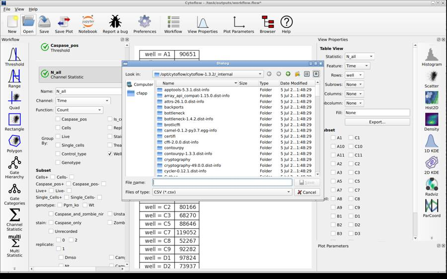
text(await tools.exec_command({cmd:"cu paste /task/outputs/export_all.csv\ncu click 989 588\nsleep 1\ncu screenshot /tmp/screen.png","max_output_tokens":1000}));image((await tools.view_image({path:"/tmp/screen.png"})).image_url);
Script completed Wall time 2.5 seconds Output:
{"chunk_id":"61596a","wall_time_seconds":2.338957539,"exit_code":0,"original_token_count":4,"output":"/tmp/screen.png\n"}text(await tools.exec_command({cmd:"cu click 169 571\nsleep 2\ncu click 1206 393\nsleep 0.5\ncu paste /task/outputs/export_Cells.csv\ncu key Return\nsleep 1\ncu screenshot /tmp/screen.png","max_output_tokens":1000}));image((await tools.view_image({path:"/tmp/screen.png"})).image_url);
text(await tools.exec_command({cmd:"cat /task/outputs/export_all.csv","max_output_tokens":2000}));
Script completed Wall time 5.2 seconds Output:
{"chunk_id":"8e1ee5","wall_time_seconds":4.958469174,"exit_code":0,"original_token_count":4,"output":"/tmp/screen.png\n"}{"chunk_id":"6f02a9","wall_time_seconds":0.00000293,"exit_code":0,"original_token_count":136,"output":"well = A1,90651.0\nwell = A10,64936.0\nwell = A11,68296.0\nwell = A2,81008.0\nwell = A3,95933.0\nwell = A5,73753.0\nwell = A7,64975.0\nwell = A8,60216.0\nwell = A9,80278.0\nwell = B1,58310.0\nwell = B2,51930.0\nwell = B3,13995.0\nwell = B4,58782.0\nwell = B5,33754.0\nwell = B6,8004.0\nwell = C1,95817.0\nwell = C10,88797.0\nwell = C11,63651.0\nwell = C2,80166.0\nwell = C3,68270.0\nwell = C5,88646.0\nwell = C7,119052.0\nwell = C8,52267.0\nwell = C9,92282.0\nwell = D1,97824.0\nwell = D2,73937.0\nwell = D3,77334.0\nwell = D4,46763.0\nwell = D5,18412.0\nwell = D6,46753.0\n"}text(await tools.exec_command({cmd:"cu click 214 637\nsleep 2\ncu click 1206 393\nsleep 0.5\ncu paste /task/outputs/export_Single_Cells.csv\ncu key Return\nsleep 1\ncu screenshot /tmp/screen.png","max_output_tokens":1000}));image((await tools.view_image({path:"/tmp/screen.png"})).image_url);
Script completed Wall time 5.1 seconds Output:
{"chunk_id":"42f5cc","wall_time_seconds":4.957747794,"exit_code":0,"original_token_count":4,"output":"/tmp/screen.png\n"}text(await tools.exec_command({cmd:"cu click 165 614\nsleep 2\ncu click 1206 393\nsleep 0.5\ncu paste /task/outputs/export_Live.csv\ncu key Return\nsleep 1\ncu screenshot /tmp/screen.png","max_output_tokens":1000}));image((await tools.view_image({path:"/tmp/screen.png"})).image_url);
Script completed Wall time 5.1 seconds Output:
{"chunk_id":"2cfbe3","wall_time_seconds":4.9576041029999995,"exit_code":0,"original_token_count":4,"output":"/tmp/screen.png\n"}text(await tools.exec_command({cmd:"cu click 220 592\nsleep 2\ncu click 1206 393\nsleep 0.5\ncu paste /task/outputs/export_Caspase_pos.csv\ncu key Return\nsleep 1\ncu key ctrl+s\ncu screenshot /tmp/screen.png","max_output_tokens":1000}));image((await tools.view_image({path:"/tmp/screen.png"})).image_url);
text(await tools.exec_command({cmd:"python - <<'PY'\nimport pandas as pd\nfrom pathlib import Path\np=Path('/task/outputs')\nd={}\nfor pop in ['all','Cells','Single_Cells','Live','Caspase_pos']:\n t=pd.read_csv(p/f'export_{pop}.csv',header=None,names=['well',pop]);t.well=t.well.str.replace('well = ','',regex=False);d[pop]=t.set_index('well')[pop]\na=pd.DataFrame(d).astype(int)\na.to_csv(p/'qc_population_counts.csv')\nprint(a.to_string())\nPY","max_output_tokens":3000}));
Script completed Wall time 5.2 seconds Output:
{"chunk_id":"2e7893","wall_time_seconds":4.983040393,"exit_code":0,"original_token_count":4,"output":"/tmp/screen.png\n"}{"chunk_id":"506b3a","wall_time_seconds":0.00000313,"exit_code":127,"original_token_count":12,"output":"/bin/bash: line 1: python: command not found\n"}text(await tools.exec_command({cmd:"python3 - <<'PY'\nimport pandas as pd\nfrom pathlib import Path\np=Path('/task/outputs');d={}\nfor pop in ['all','Cells','Single_Cells','Live','Caspase_pos']:\n t=pd.read_csv(p/f'export_{pop}.csv',header=None,names=['well',pop]);t.well=t.well.str.replace('well = ','',regex=False);d[pop]=t.set_index('well')[pop]\na=pd.DataFrame(d).astype(int);a.to_csv(p/'qc_population_counts.csv');print(a.to_string())\nlayout=pd.read_csv('/task/inputs/plate_layout.csv');rows=[]\nfor r in layout.itertuples():\n for pop,parent in zip(['Cells','Single_Cells','Live','Caspase_pos'],['all','Cells','Single_Cells','Live']):\n n=int(a.loc[r.well,pop]);den=int(a.loc[r.well,parent]);rows.append([r.file,r.well,pop,n,'all_events' if parent=='all' else parent,n/den*100 if den else 0.0])\npd.DataFrame(rows,columns=['file','well','population','count','parent_population','pct_of_parent']).to_csv(p/'counts.csv',index=False)\nPY","max_output_tokens":3000}));
text(await tools.exec_command({cmd:"cu click 47 866\nsleep 1\ncu screenshot /tmp/screen.png","max_output_tokens":1000}));image((await tools.view_image({path:"/tmp/screen.png"})).image_url);
text(await tools.clock__curr_time({}));
Script completed Wall time 1.5 seconds Output:
{"chunk_id":"354918","wall_time_seconds":0.180224289,"exit_code":0,"original_token_count":432,"output":" all Cells Single_Cells Live Caspase_pos\nwell \nA1 90651 48754 23700 23700 339\nA10 64936 37743 15113 9036 2504\nA11 68296 38467 15595 10758 3166\nA2 81008 45875 21296 21296 241\nA3 95933 54477 22308 21231 5491\nA5 73753 40249 16855 11808 3402\nA7 64975 37841 15333 14313 5526\nA8 60216 32783 11875 10479 3794\nA9 80278 48504 17125 15132 4662\nB1 58310 32359 13391 6508 1912\nB2 51930 29725 13180 5761 1181\nB3 13995 9580 3577 587 184\nB4 58782 34924 14081 4364 1266\nB5 33754 17731 7587 184 58\nB6 8004 5197 2219 114 42\nC1 95817 45038 19391 19391 55\nC10 88797 45301 19370 12208 3408\nC11 63651 33500 13391 7432 2186\nC2 80166 39164 16618 16618 62\nC3 68270 31728 12692 11869 2993\nC5 88646 41334 16800 14652 4331\nC7 119052 59185 21876 20930 11043\nC8 52267 24224 9140 7779 2590\nC9 92282 44054 16188 14296 4814\nD1 97824 53926 25029 9303 2751\nD2 73937 42383 17124 7745 2256\nD3 77334 41355 18525 5723 1782\nD4 46763 26191 11886 847 225\nD5 18412 10360 3689 87 19\nD6 46753 25915 12313 462 101\n"}{"chunk_id":"0744c0","wall_time_seconds":1.008082485,"exit_code":0,"original_token_count":4,"output":"/tmp/screen.png\n"}{"current_time":"2026-11-05 08:23:55 UTC"}text(await tools.exec_command({cmd:"cu click 129 487\nsleep 1\ncu screenshot /tmp/screen.png","max_output_tokens":1000}));image((await tools.view_image({path:"/tmp/screen.png"})).image_url);
Script completed Wall time 1.2 seconds Output:
{"chunk_id":"4024f3","wall_time_seconds":1.002763901,"exit_code":0,"original_token_count":4,"output":"/tmp/screen.png\n"}text(await tools.exec_command({cmd:"cu click 47 866\ncu scroll 368 780 down 5\nsleep 0.5\ncu screenshot /tmp/screen.png","max_output_tokens":1000}));image((await tools.view_image({path:"/tmp/screen.png"})).image_url);
Script completed Wall time 1.2 seconds Output:
{"chunk_id":"4492ec","wall_time_seconds":1.008458896,"exit_code":0,"original_token_count":4,"output":"/tmp/screen.png\n"}text(await tools.exec_command({cmd:"cu click 279 731\ncu key ctrl+a\ncu type Time_bin\ncu click 350 761\ncu screenshot /tmp/screen.png","max_output_tokens":1000}));image((await tools.view_image({path:"/tmp/screen.png"})).image_url);
Script completed Wall time 0.5 seconds Output:
{"chunk_id":"63531f","wall_time_seconds":0.3382899,"exit_code":0,"original_token_count":4,"output":"/tmp/screen.png\n"}text(await tools.exec_command({cmd:"cu click 212 887\ncu click 268 822\ncu type 10\ncu key Tab\nsleep 3\ncu screenshot /tmp/screen.png","max_output_tokens":1000}));image((await tools.view_image({path:"/tmp/screen.png"})).image_url);
Script completed Wall time 3.3 seconds Output:
{"chunk_id":"65df95","wall_time_seconds":3.177855214,"exit_code":0,"original_token_count":4,"output":"/tmp/screen.png\n"}text(await tools.exec_command({cmd:"cu click 267 822\ncu key ctrl+a\ncu type 1000\ncu key Tab\nsleep 3\ncu screenshot /tmp/screen.png","max_output_tokens":1000}));image((await tools.view_image({path:"/tmp/screen.png"})).image_url);
Script completed Wall time 3.3 seconds Output:
{"chunk_id":"981395","wall_time_seconds":3.150107493,"exit_code":0,"original_token_count":4,"output":"/tmp/screen.png\n"}text(await tools.exec_command({cmd:"cu click 45 691\nsleep 0.5\ncu scroll 337 783 down 7\ncu screenshot /tmp/screen.png","max_output_tokens":1000}));image((await tools.view_image({path:"/tmp/screen.png"})).image_url);
Script completed Wall time 1.4 seconds Output:
{"chunk_id":"2a988b","wall_time_seconds":1.207989519,"exit_code":0,"original_token_count":4,"output":"/tmp/screen.png\n"}text(await tools.exec_command({cmd:"cu click 270 402\ncu key ctrl+a\ncu type QC_time_counts\ncu click 344 432\ncu screenshot /tmp/screen.png","max_output_tokens":1000}));image((await tools.view_image({path:"/tmp/screen.png"})).image_url);
Script completed Wall time 0.7 seconds Output:
{"chunk_id":"a48f18","wall_time_seconds":0.488445226,"exit_code":0,"original_token_count":4,"output":"/tmp/screen.png\n"}text(await tools.exec_command({cmd:"cu click 207 623\ncu click 320 462\ncu screenshot /tmp/screen.png","max_output_tokens":1000}));image((await tools.view_image({path:"/tmp/screen.png"})).image_url);
Script completed Wall time 0.3 seconds Output:
{"chunk_id":"874cf3","wall_time_seconds":0.10421187,"exit_code":0,"original_token_count":4,"output":"/tmp/screen.png\n"}text(await tools.exec_command({cmd:"cu click 206 463\ncu click 186 603\ncu click 354 632\ncu click 1391 767\nsleep 1\ncu screenshot /tmp/screen.png","max_output_tokens":1000}));image((await tools.view_image({path:"/tmp/screen.png"})).image_url);
Script completed Wall time 1.5 seconds Output:
{"chunk_id":"05bea3","wall_time_seconds":1.318118273,"exit_code":0,"original_token_count":4,"output":"/tmp/screen.png\n"}text(await tools.exec_command({cmd:"cu click 1338 594\nsleep 0.5\ncu click 1196 182\ncu screenshot /tmp/screen.png","max_output_tokens":1000}));image((await tools.view_image({path:"/tmp/screen.png"})).image_url);
Script completed Wall time 0.8 seconds Output:
{"chunk_id":"b77b51","wall_time_seconds":0.604148935,"exit_code":0,"original_token_count":4,"output":"/tmp/screen.png\n"}text(await tools.exec_command({cmd:"cu click 1165 230\ncu click 1181 212\nsleep 0.2\ncu click 1133 213\ncu click 1160 241\ncu screenshot /tmp/screen.png","max_output_tokens":1000}));image((await tools.view_image({path:"/tmp/screen.png"})).image_url);
Script completed Wall time 0.7 seconds Output:
{"chunk_id":"cab097","wall_time_seconds":0.517332638,"exit_code":0,"original_token_count":4,"output":"/tmp/screen.png\n"}text(await tools.exec_command({cmd:"cu click 1133 219\ncu click 1186 302\ncu screenshot /tmp/screen.png","max_output_tokens":1000}));image((await tools.view_image({path:"/tmp/screen.png"})).image_url);
Script completed Wall time 0.3 seconds Output:
{"chunk_id":"dc335b","wall_time_seconds":0.107218182,"exit_code":0,"original_token_count":4,"output":"/tmp/screen.png\n"}text(await tools.exec_command({cmd:"cu click 1144 256\nsleep 2\ncu click 1206 393\nsleep 0.5\ncu paste /task/outputs/export_time_counts.csv\ncu key Return\nsleep 1\ncu screenshot /tmp/screen.png","max_output_tokens":1000}));image((await tools.view_image({path:"/tmp/screen.png"})).image_url);
text(await tools.exec_command({cmd:"head -c 4000 /task/outputs/export_time_counts.csv","max_output_tokens":2500}));
Script completed Wall time 5.2 seconds Output:
{"chunk_id":"f283de","wall_time_seconds":4.95439882,"exit_code":0,"original_token_count":4,"output":"/tmp/screen.png\n"}{"chunk_id":"a4fb6b","wall_time_seconds":0.000002,"exit_code":0,"original_token_count":1000,"output":"None,Time_bin = 0.0,Time_bin = 1000.0,Time_bin = 2000.0,Time_bin = 3000.0,Time_bin = 4000.0,Time_bin = 5000.0,Time_bin = 6000.0,Time_bin = 7000.0,Time_bin = 8000.0,Time_bin = 9000.0,Time_bin = 10000.0,Time_bin = 11000.0,Time_bin = 12000.0,Time_bin = 13000.0,Time_bin = 14000.0,Time_bin = 15000.0,Time_bin = 16000.0,Time_bin = 17000.0,Time_bin = 18000.0,Time_bin = 19000.0,Time_bin = 20000.0,Time_bin = 21000.0,Time_bin = 22000.0,Time_bin = 23000.0,Time_bin = 24000.0,Time_bin = 25000.0,Time_bin = 26000.0,Time_bin = 27000.0,Time_bin = 28000.0,Time_bin = 29000.0,Time_bin = 30000.0,Time_bin = 31000.0,Time_bin = 32000.0,Time_bin = 33000.0,Time_bin = 34000.0,Time_bin = 35000.0,Time_bin = 36000.0,Time_bin = 37000.0,Time_bin = 38000.0,Time_bin = 39000.0,Time_bin = 40000.0,Time_bin = 41000.0,Time_bin = 42000.0,Time_bin = 43000.0,Time_bin = 44000.0,Time_bin = 45000.0,Time_bin = 46000.0,Time_bin = 47000.0\nwell = A1,1456.0,1709.0,1846.0,1785.0,1795.0,1818.0,2006.0,1868.0,1940.0,1884.0,2042.0,2144.0,2243.0,2185.0,1957.0,1954.0,1868.0,1948.0,2064.0,1960.0,2055.0,1938.0,2038.0,2134.0,2468.0,2363.0,2460.0,2121.0,2090.0,2330.0,2224.0,2065.0,2005.0,2027.0,1783.0,2002.0,1934.0,1813.0,1780.0,1467.0,1340.0,1471.0,1544.0,1530.0,1361.0,1531.0,1660.0,645.0\nwell = A10,1312.0,1415.0,1331.0,1350.0,1372.0,1399.0,1430.0,1388.0,1348.0,1416.0,1453.0,1417.0,1467.0,1460.0,1439.0,1387.0,1527.0,1321.0,1472.0,1443.0,1400.0,1493.0,1581.0,1602.0,1702.0,1844.0,1727.0,1625.0,1755.0,1578.0,1565.0,1426.0,1424.0,1429.0,1373.0,1287.0,1314.0,1178.0,1149.0,1195.0,1091.0,1018.0,939.0,967.0,1012.0,1117.0,841.0,157.0\nwell = A11,1217.0,1369.0,1405.0,1534.0,1499.0,1537.0,1536.0,1533.0,1462.0,1495.0,1523.0,1550.0,1546.0,1493.0,1521.0,1434.0,1616.0,1456.0,1445.0,1429.0,1378.0,1584.0,1639.0,1594.0,1808.0,1299.0,2022.0,1876.0,1744.0,1704.0,1639.0,1620.0,1535.0,1554.0,1641.0,1478.0,1500.0,1372.0,1293.0,1320.0,1212.0,1168.0,1139.0,1103.0,1076.0,1014.0,384.0,None\nwell = A2,1434.0,1595.0,1559.0,1576.0,1628.0,1623.0,1649.0,1742.0,1736.0,1816.0,1787.0,1784.0,1706.0,1726.0,1613.0,1734.0,1702.0,1734.0,1802.0,1625.0,1692.0,1738.0,1873.0,2031.0,1968.0,2572.0,2299.0,2156.0,2204.0,2243.0,1755.0,1962.0,2017.0,1968.0,1773.0,1599.0,1781.0,1781.0,1679.0,1699.0,1578.0,1467.0,1362.0,1347.0,1328.0,1286.0,279.0,None\nwell = A3,1592.0,1892.0,1949.0,1937.0,1900.0,1952.0,2034.0,2047.0,1983.0,2120.0,2083.0,2069.0,2157.0,2107.0,1939.0,2122.0,2024.0,2031.0,2050.0,2004.0,2058.0,2051.0,2023.0,2249.0,2385.0,2549.0,2493.0,2574.0,2482.0,2442.0,2320.0,2303.0,2373.0,2287.0,2203.0,2091.0,1996.0,2043.0,2015.0,1926.0,1712.0,1639.0,1579.0,1516.0,1565.0,1449.0,1475.0,143.0\nwell = A5,1505.0,1597.0,1508.0,1548.0,1546.0,1615.0,1665.0,1610.0,1679.0,1648.0,1682.0,1583.0,1609.0,1613.0,1574.0,1613.0,1646.0,1650.0,1640.0,1394.0,1621.0,1598.0,1721.0,1763.0,1790.0,2011.0,1855.0,1872.0,1889.0,1819.0,1762.0,1811.0,1801.0,1738.0,1650.0,1636.0,1607.0,1529.0,1437.0,1327.0,1232.0,1129.0,1238.0,1264.0,1134.0,1217.0,377.0,None\nwell = A7,1219.0,1415.0,1439.0,1386.0,1491.0,1519.0,1601.0,1687.0,1654.0,1626.0,1508.0,1402.0,1550.0,1539.0,1446.0,1432.0,1381.0,1388.0,1351.0,1328.0,1290.0,1354.0,1464.0,1606.0,1615.0,1720.0,1788.0,1637.0,1493.0,1561.0,1426.0,1542.0,1430.0,1414.0,1323.0,1334.0,1330.0,1245.0,1265.0,1129.0,1027.0,1027.0,1088.0,1116.0,1056.0,1039.0,294.0,None\nwell = A8,1170.0,1225.0,1302.0,1317.0,1288.0,1269.0,1260.0,1250.0,1300.0,1346.0,1373.0,1303.0,1253.0,1251.0,1286.0,1248.0,1227.0,1262.0,1336.0,1272.0,1267.0,1363.0,1547.0,1600.0,1606.0,1635.0,1579.0,1669.0,1575.0,1580.0,1524.0,1479.0,1490.0,1370.0,1323.0,1276.0,1144.0,1104.0,1058.0,1095.0,1026.0,920.0,863.0,917.0,1041.0,859.0,667.0,101.0\nwell = A9,1471.0,1575.0,1678.0,1668.0,1631.0,1685.0,1696.0,1717.0,1780.0,1727.0,1702.0,1700.0,1700.0,1755.0,1772.0,1664.0,1680.0,1872.0,1636.0,1704.0,1732.0,1809.0,1896.0,2041.0,2143.0,2120.0,2150.0,2161.0,2065.0,2022.0,1968.0,1964.0,1950.0,1857.0,1730.0,1592.0,1744.0,1722.0,1642.0,1511.0,1528.0,1430.0,1397.0,1365.0,1310.0,1105.0,511.0,None\nwell = "}text(await tools.exec_command({cmd:"python3 - <<'PY'\nimport pandas as pd,numpy as np\np='/task/outputs/'\nt=pd.read_csv(p+'export_time_counts.csv',index_col=0,na_values=['None']);t.index=t.index.str.replace('well = ','',regex=False);t.columns=[int(float(x.split(' = ')[1])) for x in t.columns];t.to_csv(p+'qc_time_counts.csv')\na=pd.read_csv(p+'qc_population_counts.csv',index_col=0)\nprint('Time bin summaries (1000 raw Time units each):')\nfor w,r in t.iterrows():\n s=r.dropna();q=s.iloc[1:-1];print(w,'sum',int(s.sum()),'bins',len(s),'min_internal',int(q.min()),'at',q.idxmin(),'median',int(q.median()),'first10',int(s.iloc[:10].sum()),'last10_full',int(s.iloc[-11:-1].sum()),'missing_internal',r.loc[:s.index[-1]].isna().sum())\nprint('\\nB/D rows:')\nprint(t.loc[[w for w in t.index if w[0] in 'BD']].to_string())\nprint('Totals match',np.all(t.sum(axis=1).astype(int)==a['all']))\nPY","max_output_tokens":7000}));
Script completed
Wall time 0.2 seconds
Output:
{"chunk_id":"6afa0a","wall_time_seconds":0.071041915,"exit_code":0,"original_token_count":2198,"output":"Time bin summaries (1000 raw Time units each):\nA1 sum 90651 bins 48 min_internal 1340 at 40000 median 1951 first10 18107 last10_full 15497 missing_internal 0\nA10 sum 64936 bins 48 min_internal 841 at 46000 median 1415 first10 13761 last10_full 10507 missing_internal 0\nA11 sum 68296 bins 47 min_internal 1014 at 45000 median 1500 first10 14587 last10_full 12197 missing_internal 0\nA2 sum 81008 bins 47 min_internal 1286 at 45000 median 1734 first10 16358 last10_full 15308 missing_internal 0\nA3 sum 95933 bins 48 min_internal 1449 at 45000 median 2045 first10 19406 last10_full 16919 missing_internal 0\nA5 sum 73753 bins 47 min_internal 1129 at 41000 median 1615 first10 15921 last10_full 13114 missing_internal 0\nA7 sum 64975 bins 47 min_internal 1027 at 40000 median 1426 first10 15037 last10_full 11322 missing_internal 0\nA8 sum 60216 bins 48 min_internal 667 at 46000 median 1281 first10 12727 last10_full 9550 missing_internal 0\nA9 sum 80278 bins 47 min_internal 1105 at 45000 median 1717 first10 16628 last10_full 14754 missing_internal 0\nB1 sum 58310 bins 47 min_internal 506 at 27000 median 1267 first10 12340 last10_full 10562 missing_internal 0\nB2 sum 51930 bins 48 min_internal 869 at 45000 median 1112 first10 10373 last10_full 9588 missing_internal 0\nB3 sum 13995 bins 48 min_internal 214 at 43000 median 315 first10 3049 last10_full 2390 missing_internal 0\nB4 sum 58782 bins 47 min_internal 843 at 27000 median 1302 first10 13169 last10_full 10940 missing_internal 0\nB5 sum 33754 bins 47 min_internal 482 at 27000 median 745 first10 7310 last10_full 6223 missing_internal 0\nB6 sum 8004 bins 48 min_internal 97 at 46000 median 171 first10 1659 last10_full 1439 missing_internal 0\nC1 sum 95817 bins 47 min_internal 1333 at 29000 median 2027 first10 19546 last10_full 18553 missing_internal 0\nC10 sum 88797 bins 48 min_internal 499 at 26000 median 1931 first10 19667 last10_full 15478 missing_internal 0\nC11 sum 63651 bins 47 min_internal 469 at 36000 median 1368 first10 14271 last10_full 13383 missing_internal 0\nC2 sum 80166 bins 48 min_internal 894 at 46000 median 1704 first10 16284 last10_full 14552 missing_internal 0\nC3 sum 68270 bins 47 min_internal 1052 at 42000 median 1493 first10 14515 last10_full 12017 missing_internal 0\nC5 sum 88646 bins 48 min_internal 636 at 46000 median 1918 first10 18914 last10_full 14541 missing_internal 0\nC7 sum 119052 bins 48 min_internal 1202 at 46000 median 2658 first10 26106 last10_full 19451 missing_internal 0\nC8 sum 52267 bins 47 min_internal 698 at 44000 median 1151 first10 11216 last10_full 9053 missing_internal 0\nC9 sum 92282 bins 48 min_internal 528 at 46000 median 2033 first10 19664 last10_full 14004 missing_internal 0\nD1 sum 97824 bins 48 min_internal 894 at 46000 median 2085 first10 22362 last10_full 17924 missing_internal 0\nD2 sum 73937 bins 48 min_internal 356 at 46000 median 1602 first10 15206 last10_full 12269 missing_internal 0\nD3 sum 77334 bins 47 min_internal 249 at 18000 median 1620 first10 16401 last10_full 14171 missing_internal 0\nD4 sum 46763 bins 48 min_internal 182 at 32000 median 1025 first10 10116 last10_full 7886 missing_internal 0\nD5 sum 18412 bins 47 min_internal 224 at 25000 median 404 first10 3807 last10_full 3398 missing_internal 0\nD6 sum 46753 bins 47 min_internal 287 at 32000 median 1060 first10 10502 last10_full 9736 missing_internal 0\n\nB/D rows:\n 0 1000 2000 3000 4000 5000 6000 7000 8000 9000 10000 11000 12000 13000 14000 15000 16000 17000 18000 19000 20000 21000 22000 23000 24000 25000 26000 27000 28000 29000 30000 31000 32000 33000 34000 35000 36000 37000 38000 39000 40000 41000 42000 43000 44000 45000 46000 47000\nNone \nB1 1031.0 1147.0 1267.0 1262.0 1249.0 1190.0 1320.0 1295.0 1248.0 1331.0 1304.0 1255.0 1209.0 1266.0 1394.0 1102.0 1446.0 1318.0 1264.0 1327.0 1282.0 1337.0 1487.0 1499.0 1471.0 1102.0 1569.0 506.0 1187.0 2405.0 1508.0 1409.0 1383.0 1300.0 1321.0 1340.0 1277.0 1260.0 1054.0 951.0 1009.0 1067.0 1009.0 953.0 940.0 1042.0 417.0 NaN\nB2 792.0 901.0 1007.0 1078.0 1097.0 1158.0 985.0 1130.0 1111.0 1114.0 1092.0 1179.0 1207.0 1202.0 1059.0 1204.0 1088.0 1167.0 1134.0 1122.0 1113.0 1111.0 1137.0 1152.0 1232.0 1313.0 1401.0 1282.0 1326.0 1375.0 1232.0 1251.0 1180.0 1117.0 1106.0 1085.0 971.0 1007.0 955.0 1058.0 1015.0 947.0 976.0 885.0 949.0 869.0 927.0 131.0\nB3 237.0 274.0 294.0 313.0 332.0 325.0 315.0 327.0 316.0 316.0 353.0 310.0 316.0 319.0 322.0 312.0 316.0 321.0 317.0 289.0 314.0 325.0 330.0 328.0 349.0 326.0 341.0 318.0 341.0 306.0 335.0 325.0 355.0 271.0 268.0 268.0 247.0 229.0 245.0 233.0 242.0 232.0 225.0 214.0 248.0 280.0 242.0 34.0\nB4 1215.0 1320.0 1362.0 1312.0 1334.0 1255.0 1269.0 1341.0 1353.0 1408.0 1367.0 1312.0 1325.0 1295.0 1312.0 1186.0 1302.0 1257.0 1278.0 1292.0 1217.0 1333.0 1408.0 1529.0 1441.0 1404.0 1348.0 843.0 1774.0 1476.0 1061.0 1480.0 1390.0 1360.0 1257.0 1255.0 1229.0 1174.0 1120.0 1009.0 986.0 1140.0 1074.0 1044.0 980.0 1184.0 171.0 NaN\nB5 686.0 725.0 705.0 735.0 759.0 691.0 736.0 724.0 775.0 774.0 799.0 828.0 810.0 721.0 717.0 820.0
… [2,993 more characters not shown]text(await tools.exec_command({cmd:"python3 - <<'PY'\nfrom pathlib import Path\np=Path('/task/inputs/raw/Caspase_primaryneurons_caspase_Group_A1.fcs')\nwith p.open('rb') as f:\n h=f.read(58)\n start,end=int(h[10:18]),int(h[18:26])\n f.seek(start);s=f.read(end-start+1).decode('latin1')\na=s.split(s[0])[1:];d=dict(zip(a[::2],a[1::2]))\nfor k,v in d.items():\n if k in ['$TIMESTEP','$BTIM','$ETIM','$DATE','$TOT','$PAR'] or k.startswith('$P') and k[-1:] in ['N','S','R']:\n print(k,v)\nPY","max_output_tokens":3000}));
Script completed
Wall time 0.1 seconds
Output:
{"chunk_id":"599cff","wall_time_seconds":0.00000383,"exit_code":0,"original_token_count":105,"output":"$PAR 9\n$TOT 90651\n$P1S Time\n$P1N Time\n$P1R 67108864\n$P2S FSC-A\n$P2N FSC-A\n$P2R 1048576\n$P3S SSC-A\n$P3N SSC-A\n$P3R 1048576\n$P4S AAV-GFP-Caspase-A\n$P4N BL1-A\n$P4R 1048576\n$P5S LiveDead-Zombie NIR-A\n$P5N RL3-A\n$P5R 1048576\n$P6S FSC-H\n$P6N FSC-H\n$P6R 1048576\n$P7S SSC-H\n$P7N SSC-H\n$P7R 1048576\n$P8S FSC-W\n$P8N FSC-W\n$P8R 1024\n$P9S SSC-W\n$P9N SSC-W\n$P9R 1024\n$BTIM 14:47:52\n$DATE 20-Mar-2023\n$ETIM 14:48:40\n$TIMESTEP 0.001\n"}text(await tools.exec_command({cmd:"cu click 225 257\ncu screenshot /tmp/screen.png","max_output_tokens":1000}));image((await tools.view_image({path:"/tmp/screen.png"})).image_url);
Script completed Wall time 0.2 seconds Output:
{"chunk_id":"ae02dc","wall_time_seconds":0.009157337,"exit_code":0,"original_token_count":4,"output":"/tmp/screen.png\n"}text(await tools.exec_command({cmd:"sleep 0.5\ncu screenshot /tmp/screen.png","max_output_tokens":1000}));image((await tools.view_image({path:"/tmp/screen.png"})).image_url);
Script completed Wall time 0.6 seconds Output:
{"chunk_id":"c42197","wall_time_seconds":0.400071428,"exit_code":0,"original_token_count":4,"output":"/tmp/screen.png\n"}text(await tools.exec_command({cmd:"cu click 276 757\ncu key ctrl+a\ncu type 500\ncu key Tab\nsleep 2\ncu click 232 817\nsleep 2\ncu screenshot /tmp/screen.png","max_output_tokens":1000}));image((await tools.view_image({path:"/tmp/screen.png"})).image_url);
Script completed Wall time 4.4 seconds Output:
{"chunk_id":"109930","wall_time_seconds":4.230882075,"exit_code":0,"original_token_count":4,"output":"/tmp/screen.png\n"}text(await tools.exec_command({cmd:"cu click 928 507\nsleep 3\ncu click 1208 393\nsleep 0.5\ncu screenshot /tmp/screen.png","max_output_tokens":1000}));image((await tools.view_image({path:"/tmp/screen.png"})).image_url);
Script completed Wall time 3.8 seconds Output:
{"chunk_id":"23fe13","wall_time_seconds":3.611393968,"exit_code":0,"original_token_count":4,"output":"/tmp/screen.png\n"}text(await tools.exec_command({cmd:"cu paste /task/outputs/export_time_counts_500.csv\ncu key Return\nsleep 1\ncu click 1187 303\ncu screenshot /tmp/screen.png","max_output_tokens":1000}));image((await tools.view_image({path:"/tmp/screen.png"})).image_url);
text(await tools.exec_command({cmd:"head -c 200 /task/outputs/export_time_counts_500.csv","max_output_tokens":1000}));
Script completed Wall time 2.5 seconds Output:
{"chunk_id":"ad6581","wall_time_seconds":2.345273343,"exit_code":0,"original_token_count":4,"output":"/tmp/screen.png\n"}{"chunk_id":"f06e26","wall_time_seconds":0.00000361,"exit_code":0,"original_token_count":50,"output":"None,Time_bin = 0.0,Time_bin = 500.0,Time_bin = 1000.0,Time_bin = 1500.0,Time_bin = 2000.0,Time_bin = 2500.0,Time_bin = 3000.0,Time_bin = 3500.0,Time_bin = 4000.0,Time_bin = 4500.0,Time_bin = 5000.0,T"}text(await tools.exec_command({cmd:"cu key Escape\ncu scroll 337 784 down 6\ncu screenshot /tmp/screen.png","max_output_tokens":1000}));image((await tools.view_image({path:"/tmp/screen.png"})).image_url);
Script completed Wall time 0.7 seconds Output:
{"chunk_id":"1d1dac","wall_time_seconds":0.515655706,"exit_code":0,"original_token_count":4,"output":"/tmp/screen.png\n"}text(await tools.exec_command({cmd:"cu scroll 133 730 down 7\ncu screenshot /tmp/screen.png","max_output_tokens":1000}));image((await tools.view_image({path:"/tmp/screen.png"})).image_url);
Script completed Wall time 0.8 seconds Output:
{"chunk_id":"98871d","wall_time_seconds":0.602884944,"exit_code":0,"original_token_count":4,"output":"/tmp/screen.png\n"}text(await tools.exec_command({cmd:"python3 - <<'PY'\nimport pandas as pd,numpy as np\np='/task/outputs/';t=pd.read_csv(p+'export_time_counts_500.csv',index_col=0,na_values=['None']);t.index=t.index.str.replace('well = ','',regex=False);t.columns=[int(float(x.split(' = ')[1])) for x in t.columns];t.to_csv(p+'qc_time_counts_500.csv');a=pd.read_csv(p+'qc_population_counts.csv',index_col=0)\nprint('columns',len(t.columns),t.columns[-1],'diff sums', (a['all']-t.sum(axis=1)).to_dict())\nfor w,r in t.iterrows():\n s=r.dropna();x=s.loc[1000:44000];med=x.median();ratio=x/med;print(w,'min',int(x.min()),'time',x.idxmin()/1000,'baseline',med,'low bins',[(i/1000,int(n)) for i,n in x[ratio<.35].items()],'high',int(x.max()),'time',x.idxmax()/1000)\nPY","max_output_tokens":4000}));
text(await tools.exec_command({cmd:"cu click 344 346\ncu screenshot /tmp/screen.png","max_output_tokens":1000}));image((await tools.view_image({path:"/tmp/screen.png"})).image_url);
Script completed Wall time 0.4 seconds Output:
{"chunk_id":"2fdd29","wall_time_seconds":0.034574207,"exit_code":0,"original_token_count":672,"output":"columns 95 47000 diff sums {'A1': 0.0, 'A10': 0.0, 'A11': 0.0, 'A2': 0.0, 'A3': 0.0, 'A5': 0.0, 'A7': 0.0, 'A8': 0.0, 'A9': 0.0, 'B1': 0.0, 'B2': 0.0, 'B3': 0.0, 'B4': 0.0, 'B5': 0.0, 'B6': 0.0, 'C1': 0.0, 'C10': 0.0, 'C11': 0.0, 'C2': 0.0, 'C3': 0.0, 'C5': 0.0, 'C7': 0.0, 'C8': 0.0, 'C9': 0.0, 'D1': 0.0, 'D2': 0.0, 'D3': 0.0, 'D4': 0.0, 'D5': 0.0, 'D6': 0.0}\nA1 min 621 time 40.0 baseline 966.0 low bins [] high 1334 time 26.0\nA10 min 445 time 44.0 baseline 714.0 low bins [] high 938 time 25.5\nA11 min 474 time 25.5 baseline 759.0 low bins [] high 1235 time 26.5\nA2 min 650 time 43.5 baseline 874.0 low bins [] high 1416 time 25.0\nA3 min 744 time 43.0 baseline 1025.0 low bins [] high 1404 time 27.5\nA5 min 552 time 41.5 baseline 812.0 low bins [] high 1064 time 25.0\nA7 min 498 time 41.5 baseline 714.0 low bins [] high 921 time 26.5\nA8 min 407 time 42.5 baseline 642.0 low bins [] high 971 time 23.5\nA9 min 665 time 44.0 baseline 867.0 low bins [] high 1096 time 24.5\nB1 min 85 time 28.0 baseline 633.0 low bins [(27.5, 164), (28.0, 85)] high 1491 time 29.0\nB2 min 391 time 43.5 baseline 558.0 low bins [] high 761 time 26.0\nB3 min 89 time 43.0 baseline 155.0 low bins [] high 192 time 4.0\nB4 min 274 time 31.0 baseline 644.0 low bins [] high 1206 time 31.5\nB5 min 119 time 25.0 baseline 372.0 low bins [(25.0, 119)] high 618 time 28.0\nB6 min 48 time 42.5 baseline 87.0 low bins [] high 111 time 23.5\nC1 min 47 time 29.0 baseline 1036.0 low bins [(29.0, 47)] high 2354 time 30.0\nC10 min 53 time 26.5 baseline 977.0 low bins [(26.5, 53), (29.0, 94)] high 1989 time 27.5\nC11 min 19 time 21.0 baseline 693.0 low bins [(21.0, 19), (22.5, 151), (25.5, 216), (36.5, 128)] high 1514 time 23.0\nC2 min 457 time 27.5 baseline 844.0 low bins [] high 1753 time 28.0\nC3 min 518 time 43.5 baseline 737.0 low bins [] high 1018 time 24.5\nC5 min 725 time 43.0 baseline 958.0 low bins [] high 1230 time 11.0\nC7 min 502 time 23.0 baseline 1331.0 low bins [] high 2410 time 24.0\nC8 min 347 time 44.0 baseline 578.0 low bins [] high 804 time 26.5\nC9 min 45 time 11.0 baseline 1007.0 low bins [(11.0, 45)] high 2288 time 11.5\nD1 min 53 time 24.5 baseline 1061.0 low bins [(23.0, 185), (24.5, 53)] high 2159 time 25.0\nD2 min 488 time 29.0 baseline 807.0 low bins [] high 1299 time 29.5\nD3 min 53 time 18.0 baseline 837.0 low bins [(16.5, 111), (18.0, 53), (18.5, 196), (28.5, 86), (42.5, 291)] high 2165 time 19.5\nD4 min 13 time 32.5 baseline 498.0 low bins [(27.5, 134), (32.0, 169), (32.5, 13)] high 1055 time 30.5\nD5 min 9 time 18.0 baseline 196.0 low bins [(18.0, 9), (25.5, 68)] high 475 time 18.5\nD6 min 10 time 33.0 baseline 530.0 low bins [(23.5, 153), (32.5, 91), (33.0, 10)] high 1135 time 24.5\n"}{"chunk_id":"788a40","wall_time_seconds":0.00043294,"exit_code":0,"original_token_count":4,"output":"/tmp/screen.png\n"}text(await tools.exec_command({cmd:"cu click 210 180\ncu click 320 377\ncu screenshot /tmp/screen.png","max_output_tokens":1000}));image((await tools.view_image({path:"/tmp/screen.png"})).image_url);
Script completed Wall time 0.3 seconds Output:
{"chunk_id":"5c0405","wall_time_seconds":0.107223763,"exit_code":0,"original_token_count":4,"output":"/tmp/screen.png\n"}text(await tools.exec_command({cmd:"cu click 212 640\nsleep 3\ncu click 1160 212\ncu screenshot /tmp/screen.png","max_output_tokens":1000}));image((await tools.view_image({path:"/tmp/screen.png"})).image_url);
Script completed Wall time 3.3 seconds Output:
{"chunk_id":"334f47","wall_time_seconds":3.10731602,"exit_code":0,"original_token_count":4,"output":"/tmp/screen.png\n"}text(await tools.exec_command({cmd:"cu click 1139 213\nsleep 1\ncu click 1206 393\nsleep 0.5\ncu paste /task/outputs/export_time_median_FSC.csv\ncu key Return\nsleep 1\ncu screenshot /tmp/screen.png","max_output_tokens":1000}));image((await tools.view_image({path:"/tmp/screen.png"})).image_url);
Script completed Wall time 4.1 seconds Output:
{"chunk_id":"9dc9ff","wall_time_seconds":3.954392232,"exit_code":0,"original_token_count":4,"output":"/tmp/screen.png\n"}text(await tools.exec_command({cmd:"cu click 344 346\ncu screenshot /tmp/screen.png","max_output_tokens":1000}));image((await tools.view_image({path:"/tmp/screen.png"})).image_url);
Script completed Wall time 0.2 seconds Output:
{"chunk_id":"0c33d7","wall_time_seconds":0.002136291,"exit_code":0,"original_token_count":4,"output":"/tmp/screen.png\n"}text(await tools.exec_command({cmd:"cu click 208 443\nsleep 2\ncu click 1166 212\ncu click 1135 213\nsleep 1\ncu click 1207 393\nsleep 0.5\ncu paste /task/outputs/export_time_median_SSC.csv\ncu key Return\nsleep 1\ncu screenshot /tmp/screen.png","max_output_tokens":1000}));image((await tools.view_image({path:"/tmp/screen.png"})).image_url);
Script completed Wall time 6.3 seconds Output:
{"chunk_id":"7e6f38","wall_time_seconds":6.165955302,"exit_code":0,"original_token_count":4,"output":"/tmp/screen.png\n"}text(await tools.exec_command({cmd:"cu click 45 174\nsleep 0.8\ncu scroll 130 747 down 6\ncu screenshot /tmp/screen.png","max_output_tokens":1000}));image((await tools.view_image({path:"/tmp/screen.png"})).image_url);
Script completed Wall time 1.6 seconds Output:
{"chunk_id":"dc13f3","wall_time_seconds":1.409027024,"exit_code":0,"original_token_count":4,"output":"/tmp/screen.png\n"}text(await tools.exec_command({cmd:"cu click 273 747\ncu key ctrl+a\ncu type QC_clip\ncu click 353 776\ncu screenshot /tmp/screen.png","max_output_tokens":1000}));image((await tools.view_image({path:"/tmp/screen.png"})).image_url);
Script completed Wall time 0.5 seconds Output:
{"chunk_id":"cac949","wall_time_seconds":0.312992891,"exit_code":0,"original_token_count":4,"output":"/tmp/screen.png\n"}text(await tools.exec_command({cmd:"cu click 215 815\ncu click 283 821\ncu type 1048574\ncu key Tab\nsleep 3\ncu screenshot /tmp/screen.png","max_output_tokens":1000}));image((await tools.view_image({path:"/tmp/screen.png"})).image_url);
Script completed Wall time 3.5 seconds Output:
{"chunk_id":"d971ac","wall_time_seconds":3.302124649,"exit_code":0,"original_token_count":4,"output":"/tmp/screen.png\n"}text(await tools.exec_command({cmd:"cu click 46 693\nsleep 0.8\ncu scroll 130 742 down 7\ncu screenshot /tmp/screen.png","max_output_tokens":1000}));image((await tools.view_image({path:"/tmp/screen.png"})).image_url);
Script completed Wall time 1.7 seconds Output:
{"chunk_id":"fbf49c","wall_time_seconds":1.5079389,"exit_code":0,"original_token_count":4,"output":"/tmp/screen.png\n"}text(await tools.exec_command({cmd:"cu click 267 432\ncu key ctrl+a\ncu type QC_clip_counts\ncu click 344 463\ncu screenshot /tmp/screen.png","max_output_tokens":1000}));image((await tools.view_image({path:"/tmp/screen.png"})).image_url);
Script completed Wall time 0.7 seconds Output:
{"chunk_id":"b0e837","wall_time_seconds":0.489083506,"exit_code":0,"original_token_count":4,"output":"/tmp/screen.png\n"}text(await tools.exec_command({cmd:"cu click 205 655\ncu click 321 493\ncu click 204 493\ncu click 186 606\ncu click 354 662\nsleep 2\ncu click 1390 766\nsleep 0.5\ncu screenshot /tmp/screen.png","max_output_tokens":1000}));image((await tools.view_image({path:"/tmp/screen.png"})).image_url);
Script completed Wall time 3.2 seconds Output:
{"chunk_id":"9ab458","wall_time_seconds":3.030952511,"exit_code":0,"original_token_count":4,"output":"/tmp/screen.png\n"}text(await tools.exec_command({cmd:"cu click 1338 596\nsleep 0.5\ncu click 1194 182\ncu screenshot /tmp/screen.png","max_output_tokens":1000}));image((await tools.view_image({path:"/tmp/screen.png"})).image_url);
Script completed Wall time 0.8 seconds Output:
{"chunk_id":"767fe4","wall_time_seconds":0.607178977,"exit_code":0,"original_token_count":4,"output":"/tmp/screen.png\n"}text(await tools.exec_command({cmd:"cu click 1176 231\ncu click 1181 212\ncu click 1134 213\ncu click 1160 242\ncu screenshot /tmp/screen.png","max_output_tokens":1000}));image((await tools.view_image({path:"/tmp/screen.png"})).image_url);
Script completed Wall time 0.5 seconds Output:
{"chunk_id":"f83e77","wall_time_seconds":0.315909113,"exit_code":0,"original_token_count":4,"output":"/tmp/screen.png\n"}text(await tools.exec_command({cmd:"cu click 1133 220\ncu click 1173 302\ncu screenshot /tmp/screen.png","max_output_tokens":1000}));image((await tools.view_image({path:"/tmp/screen.png"})).image_url);
Script completed Wall time 0.3 seconds Output:
{"chunk_id":"ed5506","wall_time_seconds":0.101247057,"exit_code":0,"original_token_count":4,"output":"/tmp/screen.png\n"}text(await tools.exec_command({cmd:"cu click 1143 256\nsleep 1\ncu click 1206 393\nsleep 0.5\ncu paste /task/outputs/export_saturation_SSC.csv\ncu key Return\nsleep 1\ncu screenshot /tmp/screen.png","max_output_tokens":1000}));image((await tools.view_image({path:"/tmp/screen.png"})).image_url);
text(await tools.exec_command({cmd:"cat /task/outputs/export_saturation_SSC.csv","max_output_tokens":2500}));
Script completed Wall time 4.2 seconds Output:
{"chunk_id":"69e017","wall_time_seconds":3.958000375,"exit_code":0,"original_token_count":4,"output":"/tmp/screen.png\n"}{"chunk_id":"105627","wall_time_seconds":0.00000347,"exit_code":0,"original_token_count":204,"output":"None,QC_clip = False,QC_clip = True\nwell = A1,63074.0,27577.0\nwell = A10,48600.0,16336.0\nwell = A11,49730.0,18566.0\nwell = A2,59186.0,21822.0\nwell = A3,70330.0,25603.0\nwell = A5,52470.0,21283.0\nwell = A7,47819.0,17156.0\nwell = A8,42487.0,17729.0\nwell = A9,60378.0,19900.0\nwell = B1,42344.0,15966.0\nwell = B2,39498.0,12432.0\nwell = B3,12144.0,1851.0\nwell = B4,46985.0,11797.0\nwell = B5,24810.0,8944.0\nwell = B6,6768.0,1236.0\nwell = C1,61455.0,34362.0\nwell = C10,61828.0,26969.0\nwell = C11,44756.0,18895.0\nwell = C2,52934.0,27232.0\nwell = C3,43045.0,25225.0\nwell = C5,53357.0,35289.0\nwell = C7,81102.0,37950.0\nwell = C8,33700.0,18567.0\nwell = C9,58749.0,33533.0\nwell = D1,73703.0,24121.0\nwell = D2,54258.0,19679.0\nwell = D3,55317.0,22017.0\nwell = D4,34308.0,12455.0\nwell = D5,13739.0,4673.0\nwell = D6,36238.0,10515.0\n"}text(await tools.exec_command({cmd:"cu screenshot /task/outputs/ssc_saturation_counts.png\ncu click 165 810\nsleep 2\ncu click 1206 393\nsleep 0.5\ncu paste /task/outputs/export_saturation_SSC_ZombieNegative.csv\ncu key Return\nsleep 1\ncu screenshot /tmp/screen.png","max_output_tokens":1000}));image((await tools.view_image({path:"/tmp/screen.png"})).image_url);
text(await tools.exec_command({cmd:"cat /task/outputs/export_saturation_SSC_ZombieNegative.csv","max_output_tokens":2500}));
Script completed Wall time 5.2 seconds Output:
{"chunk_id":"ec1623","wall_time_seconds":5.005431749,"exit_code":0,"original_token_count":14,"output":"/task/outputs/ssc_saturation_counts.png\n/tmp/screen.png\n"}{"chunk_id":"1998ad","wall_time_seconds":0.00000384,"exit_code":0,"original_token_count":198,"output":"None,QC_clip = False,QC_clip = True\nwell = A1,63073.0,27100.0\nwell = A10,31687.0,9398.0\nwell = A11,35453.0,11952.0\nwell = A2,59186.0,21477.0\nwell = A3,64904.0,19669.0\nwell = A5,38142.0,13792.0\nwell = A7,42904.0,12671.0\nwell = A8,36795.0,13065.0\nwell = A9,51881.0,13529.0\nwell = B1,23419.0,7409.0\nwell = B2,20727.0,6322.0\nwell = B3,2852.0,462.0\nwell = B4,19214.0,4055.0\nwell = B5,1498.0,206.0\nwell = B6,955.0,78.0\nwell = C1,61452.0,33651.0\nwell = C10,42398.0,14538.0\nwell = C11,27106.0,8631.0\nwell = C2,52933.0,26636.0\nwell = C3,38684.0,17060.0\nwell = C5,47424.0,25346.0\nwell = C7,76037.0,27445.0\nwell = C8,29122.0,12882.0\nwell = C9,52717.0,23089.0\nwell = D1,34572.0,8473.0\nwell = D2,28459.0,8457.0\nwell = D3,23465.0,6403.0\nwell = D4,4903.0,848.0\nwell = D5,1297.0,52.0\nwell = D6,4741.0,346.0\n"}text(await tools.exec_command({cmd:"python3 - <<'PY'\nimport pandas as pd,numpy as np,matplotlib\nmatplotlib.use('Agg')\nimport matplotlib.pyplot as plt\nfrom pathlib import Path\np=Path('/task/outputs')\ndef read(name):\n t=pd.read_csv(p/name,index_col=0,na_values=['None']);t.index=t.index.str.replace('well = ','',regex=False);t.columns=[int(float(x.split(' = ')[1])) for x in t.columns];return t\nc=read('export_time_counts_500.csv');f=read('export_time_median_FSC.csv');s=read('export_time_median_SSC.csv');order=pd.read_csv('/task/inputs/plate_layout.csv').well.tolist()\nfig,axes=plt.subplots(6,5,figsize=(18,16),sharex=True)\nfor w,ax in zip(order,axes.flat):\n ax.step(c.columns/1000,c.loc[w]*2,where='post',color='#2364aa',lw=1,label='events/s');ax.set_title(w,fontsize=11);ax.set_xlim(0,48);ax.set_ylim(bottom=0);ax.grid(alpha=.25)\n if ax in axes[-1]:ax.set_xlabel('Time (s)')\n if ax in axes[:,0]:ax.set_ylabel('events/s')\nfig.suptitle('Full-data acquisition profiles: Cytoflow counts in 0.5 s bins',fontsize=16);fig.tight_layout(rect=(0,0,1,.97));fig.savefig(p/'qc_event_rates.png',dpi=150);plt.close(fig)\nprint('Largest internal median FSC/SSC changes vs per-well median, excluding first/last 2 sec:')\nfor w in order:\n fs=f.loc[w,2000:44000];ss=s.loc[w,2000:44000];print(w,'FSC range',round(fs.min()),round(fs.max()),'SSC range',round(ss.min()),round(ss.max()))\nPY","max_output_tokens":3500}));
image((await tools.view_image({path:"/task/outputs/qc_event_rates.png"})).image_url);
Script completed Wall time 1.8 seconds Output:
{"chunk_id":"4cacaf","wall_time_seconds":1.5973072689999999,"exit_code":0,"original_token_count":403,"output":"Largest internal median FSC/SSC changes vs per-well median, excluding first/last 2 sec:\nA1 FSC range 118542 212456 SSC range 208639 755269\nA2 FSC range 105854 171692 SSC range 206976 529159\nA3 FSC range 114100 182540 SSC range 196710 488310\nA5 FSC range 102684 185330 SSC range 219508 656994\nA7 FSC range 92732 170735 SSC range 183697 513580\nA8 FSC range 122407 200783 SSC range 212439 785676\nA9 FSC range 93822 180840 SSC range 167380 443268\nA10 FSC range 95927 170943 SSC range 208204 468659\nA11 FSC range 90487 190543 SSC range 176288 1048575\nB1 FSC range 64665 213433 SSC range 134800 1048575\nB2 FSC range 90949 147716 SSC range 208726 419246\nB3 FSC range 67321 112225 SSC range 162058 301294\nB4 FSC range 71932 178594 SSC range 178694 919644\nB5 FSC range 94792 147786 SSC range 282829 1048575\nB6 FSC range 68764 148240 SSC range 184848 452597\nC1 FSC range 57507 265171 SSC range 98986 1048575\nC2 FSC range 114137 311477 SSC range 168188 1048575\nC3 FSC range 142245 217804 SSC range 232571 955075\nC5 FSC range 171432 244222 SSC range 240191 1048575\nC7 FSC range 65941 225126 SSC range 139628 1048575\nC8 FSC range 127426 196090 SSC range 212351 914342\nC9 FSC range 39183 218902 SSC range 76719 1048575\nC10 FSC range 49369 264177 SSC range 119566 1048575\nC11 FSC range 37339 216462 SSC range 64979 935966\nD1 FSC range 40843 275947 SSC range 99725 1048575\nD2 FSC range 96654 184558 SSC range 207349 649269\nD3 FSC range 58650 201334 SSC range 128658 1048575\nD4 FSC range 66287 178080 SSC range 132428 1013913\nD5 FSC range 35301 145490 SSC range 108846 635270\nD6 FSC range 52629 337004 SSC range 157658 1048575\n"}text(await tools.exec_command({cmd:"cu scroll 129 345 up 30\nsleep 0.5\ncu screenshot /tmp/screen.png","max_output_tokens":1000}));image((await tools.view_image({path:"/tmp/screen.png"})).image_url);
Script completed Wall time 3.6 seconds Output:
{"chunk_id":"94a89b","wall_time_seconds":3.408639222,"exit_code":0,"original_token_count":4,"output":"/tmp/screen.png\n"}text(await tools.exec_command({cmd:"cu click 224 353\nsleep 2\ncu screenshot /tmp/screen.png","max_output_tokens":1000}));image((await tools.view_image({path:"/tmp/screen.png"})).image_url);
Script completed Wall time 2.2 seconds Output:
{"chunk_id":"2d1906","wall_time_seconds":2.005359873,"exit_code":0,"original_token_count":4,"output":"/tmp/screen.png\n"}text(await tools.exec_command({cmd:"cu click 504 766\ncu click 504 737\ncu click 647 260\ncu click 829 260\ncu click 504 766\nsleep 5\ncu screenshot /tmp/screen.png","max_output_tokens":1000}));image((await tools.view_image({path:"/tmp/screen.png"})).image_url);
Script completed Wall time 5.6 seconds Output:
{"chunk_id":"9419d7","wall_time_seconds":5.426667964,"exit_code":0,"original_token_count":4,"output":"/tmp/screen.png\n"}text(await tools.exec_command({cmd:"cu screenshot /task/outputs/singlet_gate.png\ncu scroll 129 740 down 19\nsleep 0.5\ncu screenshot /tmp/screen.png","max_output_tokens":1000}));image((await tools.view_image({path:"/tmp/screen.png"})).image_url);
Script completed Wall time 2.5 seconds Output:
{"chunk_id":"d523c5","wall_time_seconds":2.3572104830000002,"exit_code":0,"original_token_count":12,"output":"/task/outputs/singlet_gate.png\n/tmp/screen.png\n"}text(await tools.exec_command({cmd:"cu click 226 729\nsleep 1\ncu screenshot /tmp/screen.png","max_output_tokens":1000}));image((await tools.view_image({path:"/tmp/screen.png"})).image_url);
Script completed Wall time 1.2 seconds Output:
{"chunk_id":"61aff6","wall_time_seconds":1.003408052,"exit_code":0,"original_token_count":4,"output":"/tmp/screen.png\n"}text(await tools.exec_command({cmd:"cu click 353 727\ncu screenshot /tmp/screen.png","max_output_tokens":1000}));image((await tools.view_image({path:"/tmp/screen.png"})).image_url);
Script completed Wall time 0.2 seconds Output:
{"chunk_id":"57d41f","wall_time_seconds":0.001241231,"exit_code":0,"original_token_count":4,"output":"/tmp/screen.png\n"}text(await tools.exec_command({cmd:"cu click 216 632\nsleep 3\ncu click 229 815\nsleep 1\ncu scroll 128 732 down 8\ncu screenshot /tmp/screen.png","max_output_tokens":1000}));image((await tools.view_image({path:"/tmp/screen.png"})).image_url);
Script completed Wall time 5.1 seconds Output:
{"chunk_id":"228b41","wall_time_seconds":4.9162947710000005,"exit_code":0,"original_token_count":4,"output":"/tmp/screen.png\n"}text(await tools.exec_command({cmd:"cu click 165 662\nsleep 2\ncu click 1206 393\nsleep 0.5\ncu paste /task/outputs/export_saturation_FSC.csv\ncu key Return\nsleep 1\ncu screenshot /tmp/screen.png","max_output_tokens":1000}));image((await tools.view_image({path:"/tmp/screen.png"})).image_url);
Script completed Wall time 5.1 seconds Output:
{"chunk_id":"2d36f2","wall_time_seconds":4.961114946,"exit_code":0,"original_token_count":4,"output":"/tmp/screen.png\n"}text(await tools.exec_command({cmd:"cu scroll 129 280 up 6\nsleep 0.5\ncu screenshot /tmp/screen.png","max_output_tokens":1000}));image((await tools.view_image({path:"/tmp/screen.png"})).image_url);
Script completed Wall time 1.2 seconds Output:
{"chunk_id":"ac0f65","wall_time_seconds":1.007302525,"exit_code":0,"original_token_count":4,"output":"/tmp/screen.png\n"}text(await tools.exec_command({cmd:"cu click 217 512\nsleep 0.8\ncu screenshot /tmp/screen.png","max_output_tokens":1000}));image((await tools.view_image({path:"/tmp/screen.png"})).image_url);
Script completed Wall time 1.0 seconds Output:
{"chunk_id":"3a69f9","wall_time_seconds":0.804021379,"exit_code":0,"original_token_count":4,"output":"/tmp/screen.png\n"}text(await tools.exec_command({cmd:"cu click 354 727\ncu screenshot /tmp/screen.png","max_output_tokens":1000}));image((await tools.view_image({path:"/tmp/screen.png"})).image_url);
Script completed Wall time 0.2 seconds Output:
{"chunk_id":"63bdb3","wall_time_seconds":0.001213371,"exit_code":0,"original_token_count":4,"output":"/tmp/screen.png\n"}text(await tools.exec_command({cmd:"cu click 269 696\nsleep 3\ncu click 234 816\nsleep 2\ncu click 1206 393\nsleep 0.5\ncu paste /task/outputs/export_saturation_BL1.csv\ncu key Return\nsleep 1\ncu screenshot /tmp/screen.png","max_output_tokens":1000}));image((await tools.view_image({path:"/tmp/screen.png"})).image_url);
Script completed Wall time 8.2 seconds Output:
{"chunk_id":"811730","wall_time_seconds":8.064278023,"exit_code":0,"original_token_count":4,"output":"/tmp/screen.png\n"}text(await tools.exec_command({cmd:"cu click 227 639\nsleep 1\ncu click 353 726\ncu screenshot /tmp/screen.png","max_output_tokens":1000}));image((await tools.view_image({path:"/tmp/screen.png"})).image_url);
Script completed Wall time 1.3 seconds Output:
{"chunk_id":"0c1fca","wall_time_seconds":1.110060723,"exit_code":0,"original_token_count":4,"output":"/tmp/screen.png\n"}text(await tools.exec_command({cmd:"cu click 275 791\nsleep 3\ncu click 233 816\nsleep 2\ncu click 1206 393\nsleep 0.5\ncu paste /task/outputs/export_saturation_RL3.csv\ncu key Return\nsleep 1\ncu screenshot /tmp/screen.png","max_output_tokens":1000}));image((await tools.view_image({path:"/tmp/screen.png"})).image_url);
text(await tools.clock__curr_time({}));
Script completed Wall time 8.2 seconds Output:
{"chunk_id":"750373","wall_time_seconds":8.064285042,"exit_code":0,"original_token_count":4,"output":"/tmp/screen.png\n"}{"current_time":"2026-11-05 08:34:36 UTC"}text(await tools.exec_command({cmd:"cu key ctrl+s\ncu scroll 128 339 up 25\nsleep 0.5\ncu screenshot /tmp/screen.png","max_output_tokens":1000}));image((await tools.view_image({path:"/tmp/screen.png"})).image_url);
Script completed Wall time 3.1 seconds Output:
{"chunk_id":"018f14","wall_time_seconds":2.9349158170000003,"exit_code":0,"original_token_count":4,"output":"/tmp/screen.png\n"}text(await tools.exec_command({cmd:"cu click 227 613\nsleep 1\ncu scroll 128 742 down 7\ncu screenshot /tmp/screen.png","max_output_tokens":1000}));image((await tools.view_image({path:"/tmp/screen.png"})).image_url);
Script completed Wall time 1.9 seconds Output:
{"chunk_id":"53fb9a","wall_time_seconds":1.7118298159999998,"exit_code":0,"original_token_count":4,"output":"/tmp/screen.png\n"}text(await tools.exec_command({cmd:"cu click 1206 393\nsleep 0.5\ncu paste /task/outputs/export_Caspase_pos_final.csv\ncu key Return\nsleep 1\ncu click 220 530\nsleep 2\ncu click 1206 393\nsleep 0.5\ncu paste /task/outputs/export_Live_final.csv\ncu key Return\nsleep 1\ncu screenshot /tmp/screen.png","max_output_tokens":1000}));image((await tools.view_image({path:"/tmp/screen.png"})).image_url);
Script completed Wall time 8.1 seconds Output:
{"chunk_id":"34d24b","wall_time_seconds":7.912908706,"exit_code":0,"original_token_count":4,"output":"/tmp/screen.png\n"}text(await tools.exec_command({cmd:"cu click 165 552\nsleep 2\ncu click 1206 393\nsleep 0.5\ncu paste /task/outputs/export_Single_Cells_final.csv\ncu key Return\nsleep 1\ncu screenshot /tmp/screen.png","max_output_tokens":1000}));image((await tools.view_image({path:"/tmp/screen.png"})).image_url);
text(await tools.exec_command({cmd:"python3 - <<'PY'\nimport pandas as pd\nfrom pathlib import Path\np=Path('/task/outputs');d={}\nfor pop in ['all','Cells','Single_Cells','Live','Caspase_pos']:\n suffix='_final' if pop in ['Single_Cells','Live','Caspase_pos'] else ''\n t=pd.read_csv(p/f'export_{pop}{suffix}.csv',header=None,names=['well',pop]);t.well=t.well.str.replace('well = ','',regex=False);d[pop]=t.set_index('well')[pop]\na=pd.DataFrame(d).astype(int);a.to_csv(p/'qc_population_counts.csv');print(a.to_string())\nlayout=pd.read_csv('/task/inputs/plate_layout.csv');rows=[]\nfor r in layout.itertuples():\n for pop,parent in zip(['Cells','Single_Cells','Live','Caspase_pos'],['all','Cells','Single_Cells','Live']):\n n=int(a.loc[r.well,pop]);den=int(a.loc[r.well,parent]);rows.append([r.file,r.well,pop,n,'all_events' if parent=='all' else parent,n/den*100 if den else 0.0])\npd.DataFrame(rows,columns=['file','well','population','count','parent_population','pct_of_parent']).to_csv(p/'counts.csv',index=False)\nPY","max_output_tokens":3000}));
Script completed Wall time 5.3 seconds Output:
{"chunk_id":"b97ec9","wall_time_seconds":4.954746231,"exit_code":0,"original_token_count":4,"output":"/tmp/screen.png\n"}{"chunk_id":"6b2f48","wall_time_seconds":0.042196493,"exit_code":0,"original_token_count":432,"output":" all Cells Single_Cells Live Caspase_pos\nwell \nA1 90651 48754 43763 43762 368\nA10 64936 37743 33625 22146 4893\nA11 68296 38467 34438 24676 6066\nA2 81008 45875 40770 40770 278\nA3 95933 54477 48361 45036 7697\nA5 73753 40249 35876 26068 5016\nA7 64975 37841 34205 31156 9355\nA8 60216 32783 29127 25591 7857\nA9 80278 48504 42546 37183 11127\nB1 58310 32359 28650 15870 3865\nB2 51930 29725 26898 13750 1735\nB3 13995 9580 8365 1806 446\nB4 58782 34924 31228 12129 2422\nB5 33754 17731 15293 526 82\nB6 8004 5197 4686 407 97\nC1 95817 45038 39798 39797 62\nC10 88797 45301 40067 27036 6314\nC11 63651 33500 29466 17636 4588\nC2 80166 39164 35054 35053 73\nC3 68270 31728 28172 25489 4356\nC5 88646 41334 36565 32670 7513\nC7 119052 59185 49673 46777 23175\nC8 52267 24224 21626 18614 4533\nC9 92282 44054 37818 34038 9944\nD1 97824 53926 47690 20804 5338\nD2 73937 42383 37162 19141 5423\nD3 77334 41355 35623 14569 4425\nD4 46763 26191 22499 2453 534\nD5 18412 10360 8700 401 73\nD6 46753 25915 23121 1729 312\n"}text(await tools.exec_command({cmd:"ls -l /task/outputs\ncat /task/outputs/qc_population_counts.csv\ncat /task/inputs/gating_strategy.md","max_output_tokens":5500}));
text(await tools.clock__curr_time({}));
Script completed
Wall time 0.0 seconds
Output:
{"chunk_id":"1d8b83","wall_time_seconds":0.00000507,"exit_code":0,"original_token_count":1153,"output":"total 2620\n-rw-r--r-- 1 root task 232883 Nov 5 08:20 caspase_boundary.png\n-rw-r--r-- 1 root task 222686 Nov 5 08:20 caspase_negative_controls.png\n-rw-r--r-- 1 root task 10697 Nov 5 08:37 counts.csv\n-rw-rw-r-- 1 cfapp task 500 Nov 5 08:23 export_Caspase_pos.csv\n-rw-rw-r-- 1 cfapp task 501 Nov 5 08:36 export_Caspase_pos_final.csv\n-rw-rw-r-- 1 cfapp task 542 Nov 5 08:22 export_Cells.csv\n-rw-rw-r-- 1 cfapp task 522 Nov 5 08:23 export_Live.csv\n-rw-rw-r-- 1 cfapp task 535 Nov 5 08:36 export_Live_final.csv\n-rw-rw-r-- 1 cfapp task 539 Nov 5 08:23 export_Single_Cells.csv\n-rw-rw-r-- 1 cfapp task 541 Nov 5 08:37 export_Single_Cells_final.csv\n-rw-rw-r-- 1 cfapp task 544 Nov 5 08:22 export_all.csv\n-rw-rw-r-- 1 cfapp task 716 Nov 5 08:34 export_saturation_BL1.csv\n-rw-rw-r-- 1 cfapp task 781 Nov 5 08:33 export_saturation_FSC.csv\n-rw-rw-r-- 1 cfapp task 735 Nov 5 08:34 export_saturation_RL3.csv\n-rw-rw-r-- 1 cfapp task 815 Nov 5 08:29 export_saturation_SSC.csv\n-rw-rw-r-- 1 cfapp task 791 Nov 5 08:30 export_saturation_SSC_ZombieNegative.csv\n-rw-rw-r-- 1 cfapp task 10948 Nov 5 08:25 export_time_counts.csv\n-rw-rw-r-- 1 cfapp task 19537 Nov 5 08:26 export_time_counts_500.csv\n-rw-rw-r-- 1 cfapp task 27208 Nov 5 08:27 export_time_median_FSC.csv\n-rw-rw-r-- 1 cfapp task 27635 Nov 5 08:27 export_time_median_SSC.csv\n-rw-r--r-- 1 root task 239360 Nov 5 08:20 live_boundary.png\n-rw-r--r-- 1 root task 221383 Nov 5 08:19 live_negative_controls.png\n-rw-r--r-- 1 root task 367377 Nov 5 08:30 qc_event_rates.png\n-rw-r--r-- 1 root task 982 Nov 5 08:37 qc_population_counts.csv\n-rw-r--r-- 1 root task 10054 Nov 5 08:25 qc_time_counts.csv\n-rw-r--r-- 1 root task 17972 Nov 5 08:27 qc_time_counts_500.csv\n-rw-r--r-- 1 root task 237457 Nov 5 08:32 singlet_gate.png\n-rw-r--r-- 1 root task 270395 Nov 5 08:30 ssc_saturation_counts.png\n-rw-rw-r-- 1 cfapp task 681283 Nov 5 08:36 workflow.flow\nwell,all,Cells,Single_Cells,Live,Caspase_pos\nA1,90651,48754,43763,43762,368\nA10,64936,37743,33625,22146,4893\nA11,68296,38467,34438,24676,6066\nA2,81008,45875,40770,40770,278\nA3,95933,54477,48361,45036,7697\nA5,73753,40249,35876,26068,5016\nA7,64975,37841,34205,31156,9355\nA8,60216,32783,29127,25591,7857\nA9,80278,48504,42546,37183,11127\nB1,58310,32359,28650,15870,3865\nB2,51930,29725,26898,13750,1735\nB3,13995,9580,8365,1806,446\nB4,58782,34924,31228,12129,2422\nB5,33754,17731,15293,526,82\nB6,8004,5197,4686,407,97\nC1,95817,45038,39798,39797,62\nC10,88797,45301,40067,27036,6314\nC11,63651,33500,29466,17636,4588\nC2,80166,39164,35054,35053,73\nC3,68270,31728,28172,25489,4356\nC5,88646,41334,36565,32670,7513\nC7,119052,59185,49673,46777,23175\nC8,52267,24224,21626,18614,4533\nC9,92282,44054,37818,34038,9944\nD1,97824,53926,47690,20804,5338\nD2,73937,42383,37162,19141,5423\nD3,77334,41355,35623,14569,4425\nD4,46763,26191,22499,2453,534\nD5,18412,10360,8700,401,73\nD6,46753,25915,23121,1729,312\n# Gating strategy: CellEvent caspase-3/7 + Zombie NIR, mouse primary neurons\n\nUse a single gate set and apply it unchanged to all 30 wells. Gate on uncompensated channels; apply no bleedthrough correction.\n\n## Sequence\n| # | Population | Parent | Plot (x vs y) | Original gate shape | Cytoflow implementation |\n|---|---|---|---|---|---|\n| 1 | `Cells` | all events | FSC-A vs SSC-A | ellipse around the main cell cloud, excluding low-FSC debris | Polygon approximating the ellipse |\n| 2 | `Single_Cells` | `Cells` | SSC-H vs SSC-A | 4-vertex polygon along the singlet diagonal | Polygon |\n| 3 | `Live` | `Single_Cells` | RL3-A (`LiveDead-Zombie NIR-A`) vs SSC-A | rectangle around the Zombie NIR-negative events | Range 2D on RL3-A × SSC-A; a 1-D Range on RL3-A is also acceptable |\n| 4 | `Caspase_pos` | `Live` | BL1-A (`AAV-GFP-Caspase-A`) vs SSC-A | rectangle around the CellEvent-bright events | Range 2D on BL1-A × SSC-A; a 1-D Range or Threshold on BL1-A is also acceptable |\n\n## Placing the fluorescence boundaries\n- These are guidance, not a record of how the original cut-offs were chosen.\n- `Live` (RL3-A):\n - Use the no-stain wells (A1, C1) and the caspase-only wells (A3, C3) to see where Zombie NIR-negative events lie.\n - Use treated wells to confirm that a separate Zombie-bright population falls outside the gate.\n- `Caspase_pos` (BL1-A):\n - Use the no-stain wells (A1, C1) and the Zombie-only wells (A2, C2) to see where caspase-negative events end.\n - Place the lower boundary above that population.\n- SSC-A limits on the rectangles should keep the gated cells and exclude events at the scatter extremes. Record your reasoning in `notes.md`.\n"}
{"current_time":"2026-11-05 08:39:05 UTC"}text(await tools.exec_command({cmd:"cu screenshot /tmp/screen.png\nhead -100 /task/outputs/workflow.flow\nrg -n 'vertices:|name: Cells|name: Single_Cells|name: Live|name: Caspase_pos|threshold:|low:|high:|subset|subsample' /task/outputs/workflow.flow","max_output_tokens":5000}));
image((await tools.view_image({path:"/tmp/screen.png"})).image_url);
Script completed Wall time 0.1 seconds Output:
{"chunk_id":"a7879f","wall_time_seconds":0.00000355,"exit_code":0,"original_token_count":1604,"output":"/tmp/screen.png\n- !workflow-item;5\n channels:\n - AAV-GFP-Caspase-A\n - FSC-A\n - FSC-H\n - FSC-W\n - LiveDead-Zombie NIR-A\n - SSC-A\n - SSC-H\n - SSC-W\n - Time\n conditions:\n control_type: !pandas-series;3\n data:\n - none\n - single_stain_caspase\n - single_stain_zombie_nir\n - unstained\n - untreated\n - vehicle\n dtype: object\n index: !pandas-index;1\n dtype: int64\n name: null\n values:\n - 5\n - 2\n - 1\n - 0\n - 4\n - 3\n genotype: !pandas-series;3\n data:\n - PGRN_KO\n - WT\n dtype: object\n index: !pandas-index;1\n dtype: int64\n name: null\n values:\n - 1\n - 0\n is_control: !pandas-series;3\n data:\n - 'no'\n - 'yes'\n dtype: object\n index: !pandas-index;1\n dtype: int64\n name: null\n values:\n - 1\n - 0\n replicate: !pandas-series;3\n data:\n - '0'\n - '1'\n - '2'\n dtype: object\n index: !pandas-index;1\n dtype: int64\n name: null\n values:\n - 2\n - 0\n - 1\n stain: !pandas-series;3\n data:\n - caspase_and_zombie_nir\n - caspase_only\n - unrecorded\n - unstained\n - zombie_nir_only\n dtype: object\n index: !pandas-index;1\n dtype: int64\n name: null\n values:\n - 3\n - 2\n - 4\n - 0\n - 1\n treatment: !pandas-series;3\n data:\n - DMSO\n - NT\n - camptothecin_10uM\n - camptothecin_1uM\n - camptothecin_20uM\n - camptothecin_5uM\n - unrecorded\n dtype: object\n index: !pandas-index;1\n dtype: int64\n name: null\n values:\n - 1\n - 0\n - 4\n195: fcs_name: LiveDead-Zombie NIR-A\n1127: name: Cells\n1128: vertices:\n1190: subset_list:\n1191: - !category-subset;1\n1201: - !category-subset;1\n1207: - !category-subset;1\n1213: - !category-subset;1\n1220: - !category-subset;1\n1229: - !category-subset;1\n1240: - !category-subset;1\n1304: fcs_name: LiveDead-Zombie NIR-A\n1934: name: Single_Cells\n1935: vertices:\n1975: subset_list:\n1976: - !bool-subset;1\n1977: name: Cells\n1983: - !category-subset;1\n1993: - !category-subset;1\n1999: - !category-subset;1\n2005: - !category-subset;1\n2012: - !category-subset;1\n2021: - !category-subset;1\n2032: - !category-subset;1\n2095: fcs_name: LiveDead-Zombie NIR-A\n2743: high: 5000.0\n2744: low: -1048576.0\n2745: name: Live\n2774: subset_list:\n2775: - !bool-subset;1\n2776: name: Cells\n2780: - !bool-subset;1\n2781: name: Single_Cells\n2785: - !category-subset;1\n2795: - !category-subset;1\n2801: - !category-subset;1\n2807: - !category-subset;1\n2814: - !category-subset;1\n2824: - !category-subset;1\n2835: - !category-subset;1\n2905: fcs_name: LiveDead-Zombie NIR-A\n3564: name: Caspase_pos\n3565: threshold: 3000.0\n3592: subset_list:\n3593: - !bool-subset;1\n3594: name: Cells\n3598: - !bool-subset;1\n3599: name: Live\n3603: - !bool-subset;1\n3604: name: Single_Cells\n3608: - !category-subset;1\n3618: - !category-subset;1\n3624: - !category-subset;1\n3630: - !category-subset;1\n3637: - !category-subset;1\n3647: - !category-subset;1\n3658: - !category-subset;1\n3735: fcs_name: LiveDead-Zombie NIR-A\n4398: subset_list:\n4399: - !category-subset;1\n4476: fcs_name: LiveDead-Zombie NIR-A\n4612: subset_list:\n4613: - !bool-subset;1\n4614: name: Caspase_pos\n4620: - !bool-subset;1\n4621: name: Cells\n4627: - !bool-subset;1\n4628: name: Live\n4634: - !bool-subset;1\n4635: name: Single_Cells\n4641: - !category-subset;1\n4651: - !category-subset;1\n4657: - !category-subset;1\n4663: - !category-subset;1\n4670: - !category-subset;1\n4679: - !category-subset;1\n4690: - !category-subset;1\n5463: subset_list:\n5464: - !bool-subset;1\n5465: name: Caspase_pos\n5471: - !bool-subset;1\n5472: name: Cells\n5478: - !bool-subset;1\n5479: name: Live\n5485: - !bool-subset;1\n5486: name: Single_Cells\n5492: - !category-subset;1\n5502: - !category-subset;1\n5508: - !category-subset;1\n5514: - !category-subset;1\n5521: - !category-subset;1\n5530: - !category-subset;1\n5541: - !category-subset;1\n5618: fcs_name: LiveDead-Zombie NIR-A\n6593: subset_list:\n6594: - !range-subset;1\n6595: high: 47000.0\n6596: low: 0.0\n6694: - !category-subset;1\n6771: fcs_name: LiveDead-Zombie NIR-A\n7010: subset_list:\n7011: - !bool-subset;1\n7012: name: Caspase_pos\n7018: - !bool-subset;1\n7019: name: Cells\n7025: - !bool-subset;1\n7026: name: Live\n7032: - !bool-subset;1\n7033: name: Single_Cells\n7039: - !range-subset;1\n7040: high: 47000.0\n7041: low: 0.0\n7139: - !category-subset;1\n7149: - !category-subset;1\n7155: - !category-subset;1\n7161: - !category-subset;1\n7168: - !category-subset;1\n7177: - !category-subset;1\n7188: - !category-subset;1\n16578: threshold: 1048574.0\n16605: subset_list:\n16606: - !bool-subset;1\n16607: name: Caspase_pos\n16613: - !bool-subset;1\n16614: name: Cells\n16620: - !bool-subset;1\n16621: name: Live\n16627: - !bool-subset;1\n16628: name: Single_Cells\n16634: - !range-subset;1\n16635: high: 47000.0\n16636: low: 0.0\n16734: - !category-subset;1\n16744: - !category-subset;1\n16750: - !category-subset;1\n16756: - !category-subset;1\n16763: - !catego
… [786 more characters not shown]text(await tools.exec_command({cmd:"sed -n '1115,1192p' /task/outputs/workflow.flow\nsed -n '1924,1988p' /task/outputs/workflow.flow\nsed -n '4370,4405p' /task/outputs/workflow.flow\nsed -n '5430,5468p' /task/outputs/workflow.flow","max_output_tokens":3000}));
image((await tools.view_image({path:"/task/outputs/qc_event_rates.png"})).image_url);
image((await tools.view_image({path:"/task/outputs/singlet_gate.png"})).image_url);
Script completed Wall time 0.1 seconds Output:
{"chunk_id":"3e800d","wall_time_seconds":0.00000385,"exit_code":0,"original_token_count":1082,"output":" - 21\n - 24\n - 25\n - 26\n - 27\n - 28\n - 29\n current_view: &id002 !polygon-view;3\n current_plot: null\n huefacet: ''\n huescale: log\n op: &id001 !polygon;1\n name: Cells\n vertices:\n - !!python/tuple\n - 30275.982919553877\n - 47664.67253658354\n - !!python/tuple\n - 36200.91822461212\n - 135751.0139086621\n - !!python/tuple\n - 63863.06071932133\n - 407946.68718338566\n - !!python/tuple\n - 161683.43724201876\n - 857435.6002484092\n - !!python/tuple\n - 455700.0010265041\n - 857435.6002484092\n - !!python/tuple\n - 628454.0238504743\n - 491210.6676671261\n - !!python/tuple\n - 313227.5340050843\n - 121799.54571750207\n - !!python/tuple\n - 142756.0604739703\n - 39495.304567782616\n - !!python/tuple\n - 61695.2641394237\n - 26838.09778028204\n - !!python/tuple\n - 39528.68578007138\n - 28297.673728397484\n xchannel: FSC-A\n xscale: logicle\n ychannel: SSC-A\n yscale: logicle\n plot_params: !polygon-params;1\n alpha: 0.25\n col_wrap: null\n density: true\n despine: true\n gridsize: 50\n huelabel: ''\n legend: true\n marker: o\n max_quantile: 1.0\n min_quantile: 0.001\n s: 2\n sharex: true\n sharey: true\n smoothed: false\n smoothed_sigma: 1.0\n sns_context: notebook\n sns_style: whitegrid\n title: ''\n xlabel: ''\n xlim: &id003 !!python/tuple\n - null\n - null\n ylabel: ''\n ylim: &id004 !!python/tuple\n - null\n - null\n subset_list:\n - !category-subset;1\n name: control_type\n - 25\n - 26\n - 27\n - 28\n - 29\n current_view: &id006 !polygon-view;3\n current_plot: null\n huefacet: ''\n huescale: log\n op: &id005 !polygon;1\n name: Single_Cells\n vertices:\n - !!python/tuple\n - 9223.033459872939\n - 9366.327062243538\n - !!python/tuple\n - 9223.033459872939\n - 60047.193548294395\n - !!python/tuple\n - 381911.6082903353\n - 889041.3667844121\n - !!python/tuple\n - 851823.2895983097\n - 889041.3667844121\n xchannel: SSC-H\n xscale: linear\n ychannel: SSC-A\n yscale: linear\n plot_params: !polygon-params;1\n alpha: 0.25\n col_wrap: null\n density: true\n despine: true\n gridsize: 50\n huelabel: ''\n legend: true\n marker: o\n max_quantile: 1.0\n min_quantile: 0.001\n s: 2\n sharex: true\n sharey: true\n smoothed: false\n smoothed_sigma: 1.0\n sns_context: notebook\n sns_style: whitegrid\n title: ''\n xlabel: ''\n xlim: *id003\n ylabel: ''\n ylim: *id004\n subset_list:\n - !bool-subset;1\n name: Cells\n selected_f: false\n selected_t: true\n values:\n - false\n - true\n - !category-subset;1\n name: control_type\n selected: []\n values:\n - none\n - single_stain_caspase\n - 11\n - 12\n - 13\n - 14\n - 15\n - 22\n - 23\n - 16\n - 17\n - 18\n - 19\n - 20\n - 21\n - 24\n - 25\n - 26\n - 27\n - 28\n - 29\n current_view: &id013 !table-view;3\n column_facet: ''\n current_plot: null\n feature: Time\n fill: null\n row_facet: well\n statistic: N_all\n subcolumn_facet: ''\n subrow_facet: ''\n subset_list:\n - !category-subset;1\n name: well\n selected: []\n values:\n - A1\n - A10\n - A11\n - 1\n - 2\n - 3\n - 4\n - 5\n - 6\n - 9\n - 10\n - 11\n - 12\n - 13\n - 14\n - 15\n - 22\n - 23\n - 16\n - 17\n - 18\n - 19\n - 20\n - 21\n - 24\n - 25\n - 26\n - 27\n - 28\n - 29\n current_view: &id016 !binning-view;1\n op: &id014 !binning;1\n bin_width: 500.0\n channel: Time\n name: Time_bin\n scale: linear\n subset_list:\n - !bool-subset;1\n name: Caspase_pos\n selected_f: false\n selected_t: false\n values:\n"}text(await tools.exec_command({cmd:"head -3 /task/outputs/export_time_median_FSC.csv\nhead -3 /task/outputs/export_saturation_FSC.csv\nls /tmp/*py","max_output_tokens":2000}));
Script completed
Wall time 0.0 seconds
Output:
{"chunk_id":"54f167","wall_time_seconds":0.00000361,"exit_code":2,"original_token_count":915,"output":"None,Time_bin = 0.0,Time_bin = 500.0,Time_bin = 1000.0,Time_bin = 1500.0,Time_bin = 2000.0,Time_bin = 2500.0,Time_bin = 3000.0,Time_bin = 3500.0,Time_bin = 4000.0,Time_bin = 4500.0,Time_bin = 5000.0,Time_bin = 5500.0,Time_bin = 6000.0,Time_bin = 6500.0,Time_bin = 7000.0,Time_bin = 7500.0,Time_bin = 8000.0,Time_bin = 8500.0,Time_bin = 9000.0,Time_bin = 9500.0,Time_bin = 10000.0,Time_bin = 10500.0,Time_bin = 11000.0,Time_bin = 11500.0,Time_bin = 12000.0,Time_bin = 12500.0,Time_bin = 13000.0,Time_bin = 13500.0,Time_bin = 14000.0,Time_bin = 14500.0,Time_bin = 15000.0,Time_bin = 15500.0,Time_bin = 16000.0,Time_bin = 16500.0,Time_bin = 17000.0,Time_bin = 17500.0,Time_bin = 18000.0,Time_bin = 18500.0,Time_bin = 19000.0,Time_bin = 19500.0,Time_bin = 20000.0,Time_bin = 20500.0,Time_bin = 21000.0,Time_bin = 21500.0,Time_bin = 22000.0,Time_bin = 22500.0,Time_bin = 23000.0,Time_bin = 23500.0,Time_bin = 24000.0,Time_bin = 24500.0,Time_bin = 25000.0,Time_bin = 25500.0,Time_bin = 26000.0,Time_bin = 26500.0,Time_bin = 27000.0,Time_bin = 27500.0,Time_bin = 28000.0,Time_bin = 28500.0,Time_bin = 29000.0,Time_bin = 29500.0,Time_bin = 30000.0,Time_bin = 30500.0,Time_bin = 31000.0,Time_bin = 31500.0,Time_bin = 32000.0,Time_bin = 32500.0,Time_bin = 33000.0,Time_bin = 33500.0,Time_bin = 34000.0,Time_bin = 34500.0,Time_bin = 35000.0,Time_bin = 35500.0,Time_bin = 36000.0,Time_bin = 36500.0,Time_bin = 37000.0,Time_bin = 37500.0,Time_bin = 38000.0,Time_bin = 38500.0,Time_bin = 39000.0,Time_bin = 39500.0,Time_bin = 40000.0,Time_bin = 40500.0,Time_bin = 41000.0,Time_bin = 41500.0,Time_bin = 42000.0,Time_bin = 42500.0,Time_bin = 43000.0,Time_bin = 43500.0,Time_bin = 44000.0,Time_bin = 44500.0,Time_bin = 45000.0,Time_bin = 45500.0,Time_bin = 46000.0,Time_bin = 46500.0,Time_bin = 47000.0\nwell = A1,161572.0,161884.0,151903.0,129514.0,131493.0,136938.0,118542.0,144423.5,124045.0,137958.5,129928.0,149211.0,130980.5,150106.0,139413.0,171531.0,160396.0,159433.0,168675.0,161787.5,166417.0,160664.0,170032.5,185641.5,165507.0,201456.0,174156.0,183756.0,166023.0,173121.5,144674.0,179727.0,169593.5,184568.5,149318.0,178174.0,160997.5,171023.0,157788.5,169515.0,166276.0,162154.0,166380.5,162284.0,156488.0,170531.0,174794.5,168545.5,181524.0,181954.5,173328.0,181378.0,180916.0,202868.5,185455.0,173514.5,178991.0,180747.0,175601.0,212456.0,186425.0,180374.0,195382.0,177184.5,163577.0,162712.0,184655.0,170087.0,170482.0,178662.0,171597.5,182739.5,162857.0,163090.0,164894.0,172087.0,149252.0,158889.0,171667.5,175981.0,154927.0,187085.0,156578.5,163462.0,154760.0,160403.0,167660.5,177989.0,156686.5,154652.0,119520.0,128261.0,144624.0,158002.0,166463.0\nwell = A10,145873.0,130308.0,140248.0,127072.0,98087.0,125351.0,127703.0,106955.0,111074.0,126738.0,120574.0,133462.0,135552.0,143142.0,129524.5,140077.0,137778.5,143677.0,141956.0,131742.0,139430.0,135545.0,146991.5,135831.0,133622.0,144613.0,144386.5,141552.0,144332.0,143320.5,143689.0,153560.0,143520.0,149186.0,114299.5,139740.0,128155.0,144918.0,151583.0,135917.5,115644.0,133773.0,145685.0,131001.5,147453.0,146346.0,147865.0,148313.0,157677.0,155489.0,168716.5,167046.5,157167.0,164983.0,161954.0,164357.0,170943.0,167691.0,154155.0,147584.0,145999.0,156193.0,151796.0,145984.5,140857.0,146389.5,149860.0,148587.0,138278.0,151999.0,140715.0,155353.0,139707.0,129728.0,135449.0,134695.0,122442.0,134141.5,136123.0,127580.0,126804.0,125034.0,126766.0,137772.0,107980.0,110414.5,122409.0,108112.0,95927.0,108269.0,110015.0,118092.0,125067.5,106310.0,92242.0\nNone,QC_clip = False,QC_clip = True\nwell = A1,86813.0,3838.0\nwell = A10,63688.0,1248.0\nls: cannot access '/tmp/*py': No such file or directory\n"}text(await tools.exec_command({cmd:"cu scroll 390 240 up 50\nsleep 0.5\ncu click 224 533\nsleep 1\ncu screenshot /tmp/screen.png","max_output_tokens":1000}));
image((await tools.view_image({path:"/tmp/screen.png"})).image_url);
Script completed Wall time 6.7 seconds Output:
{"chunk_id":"e4324d","wall_time_seconds":6.515913791,"exit_code":0,"original_token_count":4,"output":"/tmp/screen.png\n"}text(await tools.exec_command({cmd:"cu click 219 437\nsleep 2\ncu screenshot /tmp/screen.png","max_output_tokens":1000}));
image((await tools.view_image({path:"/tmp/screen.png"})).image_url);
Script completed Wall time 2.2 seconds Output:
{"chunk_id":"464a7b","wall_time_seconds":2.009016245,"exit_code":0,"original_token_count":4,"output":"/tmp/screen.png\n"}text(await tools.exec_command({cmd:"cu screenshot /task/outputs/live_boundary.png\ncu click 1078 531\ncu click 1078 559\ncu click 1268 531\ncu click 1172 236\ncu key w\ncu key Return\nsleep 2\ncu screenshot /task/outputs/live_negative_controls.png","max_output_tokens":1000}));
image((await tools.view_image({path:"/task/outputs/live_negative_controls.png"})).image_url);
Script completed Wall time 2.6 seconds Output:
{"chunk_id":"e92814","wall_time_seconds":2.401124197,"exit_code":0,"original_token_count":19,"output":"/task/outputs/live_boundary.png\n/task/outputs/live_negative_controls.png\n"}text(await tools.exec_command({cmd:"sleep 2\ncu screenshot /task/outputs/live_negative_controls.png","max_output_tokens":1000}));
image((await tools.view_image({path:"/task/outputs/live_negative_controls.png"})).image_url);
Script completed Wall time 2.1 seconds Output:
{"chunk_id":"3959f7","wall_time_seconds":1.899495281,"exit_code":0,"original_token_count":11,"output":"/task/outputs/live_negative_controls.png\n"}text(await tools.exec_command({cmd:"cu click 229 648\nsleep 2\ncu screenshot /tmp/screen.png","max_output_tokens":1000}));
image((await tools.view_image({path:"/tmp/screen.png"})).image_url);
Script completed Wall time 2.2 seconds Output:
{"chunk_id":"695827","wall_time_seconds":2.004653321,"exit_code":0,"original_token_count":4,"output":"/tmp/screen.png\n"}text(await tools.exec_command({cmd:"cu screenshot /task/outputs/caspase_boundary.png\ncu click 1078 574\ncu click 1268 574\ncu click 1268 602\ncu click 1158 259\ncu key w\ncu key Return\nsleep 4\ncu screenshot /task/outputs/caspase_negative_controls.png","max_output_tokens":1000}));
image((await tools.view_image({path:"/task/outputs/caspase_negative_controls.png"})).image_url);
Script completed Wall time 4.6 seconds Output:
{"chunk_id":"75aa32","wall_time_seconds":4.39427995,"exit_code":0,"original_token_count":20,"output":"/task/outputs/caspase_boundary.png\n/task/outputs/caspase_negative_controls.png\n"}text(await tools.exec_command({cmd:"cu click 231 700\nsleep 1\ncu scroll 390 671 down 6\nsleep 1\ncu screenshot /tmp/screen.png","max_output_tokens":1000}));
image((await tools.view_image({path:"/tmp/screen.png"})).image_url);
Script completed Wall time 2.8 seconds Output:
{"chunk_id":"487eea","wall_time_seconds":2.6123060689999997,"exit_code":0,"original_token_count":4,"output":"/tmp/screen.png\n"}text(await tools.exec_command({cmd:"cu click 169 572\ncu click 214 638\nsleep 2\ncu scroll 389 740 down 45\nsleep 1\ncu screenshot /tmp/screen.png","max_output_tokens":1000}));
image((await tools.view_image({path:"/tmp/screen.png"})).image_url);
Script completed Wall time 7.8 seconds Output:
{"chunk_id":"67168e","wall_time_seconds":7.61929111,"exit_code":0,"original_token_count":4,"output":"/tmp/screen.png\n"}text(await tools.exec_command({cmd:"cu click 222 543\nsleep 1\ncu screenshot /tmp/screen.png","max_output_tokens":1000}));
image((await tools.view_image({path:"/tmp/screen.png"})).image_url);
Script completed Wall time 1.2 seconds Output:
{"chunk_id":"aeb7da","wall_time_seconds":1.012750989,"exit_code":0,"original_token_count":4,"output":"/tmp/screen.png\n"}text(await tools.exec_command({cmd:"cu click 363 820\nsleep 0.5\ncu screenshot /tmp/screen.png","max_output_tokens":1000}));
image((await tools.view_image({path:"/tmp/screen.png"})).image_url);
Script completed Wall time 0.7 seconds Output:
{"chunk_id":"c390e5","wall_time_seconds":0.504232178,"exit_code":0,"original_token_count":4,"output":"/tmp/screen.png\n"}text(await tools.exec_command({cmd:"cu click 363 820\nsleep 0.5\ncu click 225 815\nsleep 1\ncu scroll 390 230 up 12\nsleep 1\ncu screenshot /tmp/screen.png","max_output_tokens":1000}));
image((await tools.view_image({path:"/tmp/screen.png"})).image_url);
Script completed Wall time 4.0 seconds Output:
{"chunk_id":"6956b5","wall_time_seconds":3.814080324,"exit_code":0,"original_token_count":4,"output":"/tmp/screen.png\n"}text(await tools.exec_command({cmd:"cu scroll 387 747 down 18\nsleep 1\ncu screenshot /tmp/screen.png","max_output_tokens":1000}));
image((await tools.view_image({path:"/tmp/screen.png"})).image_url);
Script completed Wall time 2.9 seconds Output:
{"chunk_id":"f61e16","wall_time_seconds":2.706234882,"exit_code":0,"original_token_count":4,"output":"/tmp/screen.png\n"}text(await tools.exec_command({cmd:"cu scroll 387 300 up 10\nsleep 0.5\ncu screenshot /tmp/screen.png","max_output_tokens":1000}));
image((await tools.view_image({path:"/tmp/screen.png"})).image_url);
Script completed Wall time 1.6 seconds Output:
{"chunk_id":"b7fd3f","wall_time_seconds":1.40444456,"exit_code":0,"original_token_count":4,"output":"/tmp/screen.png\n"}text(await tools.exec_command({cmd:"cu click 275 371\ncu key t\ncu key Return\ncu click 269 402\ncu key c\ncu key Return\nsleep 2\ncu click 1145 211\ncu key t\ncu key Return\nsleep 2\ncu key ctrl+s\ncu click 45 691\nsleep 1\ncu screenshot /tmp/screen.png","max_output_tokens":1000}));
image((await tools.view_image({path:"/tmp/screen.png"})).image_url);
Script completed Wall time 5.6 seconds Output:
{"chunk_id":"09ddc5","wall_time_seconds":5.432616579,"exit_code":0,"original_token_count":4,"output":"/tmp/screen.png\n"}text(await tools.exec_command({cmd:"cu click 273 428\ncu type 'N_Cells'\ncu click 260 458\ncu key t\ncu key Return\ncu click 252 488\ncu key c\ncu key Return\ncu click 354 658\ncu click 170 706\nsleep 2\ncu click 46 691\nsleep 1\ncu screenshot /tmp/screen.png","max_output_tokens":1000}));
image((await tools.view_image({path:"/tmp/screen.png"})).image_url);
Script completed Wall time 3.9 seconds Output:
{"chunk_id":"44cc9c","wall_time_seconds":3.769130369,"exit_code":0,"original_token_count":4,"output":"/tmp/screen.png\n"}text(await tools.exec_command({cmd:"cu scroll 388 732 down 6\nsleep 0.5\ncu screenshot /tmp/screen.png","max_output_tokens":1000}));
image((await tools.view_image({path:"/tmp/screen.png"})).image_url);
Script completed Wall time 1.2 seconds Output:
{"chunk_id":"e52e39","wall_time_seconds":1.00224719,"exit_code":0,"original_token_count":4,"output":"/tmp/screen.png\n"}text(await tools.exec_command({cmd:"cu scroll 388 290 up 2\nsleep 0.3\ncu screenshot /tmp/screen.png","max_output_tokens":1000}));
image((await tools.view_image({path:"/tmp/screen.png"})).image_url);
Script completed Wall time 0.6 seconds Output:
{"chunk_id":"718fc9","wall_time_seconds":0.400813768,"exit_code":0,"original_token_count":4,"output":"/tmp/screen.png\n"}text(await tools.exec_command({cmd:"cu click 267 265\ncu type 'N_Single_Cells'\ncu click 263 295\ncu key t\ncu key Return\ncu click 257 325\ncu key c\ncu key Return\ncu click 354 494\ncu click 169 542\ncu click 213 637\nsleep 2\ncu click 46 692\nsleep 1\ncu screenshot /tmp/screen.png","max_output_tokens":1000}));
image((await tools.view_image({path:"/tmp/screen.png"})).image_url);
Script completed Wall time 4.2 seconds Output:
{"chunk_id":"9518ce","wall_time_seconds":4.046053112,"exit_code":0,"original_token_count":4,"output":"/tmp/screen.png\n"}text(await tools.exec_command({cmd:"cu click 267 351\ncu type 'N_Live'\ncu click 263 382\ncu key t\ncu key Return\ncu click 257 412\ncu key c\ncu key Return\ncu click 354 581\ncu click 169 628\ncu click 165 702\ncu click 213 724\nsleep 2\ncu click 46 692\nsleep 1\ncu screenshot /tmp/screen.png","max_output_tokens":1000}));
image((await tools.view_image({path:"/tmp/screen.png"})).image_url);
Script completed Wall time 4.1 seconds Output:
{"chunk_id":"64b2bb","wall_time_seconds":3.951712809,"exit_code":0,"original_token_count":4,"output":"/tmp/screen.png\n"}text(await tools.exec_command({cmd:"cu click 267 438\ncu type 'N_Caspase_pos'\ncu click 263 468\ncu key t\ncu key Return\ncu click 257 498\ncu key c\ncu key Return\ncu click 354 668\ncu click 169 714\ncu click 220 767\ncu click 165 789\ncu click 213 810\nsleep 3\ncu click 1391 766\nsleep 0.5\ncu screenshot /tmp/screen.png","max_output_tokens":1000}));
image((await tools.view_image({path:"/tmp/screen.png"})).image_url);
Script completed Wall time 4.9 seconds Output:
{"chunk_id":"edd4db","wall_time_seconds":4.731199159,"exit_code":0,"original_token_count":4,"output":"/tmp/screen.png\n"}text(await tools.exec_command({cmd:"cu click 1338 596\nsleep 0.5\ncu click 1175 183\nsleep 0.5\ncu screenshot /tmp/screen.png","max_output_tokens":1000}));
image((await tools.view_image({path:"/tmp/screen.png"})).image_url);
Script completed Wall time 1.3 seconds Output:
{"chunk_id":"50738f","wall_time_seconds":1.109475684,"exit_code":0,"original_token_count":4,"output":"/tmp/screen.png\n"}text(await tools.exec_command({cmd:"cu click 1161 207\ncu click 1147 212\ncu key t\ncu key Return\ncu click 1145 242\ncu key w\ncu key Return\nsleep 2\ncu key ctrl+s\ncu screenshot /tmp/screen.png","max_output_tokens":1000}));
image((await tools.view_image({path:"/tmp/screen.png"})).image_url);
Script completed Wall time 2.5 seconds Output:
{"chunk_id":"6bf899","wall_time_seconds":2.304891393,"exit_code":0,"original_token_count":4,"output":"/tmp/screen.png\n"}text(await tools.exec_command({cmd:"mkdir -p /task/outputs/evidence\ncu click 1218 393\nsleep 0.5\ncu paste '/task/outputs/evidence/counts_Caspase_pos.csv'\ncu key Return\nsleep 1\ncu click 1175 182\ncu key Home\ncu key Down\ncu key Down\ncu key Return\nsleep 1\ncu click 1218 393\nsleep 0.5\ncu paste '/task/outputs/evidence/counts_Cells.csv'\ncu key Return\nsleep 1\ncu click 1175 182\ncu key Home\ncu key Down\ncu key Down\ncu key Down\ncu key Return\nsleep 1\ncu click 1218 393\nsleep 0.5\ncu paste '/task/outputs/evidence/counts_Live.csv'\ncu key Return\nsleep 1\ncu screenshot /tmp/screen.png","max_output_tokens":1000}));
image((await tools.view_image({path:"/tmp/screen.png"})).image_url);
Script completed Wall time 10.2 seconds Output:
{"chunk_id":"db5a22","wall_time_seconds":10.000957742,"session_id":53048,"original_token_count":0,"output":""}text(await tools.write_stdin({session_id:53048,chars:"",yield_time_ms:1000,max_output_tokens:1000}));
image((await tools.view_image({path:"/tmp/screen.png"})).image_url);
Script completed Wall time 0.0 seconds Output:
{"chunk_id":"8c2312","wall_time_seconds":0.00000364,"exit_code":0,"original_token_count":4,"output":"/tmp/screen.png\n"}text(await tools.exec_command({cmd:"cu click 1175 182\ncu key Home\ncu key Down\ncu key Down\ncu key Down\ncu key Down\ncu key Return\nsleep 1\ncu click 1218 393\nsleep 0.5\ncu paste '/task/outputs/evidence/counts_Single_Cells.csv'\ncu key Return\nsleep 1\ncu click 1175 182\ncu key Home\ncu key Down\ncu key Down\ncu key Down\ncu key Down\ncu key Down\ncu key Return\nsleep 1\ncu click 1218 393\nsleep 0.5\ncu paste '/task/outputs/evidence/counts_all_events.csv'\ncu key Return\nsleep 1\ncu screenshot /tmp/screen.png","yield_time_ms":15000,"max_output_tokens":1000}));
image((await tools.view_image({path:"/tmp/screen.png"})).image_url);
Script completed Wall time 8.4 seconds Output:
{"chunk_id":"4d38b5","wall_time_seconds":8.207942973,"exit_code":0,"original_token_count":4,"output":"/tmp/screen.png\n"}text(await tools.exec_command({cmd:"cu click 1175 182\ncu key Home\ncu key Down\ncu key Return\nsleep 1\ncu key ctrl+s\npython3 - <<'PY'\nimport pandas as pd, numpy as np\nfrom pathlib import Path\np=Path('/task/outputs')\ndef table(path):\n d=pd.read_csv(path,index_col=0,na_values=['None']); d.index=d.index.str.replace('well = ','',regex=False); d.columns=[float(c.split(' = ')[-1])/1000 for c in d.columns]; return d\nc=table(p/'export_time_counts_500.csv'); f=table(p/'export_time_median_FSC.csv'); s=table(p/'export_time_median_SSC.csv')\nlayout=pd.read_csv('/task/inputs/plate_layout.csv')\nfor w in layout.well:\n r=c.loc[w]; times=r.index[(r.index>=2)&(r.index<=44)]; ratios={}\n for t in times:\n near=r.loc[(r.index>=t-2.5)&(r.index<=t+2.5)].drop(t).dropna()\n ratios[t]=r[t]/near.median()\n t=min(ratios,key=ratios.get); base=r.loc[(r.index>=t-2.5)&(r.index<=t+2.5)].drop(t).median(); nearby=r.loc[(r.index>=t)&(r.index<=t+2)]\n peak=nearby.idxmax(); lo=max(t-1,0); hi=t+2\n print(f'{w:3} min={r[t]:4.0f} @{t:4.1f}s localbase={base:6.1f} ratio={ratios[t]:.3f}; rebound={r[peak]:4.0f} @{peak:4.1f}s; FSC {f.loc[w,lo:hi].min():.0f}-{f.loc[w,lo:hi].max():.0f}; SSC {s.loc[w,lo:hi].min():.0f}-{s.loc[w,lo:hi].max():.0f}')\nfor pop in ['Cells','Single_Cells','Live','Caspase_pos','all_events']:\n new=pd.read_csv(p/'evidence'/f'counts_{pop}.csv',header=None).set_index(0)[1]\n oldname={'all_events':'all','Cells':'Cells'}.get(pop,pop+'_final')\n old=pd.read_csv(p/f'export_{oldname}.csv',header=None).set_index(0)[1]\n assert new.equals(old),pop\nprint('All five final saved-statistic exports exactly match earlier final count exports.')\nPY","yield_time_ms":10000,"max_output_tokens":3500}));
Script completed
Wall time 1.7 seconds
Output:
{"chunk_id":"d58b34","wall_time_seconds":1.566417585,"exit_code":1,"original_token_count":1065,"output":"Traceback (most recent call last):\n File \"<stdin>\", line 17, in <module>\n File \"/usr/lib/python3/dist-packages/pandas/io/parsers/readers.py\", line 948, in read_csv\nA1 min= 835 @14.0s localbase=1092.5 ratio=0.764; rebound=1122 @14.5s; FSC 144674-183756; SSC 296476-499358\nA2 min= 749 @24.5s localbase=1142.5 ratio=0.656; rebound=1416 @25.0s; FSC 148770-171692; SSC 405002-529159\nA3 min= 906 @39.0s localbase=1003.5 ratio=0.903; rebound=1020 @39.5s; FSC 145379-165752; SSC 246984-344898\nA5 min= 622 @19.5s localbase= 819.0 ratio=0.759; rebound= 888 @20.0s; FSC 132680-151165; SSC 236997-361731\nA7 min= 681 @11.5s localbase= 764.5 ratio=0.891; rebound= 784 @13.5s; FSC 123289-150788; SSC 222443-317487\nA8 min= 629 @23.0s localbase= 788.0 ratio=0.798; rebound= 971 @23.5s; FSC 157480-183023; SSC 349138-597465\nA9 min= 749 @35.5s localbase= 866.0 ratio=0.865; rebound= 881 @36.5s; FSC 143148-157306; SSC 228361-284760\nA10 min= 760 @27.5s localbase= 864.5 ratio=0.879; rebound= 891 @28.0s; FSC 147584-170943; SSC 339404-466306\nA11 min= 474 @25.5s localbase= 867.0 ratio=0.547; rebound=1235 @26.5s; FSC 90487-190543; SSC 176288-1048575\nB1 min= 85 @28.0s localbase= 754.0 ratio=0.113; rebound=1491 @29.0s; FSC 64665-213433; SSC 134800-1048575\nB2 min= 483 @24.5s localbase= 624.5 ratio=0.773; rebound= 761 @26.0s; FSC 123627-147716; SSC 310102-416949\nB3 min= 89 @43.0s localbase= 120.0 ratio=0.742; rebound= 162 @45.0s; FSC 64327-83956; SSC 163594-213740\nB4 min= 274 @31.0s localbase= 680.0 ratio=0.403; rebound=1206 @31.5s; FSC 91296-138574; SSC 220686-453507\nB5 min= 119 @25.0s localbase= 436.5 ratio=0.273; rebound= 582 @25.5s; FSC 104048-128323; SSC 339880-738736\nB6 min= 48 @42.5s localbase= 76.5 ratio=0.627; rebound= 85 @43.5s; FSC 70826-94163; SSC 202970-256607\nC1 min= 47 @29.0s localbase=1242.5 ratio=0.038; rebound=2354 @30.0s; FSC 57507-265171; SSC 98986-1048575\nC2 min= 457 @27.5s localbase=1079.0 ratio=0.424; rebound=1753 @28.0s; FSC 114137-311477; SSC 168188-1048575\nC3 min= 618 @17.0s localbase= 747.5 ratio=0.827; rebound= 808 @18.0s; FSC 167113-197662; SSC 362046-699229\nC5 min= 898 @14.0s localbase=1069.0 ratio=0.840; rebound=1093 @15.0s; FSC 199392-237664; SSC 574539-987712\nC7 min= 502 @23.0s localbase=1346.0 ratio=0.373; rebound=2410 @24.0s; FSC 65941-225126; SSC 139628-1048575\nC8 min= 427 @31.0s localbase= 648.5 ratio=0.658; rebound= 769 @31.5s; FSC 149414-177287; SSC 400334-647102\nC9 min= 45 @11.0s localbase=1019.0 ratio=0.044; rebound=2288 @11.5s; FSC 39183-202028; SSC 76719-982060\nC10 min= 53 @26.5s localbase=1071.0 ratio=0.049; rebound=1989 @27.5s; FSC 49369-264177; SSC 119566-1048575\nC11 min= 19 @21.0s localbase= 711.5 ratio=0.027; rebound=1514 @23.0s; FSC 37339-186612; SSC 64979-818413\nD1 min= 53 @24.5s localbase=1181.5 ratio=0.045; rebound=2159 @25.0s; FSC 40843-162737; SSC 99725-558411\nD2 min= 488 @29.0s localbase= 896.5 ratio=0.544; rebound=1299 @29.5s; FSC 130146-174853; SSC 295178-613043\nD3 min= 53 @18.0s localbase= 680.5 ratio=0.078; rebound=2165 @19.5s; FSC 64714-170996; SSC 181864-802704\nD4 min= 13 @32.5s localbase= 594.5 ratio=0.022; rebound=1035 @33.5s; FSC 66287-168765; SSC 132428-1013913\nD5 min= 9 @18.0s localbase= 222.5 ratio=0.040; rebound= 475 @18.5s; FSC 35301-128365; SSC 108846-444730\nD6 min= 10 @33.0s localbase= 594.0 ratio=0.017; rebound= 949 @34.0s; FSC 52629-337004; SSC 163926-1048575\n return _read(filepath_or_buffer, kwds)\n ^^^^^^^^^^^^^^^^^^^^^^^^^^^^^^^\n File \"/usr/lib/python3/dist-packages/pandas/io/parsers/readers.py\", line 611, in _read\n parser = TextFileReader(filepath_or_buffer, **kwds)\n ^^^^^^^^^^^^^^^^^^^^^^^^^^^^^^^^^^^^^^^^^^\n File \"/usr/lib/python3/dist-packages/pandas/io/parsers/readers.py\", line 1448, in __init__\n self._engine = self._make_engine(f, self.engine)\n ^^^^^^^^^^^^^^^^^^^^^^^^^^^^^^^^^\n File \"/usr/lib/python3/dist-packages/pandas/io/parsers/readers.py\", line 1705, in _make_engine\n self.handles = get_handle(\n ^^^^^^^^^^^\n File \"/usr/lib/python3/dist-packages/pandas/io/common.py\", line 863, in get_handle\n handle = open(\n ^^^^^\nFileNotFoundError: [Errno 2] No such file or directory: '/task/outputs/evidence/counts_Cells.csv'\n"}text(await tools.exec_command({cmd:"ls -l /task/outputs/evidence\nls -lt /task/outputs | head -15\ncu screenshot /tmp/screen.png","max_output_tokens":1200}));
image((await tools.view_image({path:"/tmp/screen.png"})).image_url);
Script completed Wall time 0.1 seconds Output:
{"chunk_id":"17765b","wall_time_seconds":0.00000472,"exit_code":0,"original_token_count":245,"output":"total 0\ntotal 2980\n-rw-rw-r-- 1 cfapp task 1026257 Nov 5 08:43 workflow.flow\ndrwxr-sr-x 2 root task 4096 Nov 5 08:42 evidence\n-rw-r--r-- 1 root task 226338 Nov 5 08:40 caspase_negative_controls.png\n-rw-r--r-- 1 root task 241076 Nov 5 08:40 caspase_boundary.png\n-rw-r--r-- 1 root task 230057 Nov 5 08:39 live_negative_controls.png\n-rw-r--r-- 1 root task 240727 Nov 5 08:39 live_boundary.png\n-rw-r--r-- 1 root task 10697 Nov 5 08:37 counts.csv\n-rw-r--r-- 1 root task 982 Nov 5 08:37 qc_population_counts.csv\n-rw-rw-r-- 1 cfapp task 541 Nov 5 08:37 export_Single_Cells_final.csv\n-rw-rw-r-- 1 cfapp task 535 Nov 5 08:36 export_Live_final.csv\n-rw-rw-r-- 1 cfapp task 501 Nov 5 08:36 export_Caspase_pos_final.csv\n-rw-rw-r-- 1 cfapp task 735 Nov 5 08:34 export_saturation_RL3.csv\n-rw-rw-r-- 1 cfapp task 716 Nov 5 08:34 export_saturation_BL1.csv\n-rw-rw-r-- 1 cfapp task 781 Nov 5 08:33 export_saturation_FSC.csv\n/tmp/screen.png\n"}text(await tools.exec_command({cmd:"chmod 2775 /task/outputs/evidence\ncu click 1218 393\nsleep 0.6\ncu screenshot /tmp/screen.png","max_output_tokens":1000}));
image((await tools.view_image({path:"/tmp/screen.png"})).image_url);
Script completed Wall time 0.8 seconds Output:
{"chunk_id":"b781f1","wall_time_seconds":0.610129859,"exit_code":0,"original_token_count":4,"output":"/tmp/screen.png\n"}text(await tools.exec_command({cmd:"cu paste '/task/outputs/evidence/counts_Caspase_pos.csv'\ncu key Return\nsleep 1\ncu click 1175 182\ncu key Home\ncu key Down\ncu key Down\ncu key Return\nsleep 1\ncu click 1218 393\nsleep 0.5\ncu paste '/task/outputs/evidence/counts_Cells.csv'\ncu key Return\nsleep 1\ncu click 1175 182\ncu key Home\ncu key Down\ncu key Down\ncu key Down\ncu key Return\nsleep 1\ncu click 1218 393\nsleep 0.5\ncu paste '/task/outputs/evidence/counts_Live.csv'\ncu key Return\nsleep 1\ncu screenshot /tmp/screen.png\nls -l /task/outputs/evidence","yield_time_ms":15000,"max_output_tokens":1000}));
image((await tools.view_image({path:"/tmp/screen.png"})).image_url);
Script completed Wall time 10.7 seconds Output:
{"chunk_id":"c04ad5","wall_time_seconds":10.50495981,"exit_code":0,"original_token_count":51,"output":"/tmp/screen.png\ntotal 12\n-rw-rw-r-- 1 cfapp task 501 Nov 5 08:43 counts_Caspase_pos.csv\n-rw-rw-r-- 1 cfapp task 542 Nov 5 08:43 counts_Cells.csv\n-rw-rw-r-- 1 cfapp task 535 Nov 5 08:43 counts_Live.csv\n"}text(await tools.exec_command({cmd:"cu click 1175 182\ncu key Home\ncu key Down\ncu key Down\ncu key Down\ncu key Down\ncu key Return\nsleep 1\ncu click 1218 393\nsleep 0.5\ncu paste '/task/outputs/evidence/counts_Single_Cells.csv'\ncu key Return\nsleep 1\ncu click 1175 182\ncu key Home\ncu key Down\ncu key Down\ncu key Down\ncu key Down\ncu key Down\ncu key Return\nsleep 1\ncu click 1218 393\nsleep 0.5\ncu paste '/task/outputs/evidence/counts_all_events.csv'\ncu key Return\nsleep 1\ncu click 1175 182\ncu key Home\ncu key Down\ncu key Return\nsleep 1\ncu key ctrl+s\ncu screenshot /tmp/screen.png","yield_time_ms":15000,"max_output_tokens":1000}));
image((await tools.view_image({path:"/tmp/screen.png"})).image_url);
Script completed Wall time 9.6 seconds Output:
{"chunk_id":"7f4ba1","wall_time_seconds":9.391307573,"exit_code":0,"original_token_count":4,"output":"/tmp/screen.png\n"}text(await tools.exec_command({cmd:"cu scroll 388 250 up 80\nsleep 0.5\ncu click 232 268\nsleep 2\ncu screenshot /tmp/screen.png\npython3 - <<'PY'\nimport pandas as pd\nfrom pathlib import Path\np=Path('/task/outputs')\nfor pop in ['Cells','Single_Cells','Live','Caspase_pos','all_events']:\n new=pd.read_csv(p/'evidence'/f'counts_{pop}.csv',header=None).set_index(0)[1]\n oldname={'all_events':'all','Cells':'Cells'}.get(pop,pop+'_final')\n old=pd.read_csv(p/f'export_{oldname}.csv',header=None).set_index(0)[1]\n assert new.equals(old),pop\nprint('All five saved-statistic exports exactly match the final counts.')\nPY","yield_time_ms":15000,"max_output_tokens":1000}));
image((await tools.view_image({path:"/tmp/screen.png"})).image_url);
Script completed Wall time 10.9 seconds Output:
{"chunk_id":"d38b31","wall_time_seconds":10.703367863,"exit_code":0,"original_token_count":21,"output":"/tmp/screen.png\nAll five saved-statistic exports exactly match the final counts.\n"}text(await tools.exec_command({cmd:"cu screenshot /task/outputs/evidence/cells_gate_reference_A7.png\ncu scroll 1312 670 down 5\nsleep 0.5\ncu screenshot /tmp/screen.png","max_output_tokens":1000}));
image((await tools.view_image({path:"/tmp/screen.png"})).image_url);
Script completed Wall time 1.1 seconds Output:
{"chunk_id":"6ce8b2","wall_time_seconds":0.953466214,"exit_code":0,"original_token_count":17,"output":"/task/outputs/evidence/cells_gate_reference_A7.png\n/tmp/screen.png\n"}text(await tools.exec_command({cmd:"cu click 1073 592\nsleep 2\ncu screenshot /task/outputs/evidence/cells_gate_all_wells.png\ncu key ctrl+s","max_output_tokens":1000}));
image((await tools.view_image({path:"/task/outputs/evidence/cells_gate_all_wells.png"})).image_url);
Script completed Wall time 2.2 seconds Output:
{"chunk_id":"a4ad7a","wall_time_seconds":2.033395923,"exit_code":0,"original_token_count":12,"output":"/task/outputs/evidence/cells_gate_all_wells.png\n"}text(await tools.exec_command({cmd:"head -4 /task/inputs/plate_layout.csv\npython3 - <<'PY'\nfrom pathlib import Path\nimport pandas as pd\nimport yaml\np=Path('/task/outputs')\nw=yaml.load((p/'workflow.flow').read_text(), Loader=yaml.BaseLoader)\nfor i,x in enumerate(w):\n o=x.get('operation',{})\n print(i, o.get('name'), o.get('channel'),o.get('function_name'),o.get('by'),[(a.get('name'),a.get('selected_t')) for a in o.get('subset_list',[]) if a.get('selected_t')=='true'])\nprint('import settings', {k:v for k,v in w[0].get('operation',{}).items() if k not in ['tubes','channels']})\nfor channel in ['FSC','SSC','BL1','RL3']:\n d=pd.read_csv(p/f'export_saturation_{channel}.csv',index_col=0,na_values=['None']).fillna(0)\n r=d.iloc[:,1]/d.sum(axis=1)*100\n print(channel,'range pct',r.min(),r.max())\nPY","max_output_tokens":1800}));
Script completed
Wall time 1.1 seconds
Output:
{"chunk_id":"315375","wall_time_seconds":0.965590812,"exit_code":0,"original_token_count":362,"output":"file,well,genotype,treatment,stain,replicate,is_control,control_type\nCaspase_primaryneurons_caspase_Group_A1.fcs,A1,WT,NT,unstained,1,yes,unstained\nCaspase_primaryneurons_caspase_Group_A2.fcs,A2,WT,NT,zombie_nir_only,1,yes,single_stain_zombie_nir\nCaspase_primaryneurons_caspase_Group_A3.fcs,A3,WT,NT,caspase_only,1,yes,single_stain_caspase\n0 None None None None []\n1 Cells None None None []\n2 Single_Cells None None None []\n3 Live LiveDead-Zombie NIR-A None None []\n4 Caspase_pos AAV-GFP-Caspase-A None None []\n5 N_all Time Count ['well'] []\n6 Time_bin Time None None []\n7 QC_time_counts Time Count ['Time_bin', 'well'] []\n8 N_Cells Time Count ['well'] [('Cells', 'true')]\n9 N_Single_Cells Time Count ['well'] [('Cells', 'true'), ('Single_Cells', 'true')]\n10 N_Live Time Count ['well'] [('Cells', 'true'), ('Live', 'true'), ('Single_Cells', 'true')]\n11 N_Caspase_pos Time Count ['well'] [('Caspase_pos', 'true'), ('Cells', 'true'), ('Live', 'true'), ('Single_Cells', 'true')]\nimport settings {'channels_list': [], 'conditions': {'control_type': 'category', 'genotype': 'category', 'is_control': 'category', 'replicate': 'category', 'stain': 'category', 'treatment': 'category', 'well': 'category'}, 'events': 'null', 'ignore_v_bool': 'false', 'name_metadata': 'null'}\nFSC range pct 0.22488755622188905 5.819426615318784\nSSC range pct 13.22615219721329 39.80890282697471\nBL1 range pct 0.0 0.010344738407427521\nRL3 range pct 0.0 1.0536606560938517\n"}text(await tools.exec_command({cmd:"mkdir -p /tmp/cytoflow_superseded\npython3 - <<'PY'\nfrom pathlib import Path\nimport shutil\np=Path('/task/outputs'); e=p/'evidence'\nfor f in p.glob('export_*.csv'):\n if f.name.startswith(('export_time_', 'export_saturation_')):\n shutil.move(str(f),str(e/f.name))\n else:\n shutil.move(str(f),str(Path('/tmp/cytoflow_superseded')/f.name))\nfor pat in ['*.png','qc_*.csv']:\n for f in p.glob(pat):\n shutil.move(str(f),str(e/f.name))\nPY","max_output_tokens":1000}));
text(await tools.apply_patch("*** Begin Patch\n*** Add File: /task/outputs/evidence/tabulate_exports.py\n+\"\"\"Tabulate only tables exported through Cytoflow's GUI. Never reads FCS data.\"\"\"\n+from pathlib import Path\n+import numpy as np\n+import pandas as pd\n+import matplotlib\n+matplotlib.use('Agg')\n+import matplotlib.pyplot as plt\n+\n+EVIDENCE = Path(__file__).resolve().parent\n+OUTPUT = EVIDENCE.parent\n+layout = pd.read_csv('/task/inputs/plate_layout.csv')\n+populations = ['Cells', 'Single_Cells', 'Live', 'Caspase_pos']\n+parents = dict(zip(populations, ['all_events', 'Cells', 'Single_Cells', 'Live']))\n+\n+def counts_table(pop):\n+ d = pd.read_csv(EVIDENCE / f'counts_{pop}.csv', header=None, names=['well', 'count'])\n+ d.well = d.well.str.removeprefix('well = ')\n+ assert len(d) == 30 and d.well.is_unique\n+ assert np.equal(d['count'], np.floor(d['count'])).all()\n+ return d.set_index('well')['count'].astype(int)\n+\n+counts = pd.DataFrame({p: counts_table(p) for p in ['all_events'] + populations})\n+counts = counts.loc[layout.well]\n+rows = []\n+for sample in layout.itertuples(index=False):\n+ for pop in populations:\n+ n = int(counts.loc[sample.well, pop])\n+ parent_n = int(counts.loc[sample.well, parents[pop]])\n+ assert 0 <= n <= parent_n and parent_n > 0\n+ rows.append([sample.file, sample.well, pop, n, parents[pop], 100.0*n/parent_n])\n+pd.DataFrame(rows, columns=['file', 'well', 'population', 'count', 'parent_population',\n+ 'pct_of_parent']).to_csv(OUTPUT/'counts.csv', index=False, float_format='%.8f')\n+counts.to_csv(EVIDENCE/'population_counts.csv')\n+\n+def time_table(name):\n+ d = pd.read_csv(EVIDENCE/name, index_col=0, na_values=['None'])\n+ d.index = d.index.str.removeprefix('well = ')\n+ d.columns = [float(c.split(' = ')[-1])/1000 for c in d.columns]\n+ return d.loc[layout.well]\n+\n+time_counts = time_table('export_time_counts_500.csv')\n+fsc = time_table('export_time_median_FSC.csv')\n+ssc = time_table('export_time_median_SSC.csv')\n+assert (time_counts.sum(axis=1).astype(int) == counts.all_events).all()\n+assert (time_table('export_time_counts.csv').sum(axis=1).astype(int) == counts.all_events).all()\n+\n+clipping = {}\n+for channel in ['FSC', 'SSC', 'BL1', 'RL3']:\n+ d = pd.read_csv(EVIDENCE/f'export_saturation_{channel}.csv', index_col=0,\n+ na_values=['None']).fillna(0)\n+ d.index = d.index.str.removeprefix('well = ')\n+ assert (d.sum(axis=1).astype(int).reindex(counts.index) == counts.all_events).all()\n+ clipping[channel] = d['QC_clip = True'].astype(int)\n+\n+metrics = []\n+flags = []\n+for sample in layout.itertuples(index=False):\n+ w = sample.well\n+ r = time_counts.loc[w]\n+ interior = r.index[(r.index >= 2) & (r.index <= 44)]\n+ baselines = {t: r.loc[(r.index >= t-2.5) & (r.index <= t+2.5)].drop(t).median()\n+ for t in interior}\n+ ratios = {t: r[t]/baselines[t] for t in interior}\n+ t = min(ratios, key=ratios.get)\n+ ratio, baseline = ratios[t], baselines[t]\n+ rebound_t = r.loc[t:t+2].idxmax()\n+ scatter_lo, scatter_hi = max(t-1, 0), t+2\n+ f = fsc.loc[w, scatter_lo:scatter_hi]\n+ s = ssc.loc[w, scatter_lo:scatter_hi]\n+ severe = ratio < 0.5 and s.max()/s.min() >= 2\n+ moderate = ratio < 0.6 and f.max()/f.min() >= 2 and s.max() == 1048575\n+ low_yield = counts.loc[w, 'Live'] < 500\n+ unusable = severe or moderate or low_yield\n+ category = ('clog_or_interrupted_flow' if severe or moderate else\n+ 'too_few_events' if low_yield else 'ok')\n+ confidence = 'high' if ratio < 0.2 else 'medium'\n+ raw_n, live_n, positive_n = [int(counts.loc[w, p]) for p in\n+ ['all_events', 'Live', 'Caspase_pos']]\n+ ssc_clip = int(clipping['SSC'][w])\n+ ssc_clip_pct = 100*ssc_clip/raw_n\n+ detail = (f'{raw_n} total events; {live_n} Live; {positive_n} Caspase_pos. ')\n+ if severe or moderate:\n+ detail += (f'At {t:.1f}-{t+0.5:.1f} s, {int(r[t])} events/0.5 s '\n+ f'({2*r[t]:.0f}/s), {100*ratio:.1f}% of local median '\n+ f'{baseline:.1f}/0.5 s; rebound {int(r[rebound_t])}/0.5 s '\n+ f'({2*r[rebound_t]:.0f}/s) at {rebound_t:.1f}-{rebound_t+0.5:.1f} s. '\n+ f'Across {scatter_lo:.1f}-{scatter_hi+0.5:.1f} s, bin median FSC-A '\n+ f'{f.min():.0f}-{f.max():.0f}, SSC-A {s.min():.0f}-{s.max():.0f}. '\n+ 'Transient flow disturbance; physical cause cannot be proven from FCS alone. ')\n+ if low_yield:\n+ detail += 'Also below the analyst-selected minimum of 500 Live events. '\n+ detail += f'confidence={confidence}'\n+ elif low_yield:\n+ mid = r.loc[2:44]\n+ detail += (f'Below the analyst-selected minimum of 500 Live events. '\n+ f'Internal median rate {2*mid.median():.0f}/s; '\n+ f'minimum local rate ratio {100*ratio:.1f}% at {t:.1f}-{t+0.5:.1f} s. '\n+ 'Predominantly steady low yield; no clear abrupt run-dry pattern. '\n+ 'confidence=medium')\n+ else:\n+ detail += (f'Minimum internal local rate ratio {100*ratio:.1f}%; '\n+ f'no exclusion criterion met. Raw SSC-A ceiling: {ssc_clip} '\n+ f'({ssc_clip_pct:.2f}%), excluded by Cells; usability concerns the resolved gated popu
… [3,457 more characters not shown]Script completed
Wall time 0.1 seconds
Output:
{"chunk_id":"26bc59","wall_time_seconds":0.00000413,"exit_code":0,"original_token_count":0,"output":""}
{}text(await tools.exec_command({cmd:"python3 /task/outputs/evidence/tabulate_exports.py\nhead -4 /task/outputs/counts.csv\ncat /task/outputs/flags.csv","yield_time_ms":10000,"max_output_tokens":6500}));
Script completed
Wall time 2.7 seconds
Output:
{"chunk_id":"9c622a","wall_time_seconds":2.563175581,"exit_code":0,"original_token_count":2756,"output":"Validated 120 population rows, 30 flag rows, 2,014,792 imported events.\nusable reason_category \nno clog_or_interrupted_flow 15\n too_few_events 1\nyes ok 14\nfile,well,population,count,parent_population,pct_of_parent\nCaspase_primaryneurons_caspase_Group_A1.fcs,A1,Cells,48754,all_events,53.78208735\nCaspase_primaryneurons_caspase_Group_A1.fcs,A1,Single_Cells,43763,Cells,89.76289125\nCaspase_primaryneurons_caspase_Group_A1.fcs,A1,Live,43762,Single_Cells,99.99771496\nfile,well,usable,reason_category,evidence\nCaspase_primaryneurons_caspase_Group_A1.fcs,A1,yes,ok,\"90651 total events; 43762 Live; 368 Caspase_pos. Minimum internal local rate ratio 76.4%; no exclusion criterion met. Raw SSC-A ceiling: 27577 (30.42%), excluded by Cells; usability concerns the resolved gated population.\"\nCaspase_primaryneurons_caspase_Group_A2.fcs,A2,yes,ok,\"81008 total events; 40770 Live; 278 Caspase_pos. Minimum internal local rate ratio 65.6%; no exclusion criterion met. Raw SSC-A ceiling: 21822 (26.94%), excluded by Cells; usability concerns the resolved gated population.\"\nCaspase_primaryneurons_caspase_Group_A3.fcs,A3,yes,ok,\"95933 total events; 45036 Live; 7697 Caspase_pos. Minimum internal local rate ratio 90.3%; no exclusion criterion met. Raw SSC-A ceiling: 25603 (26.69%), excluded by Cells; usability concerns the resolved gated population.\"\nCaspase_primaryneurons_caspase_Group_A5.fcs,A5,yes,ok,\"73753 total events; 26068 Live; 5016 Caspase_pos. Minimum internal local rate ratio 75.9%; no exclusion criterion met. Raw SSC-A ceiling: 21283 (28.86%), excluded by Cells; usability concerns the resolved gated population.\"\nCaspase_primaryneurons_caspase_Group_A7.fcs,A7,yes,ok,\"64975 total events; 31156 Live; 9355 Caspase_pos. Minimum internal local rate ratio 89.1%; no exclusion criterion met. Raw SSC-A ceiling: 17156 (26.40%), excluded by Cells; usability concerns the resolved gated population.\"\nCaspase_primaryneurons_caspase_Group_A8.fcs,A8,yes,ok,\"60216 total events; 25591 Live; 7857 Caspase_pos. Minimum internal local rate ratio 79.8%; no exclusion criterion met. Raw SSC-A ceiling: 17729 (29.44%), excluded by Cells; usability concerns the resolved gated population.\"\nCaspase_primaryneurons_caspase_Group_A9.fcs,A9,yes,ok,\"80278 total events; 37183 Live; 11127 Caspase_pos. Minimum internal local rate ratio 86.5%; no exclusion criterion met. Raw SSC-A ceiling: 19900 (24.79%), excluded by Cells; usability concerns the resolved gated population.\"\nCaspase_primaryneurons_caspase_Group_A10.fcs,A10,yes,ok,\"64936 total events; 22146 Live; 4893 Caspase_pos. Minimum internal local rate ratio 87.9%; no exclusion criterion met. Raw SSC-A ceiling: 16336 (25.16%), excluded by Cells; usability concerns the resolved gated population.\"\nCaspase_primaryneurons_caspase_Group_A11.fcs,A11,no,clog_or_interrupted_flow,\"68296 total events; 24676 Live; 6066 Caspase_pos. At 25.5-26.0 s, 474 events/0.5 s (948/s), 54.7% of local median 867.0/0.5 s; rebound 1235/0.5 s (2470/s) at 26.5-27.0 s. Across 24.5-28.0 s, bin median FSC-A 90487-190543, SSC-A 176288-1048575. Transient flow disturbance; physical cause cannot be proven from FCS alone. confidence=medium\"\nCaspase_primaryneurons_caspase_Group_B1.fcs,B1,no,clog_or_interrupted_flow,\"58310 total events; 15870 Live; 3865 Caspase_pos. At 28.0-28.5 s, 85 events/0.5 s (170/s), 11.3% of local median 754.0/0.5 s; rebound 1491/0.5 s (2982/s) at 29.0-29.5 s. Across 27.0-30.5 s, bin median FSC-A 64665-213433, SSC-A 134800-1048575. Transient flow disturbance; physical cause cannot be proven from FCS alone. confidence=high\"\nCaspase_primaryneurons_caspase_Group_B2.fcs,B2,yes,ok,\"51930 total events; 13750 Live; 1735 Caspase_pos. Minimum internal local rate ratio 77.3%; no exclusion criterion met. Raw SSC-A ceiling: 12432 (23.94%), excluded by Cells; usability concerns the resolved gated population.\"\nCaspase_primaryneurons_caspase_Group_B3.fcs,B3,yes,ok,\"13995 total events; 1806 Live; 446 Caspase_pos. Minimum internal local rate ratio 74.2%; no exclusion criterion met. Raw SSC-A ceiling: 1851 (13.23%), excluded by Cells; usability concerns the resolved gated population.\"\nCaspase_primaryneurons_caspase_Group_B4.fcs,B4,no,clog_or_interrupted_flow,\"58782 total events; 12129 Live; 2422 Caspase_pos. At 31.0-31.5 s, 274 events/0.5 s (548/s), 40.3% of local median 680.0/0.5 s; rebound 1206/0.5 s (2412/s) at 31.5-32.0 s. Across 30.0-33.5 s, bin median FSC-A 91296-138574, SSC-A 220686-453507. Transient flow disturbance; physical cause cannot be proven from FCS alone. confidence=medium\"\nCaspase_primaryneurons_caspase_Group_B5.fcs,B5,no,clog_or_interrupted_flow,\"33754 total events; 526 Live; 82 Caspase_pos. At 25.0-25.5 s, 119 events/0.5 s (238/s), 27.3% of local median 436.5/0.5 s; rebound 582/0.5 s (1164/s) at 25.5-26.0 s. Across 24.0-27.5 s, bin median FSC-A 104048-128323, SSC-A 339880-738736. Transient flow disturbance; physical cause cannot be proven from FCS alone. confidence=medium\"\nCaspase_primaryneurons_caspase_Group_B6.fcs,B6,no,too_few_events,8004 total events; 407 Live; 97 Caspase_pos. Below the analyst-selected minimum of 500 Live events. Internal median rate 174/s; minimum local rate ratio 62.7% at 42.5-43.0 s. Predominantly steady low yield; no clear abrupt run-dry pattern. confidence=medium\nCaspase_primaryneurons_caspase_Group_C1.fcs,C1,no,clog_or_interrupted_flow,\"95817 total events; 39797 Live; 62 Caspase_pos. At 29.0-29.5 s, 47 events/0.5 s (94/s), 3.8% of local median 1242.5/0.5 s; rebound 2354/0.5 s (4708/s) at 30.0-30.5 s. Across 28.0-31.5 s, bin median FSC-A 57507-265171, SSC-A 98986-1048575. Transient flow disturbance; physical cause cannot be proven from FCS alone. confidence=high\"\nCaspase_primaryneurons_caspase_Group_C2.fcs,C2,
… [5,277 more characters not shown]text(await tools.apply_patch("*** Begin Patch\n*** Add File: /task/outputs/notes.md\n+## Gates\n+\n+All 2,014,792 events from 30 wells were imported without subsampling or corrections. One shared gate set was drawn in Cytoflow. Saved count statistics use the intersection of each gate with every ancestor, grouped by `well`; percentages use the immediate parent. Counts include rejected wells.\n+\n+- **Cells:** ten-vertex ellipse approximation on logicle FSC-A × SSC-A, placed around the main A7 cloud and checked against pooled wells. It excludes low-FSC debris and scatter extremes. Polygon bounds are FSC-A 30,276–628,454 and SSC-A 26,838–857,436; these are bounds, not rectangular cutoffs.\n+- **Single_Cells:** four-vertex polygon on linear SSC-H × SSC-A, following the principal diagonal within Cells. Vertices, rounded: (9,223, 9,366), (9,223, 60,047), (381,912, 889,041), (851,823, 889,041). It retains the main ridge while excluding disproportionate area/height events.\n+- **Live:** one-dimensional RL3-A range −1,048,576 to 5,000. A1/C1 unstained and A3/C3 caspase-only wells established the negative peak; doubly stained treated wells confirmed a separate bright population above the boundary. Caspase-only controls have broad tails: A3/C3 retain 93.1%/90.5% of singlets, so this boundary is operational, not a perfect viability classification.\n+- **Caspase_pos:** BL1-A >3,000 within Live, above the negative tails in A1/C1 and Zombie-only A2/C2. These controls yield 0.16–0.84% positive. BL1 measures CellEvent only. Both fluorescence gates inherit the Cells scatter restrictions. C1/C2 corroborated the negative peak locations but failed acquisition QC; A1/A2 support the boundary independently.\n+\n+## Quality control\n+\n+Full-data counts and median FSC-A/SSC-A were exported in 0.5-second Time bins (FCS timestep 0.001 s), alongside channel-ceiling counts. Internal dips were assessed during 2–44 s against the median of neighboring bins within ±2.5 s, excluding the tested bin. Scatter changes were measured from one second before to two seconds after its start, including the last bin.\n+\n+Sixteen wells are excluded: fourteen have rate dips below 50% of the local median plus at least twofold changes in median SSC-A; A11 has a 54.7% rate dip, a greater-than-twofold FSC-A change and SSC-A median reaching the ceiling; B6 has only 407 Live events. The 500-Live-event minimum is an analyst-selected cutoff, not a prespecified assay requirement. Confidence and well-specific numbers are in `flags.csv`. Low viability or unrecorded treatment alone did not trigger exclusion. No clear run-dry diagnosis was supported; partial terminal bins were not treated as failures.\n+\n+SSC-A ceiling events (1,048,575) comprise 13.23–39.81% of raw events and are excluded by Cells. Their identity is unresolved: usability applies to the resolved gated compartment, and whole-well cell recovery remains uncertain. BL1 ceiling fractions are ≤0.011%. Exported evidence and plots are in `evidence/`.\n+\n+## Deviations from the strategy\n+\n+None. The strategy explicitly permits the one-dimensional Range/Threshold alternatives used here. QC binning and statistics follow the four gates; no time-based cleaning was applied.\n*** End Patch"));
text(await tools.exec_command({cmd:"wc -w /task/outputs/notes.md\nls -lh /task/outputs","max_output_tokens":1500}));
Script completed
Wall time 0.0 seconds
Output:
{}
{"chunk_id":"518294","wall_time_seconds":0.00000346,"exit_code":0,"original_token_count":77,"output":"438 /task/outputs/notes.md\ntotal 1.1M\n-rw-r--r-- 1 root task 9.8K Nov 5 08:46 counts.csv\ndrwxrwsr-x 2 root task 4.0K Nov 5 08:46 evidence\n-rw-r--r-- 1 root task 11K Nov 5 08:46 flags.csv\n-rw-r--r-- 1 root task 3.1K Nov 5 08:47 notes.md\n-rw-rw-r-- 1 cfapp task 1003K Nov 5 08:45 workflow.flow\n"}text(await tools.apply_patch("*** Begin Patch\n*** Update File: /task/outputs/notes.md\n@@\n-Sixteen wells are excluded: fourteen have rate dips below 50% of the local median plus at least twofold changes in median SSC-A; A11 has a 54.7% rate dip, a greater-than-twofold FSC-A change and SSC-A median reaching the ceiling; B6 has only 407 Live events. The 500-Live-event minimum is an analyst-selected cutoff, not a prespecified assay requirement. Confidence and well-specific numbers are in `flags.csv`. Low viability or unrecorded treatment alone did not trigger exclusion. No clear run-dry diagnosis was supported; partial terminal bins were not treated as failures.\n+Sixteen wells are excluded: fourteen have rates falling below 50% of the local median plus at least twofold changes in median SSC-A; A11 falls to 54.7%, with a greater-than-twofold FSC-A change and SSC-A median reaching the ceiling; B6 has only 407 Live events. The 500-Live-event minimum is an analyst-selected cutoff, not a prespecified assay requirement. Confidence and well-specific numbers are in `flags.csv`. Low viability or unrecorded treatment alone did not trigger exclusion. No clear run-dry diagnosis was supported; partial terminal bins were not treated as failures.\n*** End Patch"));
text(await tools.exec_command({cmd:"cu key ctrl+s\ncu key ctrl+o\nsleep 0.5\ncu paste '/task/outputs/workflow.flow'\ncu key Return\nsleep 1\ncu screenshot /tmp/screen.png","max_output_tokens":1000}));
image((await tools.view_image({path:"/tmp/screen.png"})).image_url);
Script completed Wall time 3.0 seconds Output:
{}{"chunk_id":"d490d9","wall_time_seconds":2.805830658,"exit_code":0,"original_token_count":4,"output":"/tmp/screen.png\n"}text(await tools.exec_command({cmd:"cu key Return\nsleep 1\ncu screenshot /tmp/screen.png","max_output_tokens":1000}));
image((await tools.view_image({path:"/tmp/screen.png"})).image_url);
Script completed Wall time 1.1 seconds Output:
{"chunk_id":"6a3592","wall_time_seconds":0.911706881,"exit_code":0,"original_token_count":4,"output":"/tmp/screen.png\n"}text(await tools.exec_command({cmd:"sleep 2\ncu screenshot /tmp/screen.png","max_output_tokens":1000}));
image((await tools.view_image({path:"/tmp/screen.png"})).image_url);
Script completed Wall time 2.1 seconds Output:
{"chunk_id":"8d1f63","wall_time_seconds":1.895957618,"exit_code":0,"original_token_count":4,"output":"/tmp/screen.png\n"}text(await tools.exec_command({cmd:"cu click 227 179\nsleep 1\ncu screenshot /tmp/screen.png","max_output_tokens":1000}));
image((await tools.view_image({path:"/tmp/screen.png"})).image_url);
Script completed Wall time 1.2 seconds Output:
{"chunk_id":"2773b8","wall_time_seconds":1.00100979,"exit_code":0,"original_token_count":4,"output":"/tmp/screen.png\n"}text(await tools.exec_command({cmd:"cu click 282 384\nsleep 3\ncu screenshot /tmp/screen.png","max_output_tokens":1000}));
image((await tools.view_image({path:"/tmp/screen.png"})).image_url);
Script completed Wall time 3.2 seconds Output:
{"chunk_id":"337364","wall_time_seconds":3.000391078,"exit_code":0,"original_token_count":4,"output":"/tmp/screen.png\n"}text(await tools.exec_command({cmd:"cu screenshot /task/outputs/evidence/import_full_data.png\ncu scroll 386 742 down 22\nsleep 2\ncu screenshot /tmp/screen.png","max_output_tokens":1000}));
image((await tools.view_image({path:"/tmp/screen.png"})).image_url);
Script completed Wall time 4.3 seconds Output:
{"chunk_id":"fea89a","wall_time_seconds":4.148960041,"exit_code":0,"original_token_count":15,"output":"/task/outputs/evidence/import_full_data.png\n/tmp/screen.png\n"}text(await tools.exec_command({cmd:"cu click 228 813\nsleep 5\ncu screenshot /tmp/screen.png","max_output_tokens":1000}));
image((await tools.view_image({path:"/tmp/screen.png"})).image_url);
Script completed Wall time 5.2 seconds Output:
{"chunk_id":"5984ef","wall_time_seconds":5.006135621,"exit_code":0,"original_token_count":4,"output":"/tmp/screen.png\n"}text(await tools.exec_command({cmd:"cu click 1208 393\nsleep 0.5\ncu paste '/task/outputs/evidence/reopened_Caspase_pos.csv'\ncu key Return\nsleep 1\ncu key ctrl+s\ncu screenshot /task/outputs/evidence/workflow_reopened.png\npython3 - <<'PY'\nfrom pathlib import Path\nimport pandas as pd, numpy as np, yaml\np=Path('/task/outputs'); e=p/'evidence'\na=pd.read_csv(e/'reopened_Caspase_pos.csv',header=None)\nb=pd.read_csv(e/'counts_Caspase_pos.csv',header=None)\nassert a.equals(b)\nlayout=pd.read_csv('/task/inputs/plate_layout.csv'); c=pd.read_csv(p/'counts.csv'); f=pd.read_csv(p/'flags.csv')\npops=['Cells','Single_Cells','Live','Caspase_pos']; parents=dict(zip(pops,['all_events','Cells','Single_Cells','Live']))\nassert c.columns.tolist()==['file','well','population','count','parent_population','pct_of_parent']\nassert f.columns.tolist()==['file','well','usable','reason_category','evidence']\nassert len(c)==120 and len(f)==30 and not c.duplicated(['file','population']).any()\nassert f.file.is_unique and set(f.file)==set(layout.file)==set(c.file)\nassert c['count'].dtype.kind in 'iu' and c['pct_of_parent'].between(0,100).all()\nassert c.population.tolist()==pops*30\nassert dict(zip(f.well,f.file))==dict(zip(layout.well,layout.file))\nassert c.groupby('well').size().eq(4).all()\nassert set(f.usable)=={'yes','no'}\nassert f.loc[f.usable=='yes','reason_category'].eq('ok').all()\nassert f.loc[f.usable=='no','reason_category'].ne('ok').all()\nassert f.loc[f.usable=='no','evidence'].str.contains('confidence=(high|medium|low)',regex=True).all()\nparent_counts={pop:pd.read_csv(e/f'counts_{pop}.csv',header=None).set_index(0)[1] for pop in ['all_events']+pops}\nfor row in c.itertuples(index=False):\n assert row.parent_population==parents[row.population]\n expected=100*row.count/parent_counts[row.parent_population]['well = '+row.well]\n assert abs(expected-row.pct_of_parent)<1e-7\nw=yaml.load((p/'workflow.flow').read_text(),Loader=yaml.BaseLoader)\nassert [x['operation'].get('name') for x in w][1:5]==pops\nassert w[0]['operation']['events']=='null' and len(w[0]['operation']['tubes'])==30\nassert [x['operation'].get('name') for x in w][5:]==['N_all','Time_bin','QC_time_counts','N_Cells','N_Single_Cells','N_Live','N_Caspase_pos']\nfor pop in pops:\n op=next(x['operation'] for x in w if x['operation'].get('name')=='N_'+pop)\n selected={s['name'] for s in op['subset_list'] if s.get('selected_t')=='true'}\n assert selected==set(pops[:pops.index(pop)+1])\n assert op['by']==['well'] and op['function_name']=='Count'\nnotes=(p/'notes.md').read_text()\nassert [line for line in notes.splitlines() if line.startswith('## ')]==['## Gates','## Quality control','## Deviations from the strategy']\nprint('PASS: workflow reopened and rerun; Caspase counts reproduced exactly.')\nprint('PASS: schemas, all 120 counts/parent percentages, 30 flags, four gate names, full import and ancestral subsets.')\nprint('Flagged wells:', ', '.join(f.loc[f.usable=='no','well']))\nprint('Note length:',len(notes.split()),'words')\nPY","yield_time_ms":10000,"max_output_tokens":1700}));
image((await tools.view_image({path:"/task/outputs/evidence/workflow_reopened.png"})).image_url);
Script completed Wall time 3.3 seconds Output:
{"chunk_id":"7ec338","wall_time_seconds":3.097715562,"exit_code":1,"original_token_count":78,"output":"/task/outputs/evidence/workflow_reopened.png\n<stdin>:20: UserWarning: This pattern is interpreted as a regular expression, and has match groups. To actually get the groups, use str.extract.\nTraceback (most recent call last):\n File \"<stdin>\", line 27, in <module>\nTypeError: 'NoneType' object is not iterable\n"}text(await tools.exec_command({cmd:"sleep 1\npython3 - <<'PY'\nfrom pathlib import Path\nimport pandas as pd, yaml\np=Path('/task/outputs'); e=p/'evidence'\nlayout=pd.read_csv('/task/inputs/plate_layout.csv'); c=pd.read_csv(p/'counts.csv'); f=pd.read_csv(p/'flags.csv')\npops=['Cells','Single_Cells','Live','Caspase_pos']; parents=dict(zip(pops,['all_events','Cells','Single_Cells','Live']))\nassert c.columns.tolist()==['file','well','population','count','parent_population','pct_of_parent']\nassert f.columns.tolist()==['file','well','usable','reason_category','evidence']\nassert len(c)==120 and len(f)==30 and not c.duplicated(['file','population']).any()\nassert f.file.is_unique and set(f.file)==set(layout.file)==set(c.file)\nassert c['count'].dtype.kind in 'iu' and c['pct_of_parent'].between(0,100).all()\nassert c.population.tolist()==pops*30\nassert dict(zip(f.well,f.file))==dict(zip(layout.well,layout.file))\nassert c.groupby('well').size().eq(4).all()\nassert set(f.usable)=={'yes','no'}\nassert f.loc[f.usable=='yes','reason_category'].eq('ok').all()\nassert f.loc[f.usable=='no','reason_category'].ne('ok').all()\nassert f.loc[f.usable=='no','evidence'].str.contains('confidence=(?:high|medium|low)',regex=True).all()\nparent_counts={pop:pd.read_csv(e/f'counts_{pop}.csv',header=None).set_index(0)[1] for pop in ['all_events']+pops}\nfor row in c.itertuples(index=False):\n assert row.parent_population==parents[row.population]\n expected=100*row.count/parent_counts[row.parent_population]['well = '+row.well]\n assert abs(expected-row.pct_of_parent)<1e-7\nw=yaml.load((p/'workflow.flow').read_text(),Loader=yaml.BaseLoader)\nassert [x['operation'].get('name') for x in w][1:5]==pops\nassert w[0]['operation']['events']=='null' and len(w[0]['operation']['tubes'])==30\nassert [x['operation'].get('name') for x in w][5:]==['N_all','Time_bin','QC_time_counts','N_Cells','N_Single_Cells','N_Live','N_Caspase_pos']\nfor pop in pops:\n op=next(x['operation'] for x in w if x['operation'].get('name')=='N_'+pop)\n selected={s['name'] for s in op['subset_list'] if s.get('selected_t')=='true'}\n assert selected==set(pops[:pops.index(pop)+1])\n assert op['by']==['well'] and op['function_name']=='Count'\nnotes=(p/'notes.md').read_text()\nassert [line for line in notes.splitlines() if line.startswith('## ')]==['## Gates','## Quality control','## Deviations from the strategy']\nassert pd.read_csv(e/'reopened_Caspase_pos.csv',header=None).equals(pd.read_csv(e/'counts_Caspase_pos.csv',header=None))\nreport='\\n'.join(['PASS: workflow reopened in Cytoflow and rerun from full Import; all 30 Caspase_pos counts reproduced exactly.',\n 'PASS: all five saved count statistics match their GUI exports.',\n 'PASS: 120 count rows, integer counts, correct parents and percentages; 30 unique flag rows and required confidence evidence.',\n 'PASS: four gate names and order; 30 imported tubes; subsampling unset; ancestral intersections in saved statistics.',\n 'PASS: half-second and one-second QC bin counts sum exactly to all-event counts for every well.',\n f'QC: {(f.usable==\"yes\").sum()} usable; {(f.usable==\"no\").sum()} excluded.',\n 'Flagged wells: '+', '.join(f.loc[f.usable=='no','well']),\n f'Notes: {len(notes.split())} words; required headings in order.',\n 'All gating and event statistics were performed through the Cytoflow GUI; terminal calculations used exported tables only.'])+'\\n'\n(e/'validation.txt').write_text(report)\nprint(report)\nPY","max_output_tokens":1700}));
image((await tools.view_image({path:"/task/outputs/evidence/qc_scatter_profiles.png"})).image_url);
Script completed Wall time 2.1 seconds Output:
{"chunk_id":"0b51eb","wall_time_seconds":1.93778314,"exit_code":0,"original_token_count":197,"output":"PASS: workflow reopened in Cytoflow and rerun from full Import; all 30 Caspase_pos counts reproduced exactly.\nPASS: all five saved count statistics match their GUI exports.\nPASS: 120 count rows, integer counts, correct parents and percentages; 30 unique flag rows and required confidence evidence.\nPASS: four gate names and order; 30 imported tubes; subsampling unset; ancestral intersections in saved statistics.\nPASS: half-second and one-second QC bin counts sum exactly to all-event counts for every well.\nQC: 14 usable; 16 excluded.\nFlagged wells: A11, B1, B4, B5, B6, C1, C2, C7, C9, C10, C11, D1, D3, D4, D5, D6\nNotes: 437 words; required headings in order.\nAll gating and event statistics were performed through the Cytoflow GUI; terminal calculations used exported tables only.\n\n"}